6 种 App 和小程序高级弹窗交互，告别模板感 西瓜同学🍉 2026-10-09 约 121.1 秒
查看原视频 ↗ AI 做弹窗最常见的毛病，是一个白框直接盖上来，看着就像模板。真正有质感的弹窗，差别全在"打开的方式"：背景先模糊再让面板浮起，把最重要的数字在打开瞬间就给到，凭证原地翻面不用跳页，下拉把手再展开完整信息。这一期把六种弹窗交互讲透，每种都配好了可以直接用的 AI 描述词。
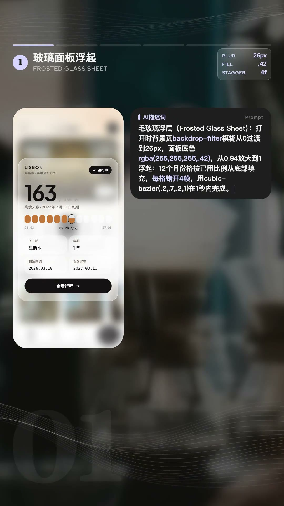
01 "玻璃面板浮起"演示，附 AI 描述词参数（模糊 26px、错开 4 帧）
玻璃面板浮起 BACKDROP BLUR + SHEET
背景先模糊，半透明玻璃面板从底部浮上来，用户始终知道自己原来在哪一页。
怎么做的： 点开后先让后面的页面慢慢模糊，一块半透明的玻璃面板从底下浮上来。12 个月份格子按已经用掉的比例一格一格填满，背景没有被完全挡住。
点开面板，后面的页面慢慢模糊，一块半透明的玻璃面板从底下浮上来，12 个月份格子再按照已经用掉的比例一格一格填满。背景没有被完全挡住，还能知道自己原来在哪一页。
AI 描述词
弹窗打开时，背景页加 backdrop-filter: blur(26px) 并轻微压暗，半透明玻璃面板（rgba 白 12% 底 + 1px 亮边）从底部浮起，错开 4 帧做 spring 上浮；面板内 12 个月份格子按已用比例逐格填充动画，背景不被完全遮挡。
复制
圆环进度弹出 RING + NUMBER SYNC
面板升起的同时外圈圆环画到剩余天数，数字同步变化，最重要的信息打开即给。
怎么做的： 面板从底部升上来，外圈圆环顺着画到剩余天数，中间的数字也跟着一起变化。打开的这一刻，最重要的信息就直接反馈给用户。
面板从底部升上来，外圈圆环顺着画到剩余天数，中间的数字也跟着一起变化。打开的这一刻，最重要的信息就直接给你反馈。
AI 描述词
弹窗面板从底部升起（0.35s ease-out），外圈 SVG 圆环 stroke-dashoffset 从满值动画到剩余天数对应比例，中间数字用滚动计数同步到目标值，两者同帧开始、同时结束。
复制
刻度尺扫到今天 SCALE SWEEP
面板像一张纸质凭证滑出来，时间刻度从头扫到今天这一格再停住。
怎么做的： 面板像一张纸质凭证滑出来，下方时间刻度从头扫到今天这一格，然后停住。点一下显示按钮，完整编号原地展开。用了多久、还剩多少，打开就能感受到。
面板向一张纸质凭证划出来，下面的时间刻度从头扫到今天这一格，然后停住，再点一下显示按钮，完整编号原地展开。用了多久还剩多少，打开就能感动。
AI 描述词
弹窗以纸质凭证质感滑出（轻微旋转 + 阴影），底部时间刻度尺用高亮指针从起点匀速扫到"今天"所在格后停住（0.6s），点击显示按钮后完整编号原地向下展开，不跳转页面。
复制
照片抽屉贴合 PHOTO + DRAWER
照片先放大铺满，抽屉从下面推上来压住下沿，有画面感也不丢信息。
怎么做的： 先显示一张照片放大铺满，接着抽屉从下面推上来，刚好压住照片的下沿。数字、进度和按钮都收进抽屉里，有画面感，信息也照样清楚。
显示一张照片放大铺满，接着抽屉从下面推上来，刚好压住照片的下沿。数字、进度和按钮都收进抽屉里，有画面感，信息也照样清楚。
AI 描述词
弹窗打开先展示一张放大铺满的照片（0.3s scale-in），随后抽屉从底部推上，上沿恰好压在照片下 1/4 处；数字、进度条、操作按钮全部收进抽屉，抽屉圆角顶部 24px 并带拖动把手。
复制
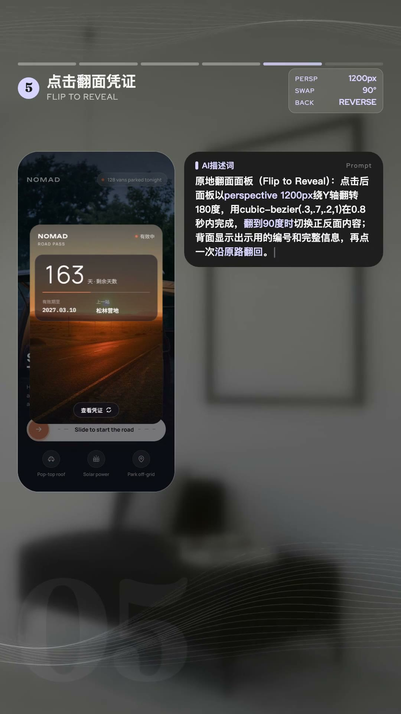
05 "点击翻面凭证"演示，附 AI 描述词（原地翻转、90 度切换内容）
点击翻面凭证 FLIP IN PLACE
不用跳新页面，整块面板原地翻过去，正反两面固定在同一位置。
怎么做的： 点"查看凭证"不用跳到新页面，整块面板直接在原地翻过去。正面是凭证信息，翻到背面就是需要出示的信息。正反两面都在同一个位置，整个过程不会丢掉上下文。
点查看凭证，不用跳到新页面，整块面板直接在原地翻过去。正面是凭证信息，翻到背面，就是需要出示的信息。正反两面都在同一个位置，整个过程不会丢掉上下文。
AI 描述词
点击后卡片绕 Y 轴翻转 180 度，在 90 度处切换正反面内容，0.8s 完成；反面默认 backface-visibility: hidden，正反两面尺寸与位置完全一致，翻转过程不改变弹窗在页面中的定位。
复制
下拉展开面板 DRAG HANDLE
面板底部留可拖动把手，往下一拉下半张面板跟着展开。
怎么做的： 面板从底部弹出来，最下面留一个可以拖动的把手，手指往下一拉，下半张面板跟着展开，完整信息直接露出来。需要出示的时候，拉一下就能看到。
面板从底部弹出来，最下面留一个可以拖动的把手，手指往下一拉，下半张面板跟着展开，完整信息直接露出来。
AI 描述词
弹窗面板底部留 32px 高拖动把手（含 40x4px 圆角指示条），把手支持向下拖拽，面板高度随手势从 45% 展开到 90%，松手按当前速度吸附到最近档位。
复制
弹窗其实每天都会被点开很多次。真正影响使用质感的，除了内容放了什么，还有打开的时候有没有反馈、有没有层次。这六种交互可以直接作为你做 App 和小程序时的参考。
一个 UI 设计 Skill，教你让 AI 做出高级审美 Web 交互 西瓜同学🍉 2026-10-09 约 207.0 秒
查看原视频 ↗ AI 做网页几分钟就能搭出页面，但总差一点高级感——问题往往出在交互细节上。这一期用 UI 设计 Skill 加 AI 描述词，做了 10 个 Web 高级交互：滚动钉住主图、光标承担可操作提示、磁吸按钮、导航底色跟随、图表跟随鼠标、圆形扩散换肤等等。Skill 统一了回弹力度和用色规矩，所以每个交互的手感是一致的。
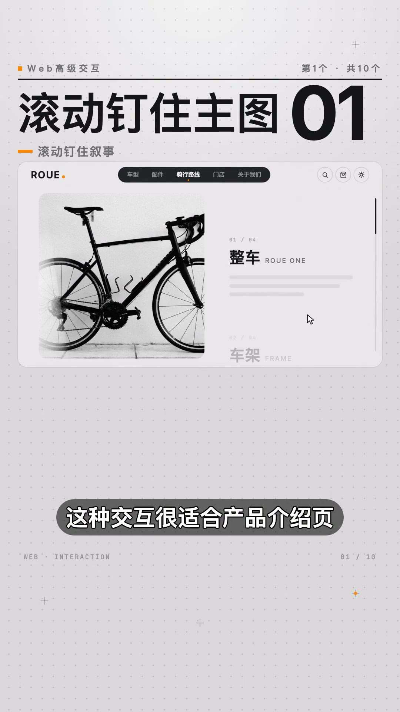
01 "滚动钉住主图"演示，单车产品介绍页效果
滚动钉住主图 SCROLL PIN + NARRATIVE
产品介绍页专用：主图固定居中，旁侧文案分段切换，主图随段落推进并点亮重点。
怎么做的： 页面往下滚的时候，主图固定在中间，旁边的文字一段段切换，每换一段主图就跟着推进到对应位置，再把重点区域亮出来。原本很长的一段介绍，变成了一个跟着滚动发生的视觉叙事。
页面往下滚的时候，主图固定在中间，旁边的文字一段段切换，每换一段主图就跟着推进对应的位置，再把重点区域亮出来。原本很长的一段介绍，变成了一个跟着滚动发生的视觉叙事。
AI 描述词
产品介绍页采用滚动钉住布局：主图 position: sticky 固定居中，右侧文案按段落切换，每进入一段主图平移到对应位置并高亮重点区域（scale 1.04 + 阴影加深），滚动进度用 ScrollTrigger 驱动，整体作为连续视觉叙事。
复制
光标即可操作提示 CURSOR AS AFFORDANCE
小圆点放大成橙色圆并显示"查看"，光标本身就在告诉用户这里可以操作。
怎么做的： 鼠标移到大图上，小圆点直接放大成一个橙色圆，中间出现"查看"二字；移到按钮上又缩回小点。这样用户不用看额外的提示，光标本身就在告诉它这里可以操作。
鼠标移到大图上，小圆点直接放大成一个橙色圆，中间出现查看。移到按钮上又缩回小点。这样用户不用看额外的提示，光标本身就在告诉它，这里可以操作。
AI 描述词
在大图区域用自定义光标替代默认指针：默认为 8px 小圆点，悬停可查看区域时放大为 48px 橙色圆并居中显示"查看"文字，移到按钮上缩回小点，缩放用 0.2s ease-out。
复制
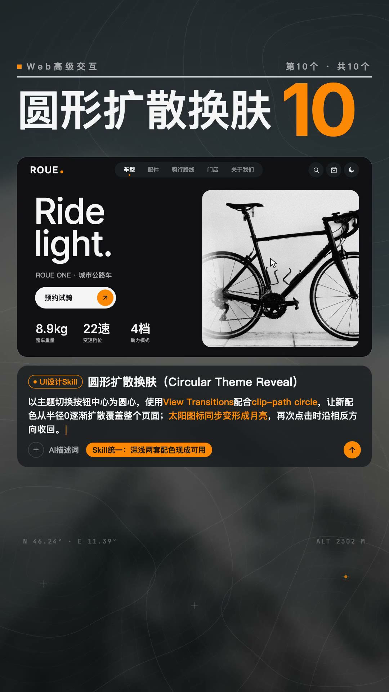
03 "圆形扩散换肤"演示，附 AI 描述词（View Transitions + clip-path）
磁吸按钮 MAGNETIC BUTTON
鼠标未碰到按钮就被轻轻吸过来，松开按同一力度回弹——Skill 统一了力度。
怎么做的： 鼠标还没碰到按钮，按钮就会被光标轻轻吸过来，跟着移动一点，松开之后再弹回原来的位置。这种很小的位移就能让普通按钮多一点互动感。回弹的力度后面每个交互都是同一种，这就是 Skill 统一出来的。
鼠标还没碰到按钮，按钮就会给光标轻轻吸过来，跟着移动一点，松开之后再弹回原来的位置。这种很小的位移，就能让普通按钮多一点互动感。这个回弹的力度，后面每个交互都是同一种，这就是 Skill 统一出来的。
AI 描述词
按钮进入光标 80px 范围后被吸引，位移量按距离衰减（最大 12px），用 spring(stiffness 180, damping 12) 跟随；离开后按同一 spring 参数回弹归位，全站所有磁吸元素共用这一组回弹参数。
复制
图标按钮展开标签 ICON → LABEL
平时只显示一排圆形图标保持页面干净，悬停向右展开文字标签。
怎么做的： 平时只显示一排圆形图标，保持页面干净。鼠标停在哪一个，它就向右展开，把对应的文字标签带出来，移开之后又恢复成圆形。不用把所有信息都一直摆出来，需要的时候再告诉用户。
平时只显示一排圆形图标，保持页面干净，鼠标停在哪一个，它就向右展开，把对应的文字标签带出来，移开之后又恢复成圆形。不用把所有信息都一直摆出来，需要的时候再告诉用户。
AI 描述词
工具栏默认只显示 40px 圆形图标按钮，悬停时宽度从 40px 过渡到 图标 + 文字标签 + 16px padding，文字向左展开、图标保持原位，移开后收回圆形，过渡 0.25s cubic-bezier(.4,0,.2,1)。
复制
导航底色跟随 NAV PILL SLIDE
圆角底色跟着鼠标滑过去，宽度随文字长度自动变化，导航产生连续互动感。
怎么做的： 鼠标在顶部导航移动的时候，后面的圆角底色也跟着划过去。每个导航文字长度不同，底色的宽度也会自动变化。比简单的换个文字颜色，更能让导航产生连续的互动感。
鼠标在顶部导航移动的时候，后面的圆角底色也跟着划过去。每个导航文字长度不同，底色的宽度也会自动变化。比简单的换个文字颜色，更能让导航产生连续的互动感。
AI 描述词
顶部导航项共用一块绝对定位的圆角底色（radius 999px），鼠标移入时底色平滑滑动到该项的 left/top 并把宽度过渡为该标签宽度 + 24px，移出导航区时底色淡出，滑动用 0.3s ease-out。
复制
功能块悬停翻色 HOVER SWEEP
橙色从右上角箭头开始向外扩散覆盖整块，文字同步反转，箭头跟着转向。
怎么做的： 鼠标移上去之后，橙色从右上角的箭头开始一点点向外扩散，最后覆盖整个功能块，文字同步反转，箭头也跟着转向。一个很简单的悬停，就能让一整排功能块有了层次。全页只有当前这一块是橙色——这条用色的规矩也是 Skill 定的。
鼠标移上去之后，橙色从右上角的箭头开始，一点点向外扩散，最后覆盖整个功能块，文字同步反转，箭头也跟着转向。一个很简单的悬停，就能让一整排功能块有了层次。全页只有当前这一块是橙色，这条用色的规矩也是 Skill 定的。
AI 描述词
功能块悬停时橙色背景以右上角箭头为圆心用 clip-path circle() 从 0 扩散到 150%，文字颜色同步反转为白，箭头旋转 45deg，扩散 0.4s ease-out；同一屏内只允许一个功能块处于橙色高亮态。
复制
分档拖动条 SNAPPING SLIDER
拖动圆钮数字一格一格变化，走过的区域变橙，松手自动吸附到最近档位。
怎么做的： 有些参数如果直接用下拉框选择，操作起来会比较费劲。换成拖动条之后，拖动圆钮数字一格一格变化，走过的区域同步变成橙色，松手之后还会自动吸附到最新的档位。调到多少，不用猜，一眼就能看到。
有些参数如果直接用下拉框选择，操作起来会比较激泄。换成这种拖动条之后，拖动圆扭数字一格一格变化，走过的区域同步变成橙色，松手之后还会自动吸附到最新的档位。调到多少，不用猜，一眼就能看到。
AI 描述词
分档参数用自定义 slider 替代下拉框：轨道按档位等分并显示刻度，拖动时圆钮移动、已走过区域填充橙色、数字随档位逐格变化，松手以 0.2s 吸附到最近档位并轻微回弹。
复制
图表跟随鼠标 CHART CROSSHAIR
鼠标横向移动带出一条竖线，左边柱子亮起右边压暗，顶部数字实时变化。
怎么做的： 鼠标在柱状图上横向移动，一条竖线跟着走，左边的柱子亮起来、右边压暗，顶部数字也实时变化。不用一根根停下来找数据，扫过去就能快速读完整张图。
鼠标在柱状图上横向移动，一条竖线跟着走，左边的柱子亮起来右边压按，顶部数字也实时变化。不用一根根停下来找数据，扫过去就能快速读完整张图。
AI 描述词
柱状图监听 mousemove，绘制一条跟随光标的垂直参考线，参考线左侧柱子保持饱和色、右侧透明度降到 0.35，顶部汇总数字实时切换为当前列数值，变化用 0.15s 过渡。
复制
悬停预览图片 LIST → FLOAT IMAGE
文字列表划到哪一行，对应图片就跟着浮出来，列表本身保持整齐。
怎么做的： 一列文字列表，鼠标划到哪一行，对应的图片就跟着浮出来，换一行图片也跟着换。列表本身保持整齐，图片只在需要的时候出现。这种交互特别适合案例展示、作品集和产品介绍页。
一列文字列表，鼠标划到哪一行，对应的图片就跟着浮出来，换一行，图片也跟着换。列表本身保持整齐，图片只在需要的时候出现。这种交互特别适合案例展示、作品集和产品介绍页。
AI 描述词
文字列表悬停时，在光标右上方浮出对应预览图（宽 280px，radius 12px，带阴影），切换行时图片交叉淡切（0.2s），列表行高与排版不随图片出现而改变，图片只在悬停态存在。
复制
圆形扩散换肤 VIEW TRANSITIONS THEME
深浅色从按钮位置圆形扩散覆盖全页，图标同时变形，再次点击原路收回。
怎么做的： 点击右上角的太阳，深色从按钮的位置一点点向外扩散，直到覆盖整个页面，图标同时变成月亮；再次点击，又从原来的位置收回来。连一个简单的深浅色切换，都可以变成页面的一部分。深浅两条配色不用自己调，Skill 里本来就有。
点击右上角的太阳，深色从按钮的位置一点点向外扩散，直到覆盖整个页面，图标同时变成月亮。再次点击，又从原来的位置收回来。连一个简单的深浅色切换，都可以变成页面的一部分。深浅两条配色，不用自己调，Skill 里本来就有。
AI 描述词
深浅色切换用 View Transitions API：以触发按钮圆心为原点，新主题用 clip-path circle() 从 0 扩散到 150% 覆盖全页（0.5s），太阳/月亮图标同步做形变过渡；反向点击时从同一位置收缩收回，两套配色变量直接取自设计规范。
复制
AI 做网页几分钟就能把一个页面搭出来，但想让它真正摆脱那种普通模板化的感觉，很多时候差的就是这些交互细节。用的时候就两步：先调用 UI 设计 Skill，再把这期的描述词贴进去。
3 个 UI 设计 Skills 工作流，让 AI 做出高级网页 西瓜同学🍉 2026-10-09 约 246.3 秒
查看原视频 ↗ 同样让 AI 做网页，为什么有的只是把页面拼出来，有的却连动效和细节都做得很到位？关键在于给 AI 一套完整的 UI 设计工作流。这一期把三个 Skill 串起来，用活动落地页、内容社区、品牌官网三个真实案例从头跑一遍：需求 Skill 确定页面做什么，UI Skill 确定怎么设计，术语 Skill 把说不清的效果准确告诉 AI。
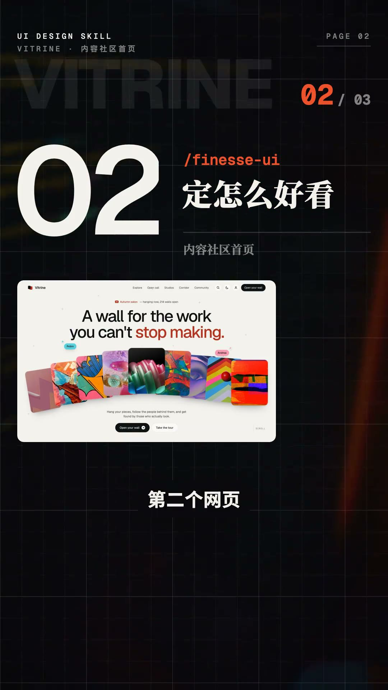
01 内容社区首页效果，作品沿弧线排列的展示页
第一步：需求 Skill DEFINE BEFORE DESIGN
不急着画页面，先把目标用户、传达内容、区块任务拆成一份页面定义。
怎么做的： 做线上挑战活动落地页时，第一步先把需求交给需求 Skill，只告诉它"做一个线上挑战活动的落地页，给想报名参加的人看"。它不急着画页面，先把这件事拆清楚：目标用户是谁、页面要传达什么、需要哪些内容、每个区块解决什么问题，最后整理成一份页面定义，后面的设计都基于这份定义往下做。
我不会一上来就让 AI 写页面。第一步，先把需求交给需求 Skill，只告诉他，做一个线上挑战活动的落地页，给想报名参加的人看。他不急着画页面，先把这件事拆清楚：目标用户是谁、页面要传达什么、页面需要哪些内容、每个区块解决什么问题。最后整理成一份页面定义。
AI 描述词
先让 AI 输出页面定义，不要画页面：目标用户是谁、要传达什么、页面需要哪些内容、每个区块解决什么问题，整理成一份可复用的页面定义文档，后续所有设计都基于这份定义往下做。
复制
第二步：UI Skill 定方向 VISUAL DIRECTION
只给视觉目标不给风格，让 UI Skill 自己决定版式、字体与用色。
怎么做的： 接着让 UI Skill 接手，只告诉它"根据这份页面定义，设计页面，要有视觉冲击力，但不要做成模板"。这时候它才开始决定页面长什么样——这一版它选择了海报字体风，大标题用高条的粗体字，其中一个词做成空心描边，整体冷白配墨黑，打一只亮黄做点缀。方向确定之后，页面才真正搭起来。
根据这份页面定义，设计页面，要有视觉冲击力，但不要做成模板。这时候，他才开始决定页面长什么样。这一版他选择了海报字体风，大标题用高条的粗体字，其中一个词做成空心描边，整体冷白配墨黑，打一只亮黄做点缀。方向确定之后，页面才真正搭起来。
AI 描述词
根据页面定义设计视觉方向，要求有冲击力但不模板化：指定字体气质（如高条粗体标题 + 一个空心描边词）、主色板（冷白/墨黑 + 单一亮色点缀），先输出设计方向再搭建页面。
复制
落地页的滚动叙事 SCROLL STORYTELLING
卡片沿弧线依次进入，曲线跟着滚动画出，数字从零滚到目标值。
怎么做的： 页面左边是大标题，右边一张横幅，下面的卡片错落排开，打开页面时沿着一条弧线依次进入。继续往下滚，页面会停住，一条曲线跟着滚动慢慢画出来，下面的刻度同步点亮。再往下，数字从零滚到目标值，柱子从底部长出来。最后一面卡片墙斜着进入，未解锁的内容保持灰色。到这里，AI 做的已经不只是网页排版，它有了自己的视觉节奏和交互方式。
页面左边是大标题，右边一张横幅，下面的卡片错落排开，打开页面时沿着一条弧线依次进入。继续往下滚，页面会停住，一条曲线跟着滚动慢慢画出来，下面的刻度同步点亮。再往下，数字从零滚到目标值，柱子从底部长出来。最后一面，卡片墙斜着进入，未解锁的内容保持灰色。
AI 描述词
落地页滚动叙事：首屏卡片沿弧线错落依次进入；滚动暂停后一条曲线随进度描绘出来、刻度同步点亮；数字从 0 滚动到目标值、柱状条从底部长出；结尾卡片墙斜向进入，未解锁项保持灰色不可点。
复制
只给视觉目标 GOAL NOT STYLE
内容社区不指定风格，只给"让作品成为主角、浏览要有探索感"。
怎么做的： 第二个案例故意不给他太多视觉要求，需求只写一句："这是一个展示创作者作品的社区页面，希望用户可以快速浏览、发现和进入作品。"需求 Skill 照样先把页面结构和内容关系整理出来，交给 UI Skill 的时候不指定做成什么风格，只给它一个目标：让作品成为页面的主角，浏览过程要有探索感。它会根据这个目标自己建立视觉语言。
我故意不给他太多视觉要求，需求只写一句：这是一个展示创作者作品的社区页面，希望用户可以快速浏览、发现和进入作品。交给 UI Skill 的时候，我不指定做成什么风格，只给他一个目标：让作品成为页面的主角，浏览过程，要有探索感。他会根据这个目标，自己建立视觉语言。
AI 描述词
只给 AI 定视觉目标，不指定风格：如"让作品成为页面的主角、浏览过程要有探索感"，由 AI 自行推导版式、配色与动效语言。
复制
社区页的视觉规则 CONTENT-FIRST LAYOUT
作品沿弧线排列、页面几乎不抢颜色，同一批内容换一种布局就是新的一屏。
怎么做的： 首页不做规则的卡片，让作品沿着弧线排列，页面几乎不抢颜色，把视觉重点全部留给作品。确认之后，先打骨架再填图、填字、上样式，一整页就长出来了。鼠标靠近某张卡片，当前作品抬起放大，周围的卡片跟着联动。想换一种气质也不用重新设计，只告诉 AI 加一个夜间主题、作品也换一批、用色更收敛一点，整页就翻成夜间。继续往下，卡片不会一板一眼地切换，它们随着滚动重新组合：这一屏排成斜向的阶梯，再往后连成一条作品长廊。同一批内容，换一种布局，就是新的一屏。
首页不做规则的卡片，让作品沿着弧线排列，页面几乎不抢颜色，把视觉重点全部留给作品。鼠标靠近某张卡片，当前作品抬起、放大，周围的卡片跟着联动。想换一种气质，也不用重新设计，我只告诉 AI 加一个夜间主题，作品也换一批，用色更收敛一点，整页就翻成夜间。继续往下，卡片不会一板一眼地切换，它们随着滚动重新组合。
AI 描述词
作品社区首页：作品沿弧线错落排列而非规则网格，页面用色极度收敛、把视觉重点全部让给作品；悬停卡片时该作品抬升放大、邻近卡片联动偏移；支持一键切换夜间主题并同步更换作品批次与用色浓度。
复制
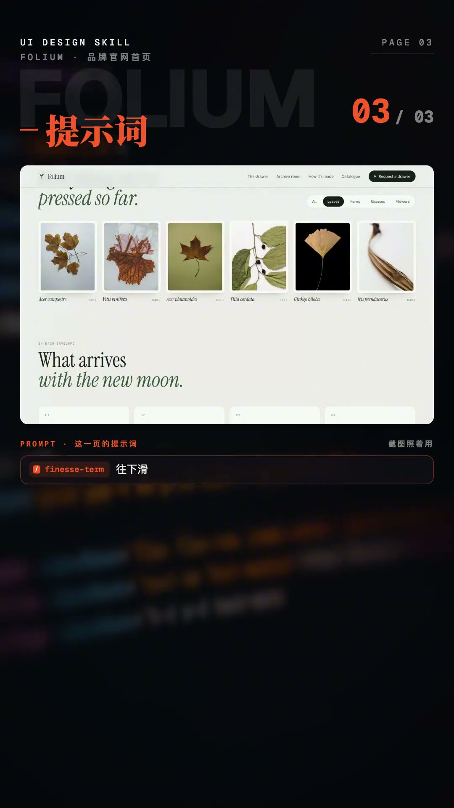
06 品牌官网页的提示词示例（/finesse-term 调用截图）
第三步：术语 Skill PLAIN WORDS → SPEC
把"卡片一张张往前倒、左边的字跟着换"翻译成可执行的设计描述。
怎么做的： 第三个案例品牌官网，流程还是一样：需求 Skill 先定义页面，UI Skill 再把视觉和交互搭起来。页面搭起来之后有一段交互想重新调整，脑子里有画面，却根本不知道这个效果叫什么，只会说"卡片一张张往前倒，左边的字跟着换"。这句话人能听懂，AI 却不一定知道该怎么实现。这时候就轮到术语 Skill，把这句大白话交给它，它会换成更准确的设计描述："滚动时固定内容区域，卡片逐张向前翻转，左侧文案同步切换"。
有一段交互，我想重新调整。脑子里有画面，可我根本不知道这个效果叫什么。我只会说，卡片一张张往前倒，左边的字跟着换。这句话人能听懂，AI 却不一定知道该怎么实现。这时候就轮到术语 Skill，把这句大白话交给它，它会换成更准确的设计描述：滚动时固定内容区域，卡片逐张向前翻转，左侧文案同步切换。
AI 描述词
把说不清的动效说成大白话，让术语 Skill 翻译成准确设计描述。例如输入"卡片一张张往前倒，左边的字跟着换"，输出"滚动时固定内容区域，卡片逐张向前翻转，左侧文案同步切换"，再把这段描述交给 AI 执行。
复制
术语 Skill 的产出 EXECUTABLE SPEC
原本说不清的效果变成可以执行的设计语言，页面被准确地做出来。
怎么做的： 再把这段描述交给 AI，原本说不清的效果就变成了可以执行的设计语言，页面也准确地做了出来：每滚一格就有一张卡片往前翻，左边的文字跟着换；再往下一条线顺着步骤一路画出来；最后是一面可以筛选的网格，点一个分类，不相关的内容缩小淡出，剩下的重新排列。
每滚一格就有一张卡片往前翻，左边的文字跟着换。再往下一条线，顺着步骤一路画出来。最后是一面可以筛选的网格，点一个分类，不相关的内容缩小、淡出，剩下的重新排列。
AI 描述词
把术语 Skill 输出的设计描述直接作为实现指令：滚动时卡片逐张前翻 + 左侧文案同步切换；步骤线随滚动描绘；筛选网格点选分类后不相关项缩小淡出、其余重新排列。
复制
三个网页其实是三个不同的问题：我到底要做什么、这个页面该怎么设计、我想要的效果该怎么告诉 AI。三个 Skill 串成一条完整的 UI 设计工作流——先定义页面，再建立设计，最后把效果说准。所有提示词都放在画面上，照着就可以用。
让 AI 做出高级审美 6 种 App 和小程序布局 西瓜同学🍉 2026-10-09 约 122.5 秒
查看原视频 ↗ 六个 App 和小程序高级审美布局，一次讲完。每一种都配好了 AI 描述词，照着说就能做出来。这六种布局靠比例和主次拉开审美差距：大字标题接整宽图片、大图头块叠加信息、黑白两档区分主次、大色块网格托住关键数字、海报大字配半圆转盘，以及可上拖切换的叠放堆栈。
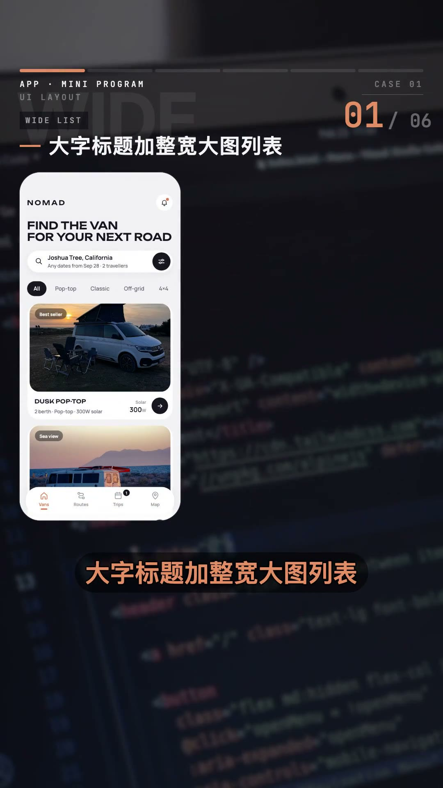
01 "大字标题加整宽大图列表"布局演示
大字标题加整宽大图 BIG TYPE + FULL-WIDTH
顶部两行宽体大写字母当标题，一进来就知道这是干什么的。
怎么做的： 顶部两行宽体大写字母当标题，字号极大，一进来就知道这是干什么的。下面一条搜索栏，右边一个黑色圆按钮管筛选，再下面一排分类，选中的那个变成黑底。每一项都是一整张大图，名字、参数和箭头按钮排在图下面一行，往下划一张接一张。
顶部两行宽体大写字母当标题，字号极大，一进来就知道这是干什么的。下面一条搜索栏，右边一个黑色圆按钮管筛选，再下面一排分类，选中的那个变成黑底。每一项都是一整张大图，名字、参数和箭头按钮排在图下面一行。
AI 描述词
列表页顶部用两行超宽体大写字母作标题（占屏宽 90%、行高 0.95），其下一条搜索栏 + 右侧黑色圆形筛选按钮；分类横滑，选中项黑底白字；列表项为整宽大图（16:10），名称/参数/箭头按钮排在图片下方一行。
复制
大图头块叠信息 HERO OVERLAY
大图占掉三分之一屏，目的地倒计时和按钮全部压在图上，不单独占地方。
怎么做的： 最上面一块大图占掉三分之一屏，目的地、倒计时和按钮全部压在图上，不用再单独占地方。下面一块白底天气，一排日期块，当天那一块用深色顶出来，底下一条曲线把温度连起来，一眼就知道今天在哪、要带什么。
最上面一块大图占掉三分之一屏，目的地倒计时和按钮，全部压在图上，不用再单独占地方。下面一块白底天气，一排日期块，当天那一块用深色顶出来，底下一条曲线把温度连起来，一眼就知道今天在哪，要带什么。
AI 描述词
首屏大图占 33% 屏高，目的地名称、倒计时与主操作按钮以浮层形式压在图上（底部渐变遮障保证可读性）；下方白底天气卡用横滑日期块，当天用深色底突出，温度用平滑曲线串联。
复制
黑白两档主次 TWO-TONE HIERARCHY
最想点的模块直接黑底白字，其余全白，不用第三种颜色也分得清主次。
怎么做的： 整页浅灰打底，最想让你点的那一块直接做成黑色、白字压在上面，其余全是白色。上面的分类也一样，选中哪个哪个变黑。再往下一块黑色横幅跟主角呼应。不用第三种颜色，也分得清主次。
整页浅灰打底，最想让你点的那一块，直接做成黑色，白字压在上面，其余全是白色。上面的分类也一样，选中哪个哪个变黑。再往下一块黑色横幅，跟主角呼应。不用第三种颜色，也分得清主次。
AI 描述词
整页浅灰底，只把最想点击的主模块做成黑底白字，其余模块保持白底；分类选中态同样黑底；下方加一条黑色横幅与主模块呼应。全页仅用黑、白、浅灰三档，不引入第三种色相。
复制
大色块网格 COLOR BLOCK GRID
一块亮黄大色块托住今天最重要的数字，四列小格一格一个，点一下就打卡。
怎么做的： 一块亮黄大色块棒住今天最重要的数字，周围全是浅灰底，右边一个圆环把完成度画出来。标题用超粗的中英两行，下面四列小格一格一个，颜色压成浅浅的一层，点一下就打卡，主次一眼分开。
一块亮黄大块棒，今天最重要的数字，周围全是浅灰底，右边一个圆环把完成度画出来。标题用超粗的中英两行，下面四列小格一格一个，颜色压成浅浅的一层，点一下就打卡，主次一眼分开。
AI 描述词
首页用大色块网格：一块亮黄大色块承载今日核心数字（超粗中英双行标题），右侧圆环展示完成度；下方 4 列小格每格一个习惯，底色压成 12% 透明度浅色，点击即打卡并填充对应色。
复制
海报大字加半圆转盘 POSTER + DIAL
方块大字配半圆转盘，选中项停在正上方，一屏只做一件事。
怎么做的： 顶部用方块大字当标题，黑白两色叠在紫色底上。中间一段半圆转盘，选中的那一项停在正上方。下面一个超大的数字配一个黑色按钮，最底下一排紫色底图标，一屏只做一件事。
顶部用方块大字当标题，黑白两色叠在紫色底上。中间一段半圆转盘，选中的那一项停在正上方。下面一个超大的数字配一个黑色按钮，最底下一排紫色底图标，一屏只做一件事。
AI 描述词
单屏只做一个核心操作：顶部方块字标题黑白双色叠在紫色底上；中部半圆转盘选择器，选中项旋转停靠到正上方（带吸附与轻微回弹）；下方超大数字 + 单个黑色主按钮；底部一排紫色底图标。
复制
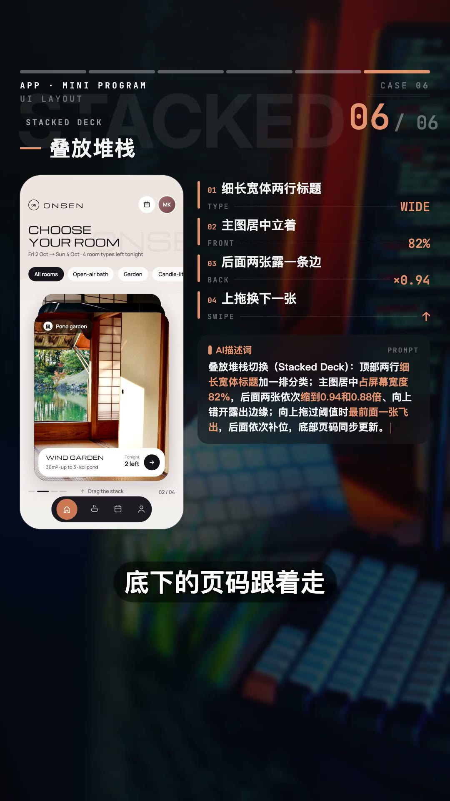
06 "叠放堆栈"布局演示，附 AI 描述词参数截图
叠放堆栈 STACKED CARDS
一张大图立在正中、后面两张只露一条边，往上拖最前面那张飞走。
怎么做的： 顶部两行细长的宽体字当标题，一排分类跟在下面。一张大图立在正中，后面两张只露出一条边，看得出后面还有。往上一拖，最前面那张飞走，后面的补上来，底下的页码跟着走。
顶部两行细长的宽体字当标题，一排分类跟在下面。一张大图立在正中，后面两张只露出一条边，看得出后面还有。往上一拖，最前面那张飞走，后面的补上来，底下的页码跟着走。
AI 描述词
卡片叠放堆栈：首张占屏宽 82% 居中，后两张缩小并只露一侧边缘提示还有内容；上拖时首张带旋转与位移飞出，后续卡片前移补位并轻微放大，底部页码指示器同步切换，全程 spring 过渡。
复制
页面 AI 很快就能搭出来，这六种布局照着描述词说给它，做出来的页面就能高级一个档次。
6 种高审美 Dashboard 交互一次学会 西瓜同学🍉 2026-10-09 约 161.9 秒
查看原视频 ↗ Dashboard 好不好用，一半看布局，一半看点一下之后页面怎么变。这一期把后台最常用的6 种交互布局一次讲透：可拖动模块网格、模块原位放大、顶部筛选全局联动、多图表悬停联动、指标区滚动吸顶、列表加右侧详情抽屉。每种都配好了 AI 描述词，用 Codex 做后台界面时直接贴过去就能用。
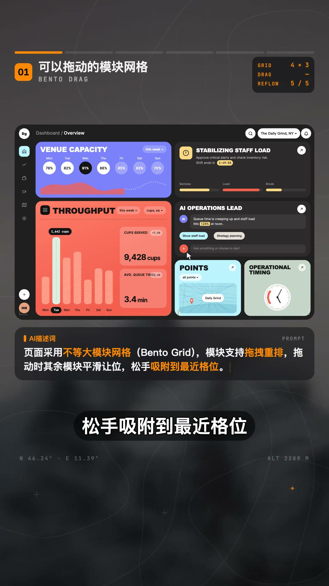
01 "可以拖动的模块网格"演示，附 AI 描述词（Bento Grid、松手吸附）
可拖动模块网格 BENTO GRID DRAG
模块可拖拽重排，其他模块顺势让位，松手自动吸附进网格。
怎么做的： 页面按大小不同的格子排好，按着任意一块拖动，其他模块会顺势让出位置，松手自动吸附进网格。每个人都能把最常看的数据挪到左上角。
页面按大小不同的格子排好，按着任意一块拖动，其他模块会顺势让出位置，松手自动吸附进网格。每个人都能把最常看的数据挪到左上角。
AI 描述词
后台采用不等大模块网格（Bento Grid），模块支持拖拽重排，拖动时其余模块用 FLIP 平滑让位，松手后吸附到最近格位并对齐网格。
复制
模块原位放大 ZOOM TO DETAIL
点击图表从原位放大铺满主区，其余缩成底部缩略图，全程不离开这一页。
怎么做的： 点击任意一块图表，它从原来的位置直接放大铺满主区，其他模块缩成一排缩略图留在底部，看完点缩略图就能切回来，全程不离开这一页。
点击任意一块图表，它从原来的位置直接放大铺满主区，其他模块缩成一排缩略图留在底部，看完点缩略图就能切回来，全程不离开这一页。
AI 描述词
模块点击后从原位放大为详情视图（shared element transition），其余模块收缩为底部缩略图条；点击缩略图切换详情，关闭时沿原路收回，全程不跳转路由。
复制
顶部筛选全局联动 GLOBAL FILTER
筛选只放一处，切换后所有数字滚动过渡、图表平滑变形，不整页重载。
怎么做的： 时间范围和分类筛选统一放在页面顶部，切换一下，下面所有数字滚动到新值，图表线条平滑变过去，页面不整体刷新。筛选只放一处，用的人不用到处找。
时间范围和分类筛选，统一放在页面顶部，切换一下，下面所有数字滚动到新值，图表线条平滑变过去，页面不整体刷新。筛选只放一处，用的人不用到处找。
AI 描述词
全局筛选条固定在顶部（时间范围 + 分类），切换后所有指标数字滚动过渡到新值、图表数据平滑变形，差值不整页重载，仅更新数据层。
复制
多图表悬停联动 SYNCED CROSSHAIR
共用一条时间参考线，悬停某天时各图同一点一起高亮，其余数据变淡。
怎么做的： 鼠标停在某一天的柱子上，页面里其他图表同一天的位置一起亮起来，别的数据自动变淡。几张图放在一起，终于能对着看了。
鼠标停在某一天的柱子上，页面里其他图表同一天的位置，一起亮起来，别的数据自动变淡。几张图放在一起，终于能对着看了。
AI 描述词
多图表悬停联动：悬停时所有图表同步高亮同一数据点，其余数据透明度降至 0.3，全页共用一条时间参考线。
复制
指标区滚动吸顶 STICKY COMPACT
大号指标往下滚时缩成一行小字贴顶栏，往回滚又展开成原来的大小。
怎么做的： 页面顶部是几个大号指标，往下滚动时它们缩成一行小字贴在顶栏上，数字一直看得见，往回滚又展开成原来的大小。长页面也不会看着看着就丢了重点。
页面顶部是几个大号指标，往下滚动时，它们缩成一行小字，贴在顶栏上，数字一直看得见，往回滚又展开成原来的大小。长页面也不会看着看着就丢了重点。
AI 描述词
顶部指标区滚动吸顶收缩：由滚动进度驱动字号与间距，收成单行后固定在顶栏；反向滚动时连续还原到原始大小，过渡无跳变。
复制
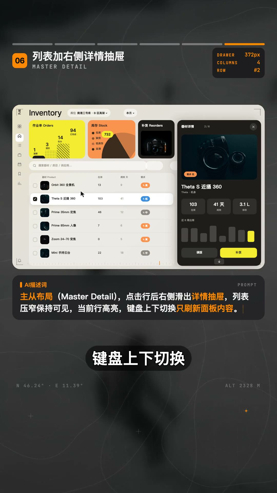
06 "列表加右侧详情抽屉"演示，附 AI 描述词（主从布局、键盘切换）
列表加右侧详情抽屉 MASTER-DETAIL DRAWER
点击行后详情从右侧滑出，列表压扁留在左边，键盘上下切换只刷新面板。
怎么做的： 点击表格里的一行，详情面板从右边滑出来，列表自动压扁留在左边，当前行保持高亮。上下切换记录时只换面板里的内容，前后对比特别快。
点击表格里的一行，详情面板从右边滑出来，列表自动压扁留在左边，当前行保持高亮。上下切换记录时，只换面板里的内容，前后对比特别快。
AI 描述词
主从布局：点击行后右侧滑出详情抽屉，列表压扁保持可见，当前行高亮；支持键盘上下键切换记录，仅刷新面板内容不重绘列表。
复制
Dashboard 好不好用，一半看布局，一半看点一下之后页面怎么变。布局先给交互留好位置，页面才会又清楚又顺手。
6 种 App 和小程序高级交互，一次教会你 西瓜同学🍉 2026-10-09 约 87.1 秒
查看原视频 ↗ 这期六种交互都强调"手一碰就有回应"：面板长按后分层浮起、堆叠卡片随手势飞走、多选项聚成一叠、计时按钮裂变成暂停与结束、视频滚动时缩成小窗、分类与内容双向联动滚动。页面能用 AI 很快搭出来，真正拉开差距的是这些细节。
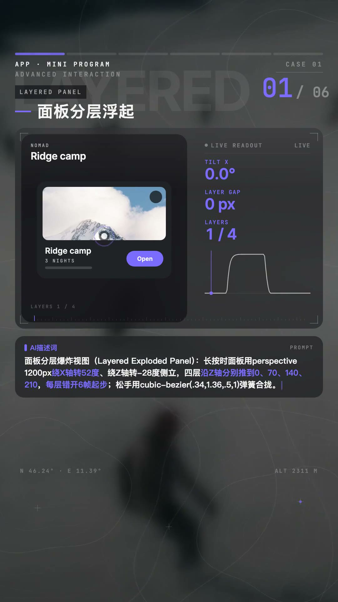
01 "面板分层浮起"演示，附 AI 描述词（爆炸视图参数截图）
面板分层浮起 EXPLODED LAYERS
长按面板侧立，背景图与文字分层浮开，松手合回一整块。
怎么做的： 按住面板它会侧过身立起来，背景、图片、文字一层一层往外浮开，松手所有层再合回一整块。平的界面一下有了纵深，里面有什么也一眼看明白。
按住面板它会侧过身立起来，背景、图片、文字一层一层往外浮开，松手所有层再合回一整块。平的界面一下有了纵深，里面有什么也一眼看明白。
AI 描述词
长按卡片时面板绕 X 轴侧立（rotateX 25°），背景图、图片、文字按 z 轴分层向外浮开（间距 12px，错开 60ms），松手后所有层以 spring 合回整块。
复制
堆叠滑动切换 SWIPE STACK
手指左右一甩，最上面那张跟着手倾斜飞走，下一张从后面顶上来。
怎么做的： 一叠内容落在一起，手指往左右一甩，最上面那张跟着手倾斜飞走，下一张从后面顶上来。一只手就能连续跳下去。
一叠内容落在一起，手指往左右一甩，最上面那张，跟着手倾斜飞走，下一张从后面顶上来。一只手就能连续跳下去。
AI 描述词
卡片堆叠支持左右滑动手势：跟手旋转（最大 ±18°）与位移，甩出时飞出屏幕并淡出，下一张从后方缩放上位，未操作的卡片保持层叠缩进展示。
复制
多选聚成一叠 MULTI-SELECT STACK
长按进入多选，勾选项从原位飞聚成一叠，拖着就能一次挪走多个。
怎么做的： 长按进入多选，勾中的几项从各自的位置飞过来，叠成一落、角上标着数量，拖着这一落就能一次挪走好几个。
长按进入多选，勾中的几项从各自的位置飞过来，跌成一落，角上标着数量，拖着这一落就能一次挪走好几个。
AI 描述词
长按进入多选模式，勾选项从原位飞聚成一叠（层叠偏移 6px，0.3s 内完成），叠角显示已选数量徽标，可整体拖动批量移动，松手后散开或执行批量操作。
复制
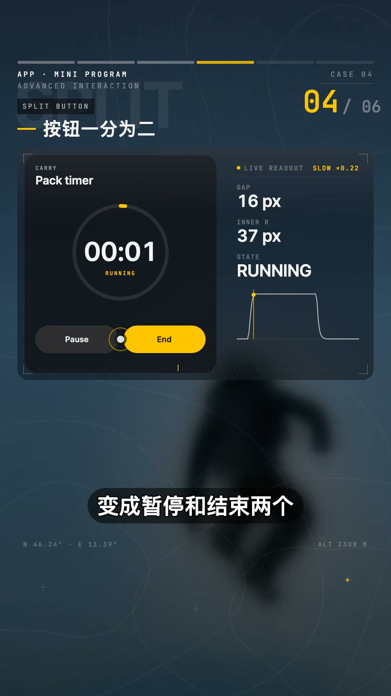
04 "按钮一分为二"演示，计时器裂成暂停和结束两个按钮
按钮一分为二 SPLIT BUTTON
按下开始计时，一个按钮从中间裂开变成暂停和结束，结束后合回。
怎么做的： 按下开始计时，一个按钮从中间裂开，变成暂停和结束两个；按下结束，两个又合回原来那一个。要用的操作刚好在手边。
按下开始计时，一个按钮从中间裂开，变成暂停和结束两个。按下结束两个又合回原来那一个。要用的操作刚好在手边。
AI 描述词
计时按钮按下后从中间裂开为暂停与结束两个按钮（各占半宽，裂开 0.25s）；按下结束时两按钮合并回单个按钮，分裂与合拢均用 spring 动画。
复制
滚动变小窗 SCROLL TO MINI
看视频时往下翻，视频缩成小窗停在角落接着播，点一下放大回原位。
怎么做的： 看视频的时候往下翻，视频缩成一个小窗停在角落接着播，点一下小窗又放大回原来的位置。
看视频的时候往下翻，评论视频缩成一个小窗，停在角落接着播，点一下小窗，又放大回原来的位置。
AI 描述词
视频播放器滚动出视口时收缩为右下角小窗（宽 180px，圆角 + 阴影）继续播放，点击小窗以 shared element 动画放大回原位置并恢复原尺寸。
复制
分类连动滚动 LINKED SCROLL
右侧列表往下滑，左侧分类高亮自动跟到对应位置，双向联动。
怎么做的： 右边列表往下滑，左边分类的高亮自动跟到对应位置；点左边分类，右边直接滚过去。东西再多也找得到。
右边列表往下滑，左边分类的高亮自动跟到对应位置。点左边分类，右边直接滚过去。东西再多也找得到。
AI 描述词
双栏联动滚动：右侧列表滚动时左侧分类高亮自动跟随到对应区块（scroll-spy）；点击左侧分类右侧平滑滚动到对应位置，双向互相同步。
复制
页面能用 AI 很快搭出来，真正拉开差距的是这些手一碰就有回应的细节。
2 个图标库让 AI 拥有更高级的交互审美 西瓜同学🍉 2026-10-09 约 124.8 秒
查看原视频 ↗ 想让界面再精致一点，图标的交互动效其实很关键。同样一个按钮，点击之后图标直接硬切，看起来就会有些生硬；如果线条能顺着状态自然变化，整个页面立刻细腻很多。这一期分享两个动态图标库，分别适合状态切换和操作反馈，最后也讲清楚它们应该怎么搭配使用。
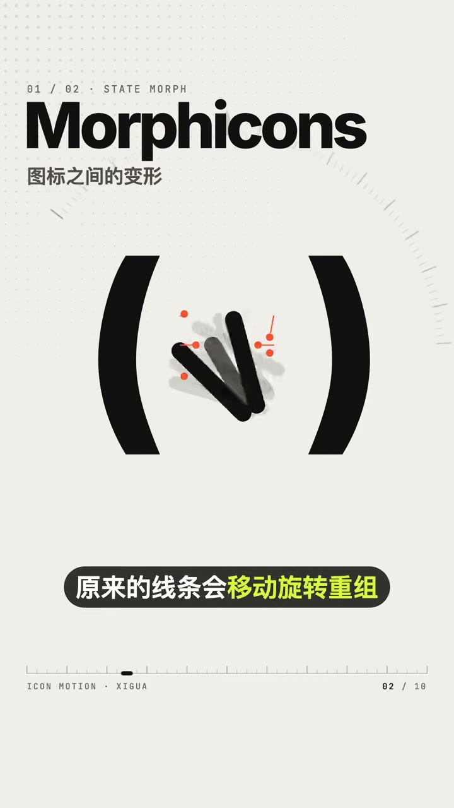
01 Morphicons 演示，线条移动旋转重组变成对勾
MorphIcons：状态切换 MORPHICONS
两个图标状态自然衔接，原来的线条会移动、旋转、重组成下一个状态。
怎么做的： 它最大的特点是让两个图标状态自然衔接。切换时图标不会突然消失再换成新的，原来的线条会移动、旋转、重组，顺着变成下一个状态。比如彩蛋变成关闭、播放变成暂停、太阳变成月亮；完成一条任务时，空心圆也可以自然收成对勾。
它最大的特点，是让两个图标状态自然衔接。切换时就图标不会突然消失，再换成新的，原来的线条会移动旋转重组，顺着变成下一个状态。比如彩蛋变成关闭，播放变成暂停，太阳变成月亮。
AI 描述词
状态切换图标使用 MorphIcons，不硬切：原线条通过移动、旋转、重组连续变形为下一个状态图标（如播放↔暂停、太阳↔月亮、空心圆→对勾），全过程单条 SVG path 过渡。
复制
MorphIcons 用在哪 TOGGLE POSITIONS
适合按钮、导航栏、播放控件、深浅色开关这类需要反复切换状态的地方。
怎么做的： 它很适合放在按钮、导航栏、播放控件、深浅色开关这类需要反复切换状态的地方。用户每点一次，都能清楚看到状态是怎么变化的，页面也不会显得生硬琐碎。
它很适合放在按钮，导航栏，播放控件，深浅色开关，这类需要反复切换状态的地方。用户每点一次，都能清楚看到状态是怎么变化的，页面也不会显得生硬琐碎。
AI 描述词
在按钮、导航栏、播放控件、深浅色开关等需反复切换的位置使用形变图标，保证每次点击都能看到状态连续变化。
复制
LordIcon：操作反馈 LORDICON
用户完成某个操作之后，用一小段动画给出明确反馈。
怎么做的： 它更适合在用户完成某个操作之后，用一小段动画给出明确反馈。比如点击发送，纸飞机直接飞出去；内容正在加载，图标开始循环运动；任务全部清空后，空状态图标轻轻晃动一下，让用户马上知道操作已经完成。
它更适合在用户完成某个操作之后，用一小段动画给出明确反馈。比如点击发送，纸飞机直接飞出去。内容正在加载，图标开始循环运动。任务全部清空后，空状态图标轻轻晃动一下，让用户马上知道操作已经完成。
AI 描述词
操作反馈类动效用 LordIcon：发送后纸飞机飞出、加载时图标循环运动、清空完成后空状态图标轻晃，一次性播放给用户明确反馈。
复制
LordIcon 用在哪 FEEDBACK POSITIONS
颜色和线条可按页面风格调整，适合发送、加载、完成提示、空状态与功能介绍。
怎么做的： 它的颜色和线条都可以根据页面风格调整，很适合用在发送、加载、完成提示、空状态页，以及产品功能介绍这些场景里。
它的颜色和线条，都可以根据页面风格调整，很适合用在发送，加载，完成提示，空状态页，以及产品功能介绍这些场景里。
AI 描述词
在发送、加载、完成提示、空状态、功能介绍等位置使用 LordIcon，颜色与线条粗细跟随页面主题变量调整。
复制
两个库怎么选 CHOOSE BY INTENT
来回切换用 MorphIcons，一次性反馈用 LordIcon。
怎么做的： 如果图标需要在两种状态之间反复切换，就用 MorphIcons；如果需要在一次操作之后用动画告诉用户已经发生了什么，就用 LordIcon。
如果图标需要在两种状态之间反复切换，就用 MorphIcons。如果需要在一次操作之后，用动画告诉用户已经发生了什么，就用 LordIcon。
AI 描述词
按意图选库：需在两种状态间反复切换的图标用 MorphIcons；仅需一次性操作反馈的图标用 LordIcon。
复制
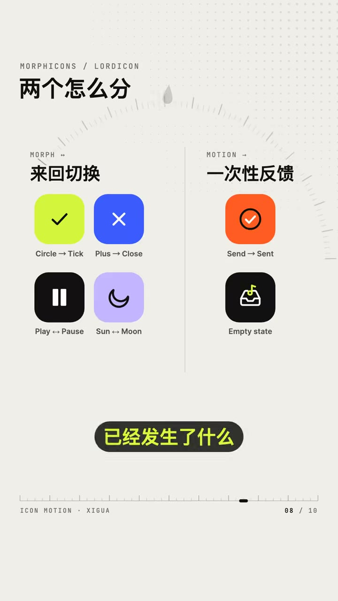
06 两个图标库怎么分（来回切换 vs 一次性反馈）对比图
克制使用动态图标 USE SPARINGLY
动态图标只留给最常点击、最需要反馈的几个位置，反而更显精致。
怎么做的： 不过动态图标也不要放得太多，把它们留给最常点击、最需要反馈的几个位置，反而更容易突出页面的精致感。这些图标的使用场景和搭配规则，也已经整理进 UI 设计 Skill 里，让 AI 做页面时不只是把图标放上去，还能根据不同的交互场景选择合适的动效。
不过动态图标也不要放得太多，把它们留给最常点击、最需要反馈的几个位置，反而更容易突出页面的精致感。这些图标的使用场景和搭配规则，我也整理进了 UI 设计 Skill 里。
AI 描述词
动态图标只放在最常点击、最需要反馈的几个位置，其余图标保持静态；由 UI Skill 按交互场景决定用形变还是反馈动效。
复制
AI 可以很快帮你搭出一个页面，而这些自然克制的小动向，负责把最后的细节做精致。
提升 App 和小程序审美质感 10 个交互组件 西瓜同学🍉 2026-10-09 约 123.8 秒
查看原视频 ↗ 十种组件都围绕同一原则：状态在原容器里连续变化。搜索按钮展开成输入框，悬浮加号展开成面板，提交按钮原位呈现加载与完成，标签指示条拉伸跟随，加入按钮变成步进器，列表与网格保留移动过程，顶栏随滚动收拢。
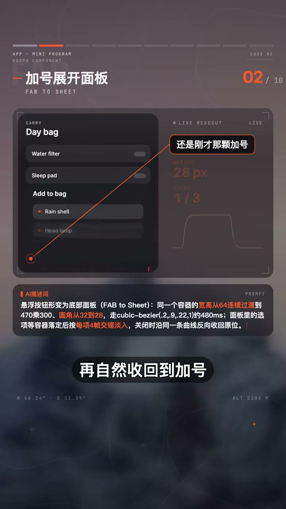
02 “加号展开面板”演示，附 AI 描述词（FAB to Sheet 参数）
加号展开面板 根据内容提炼
转化版提示词
悬浮加号点击后从原位展开成操作面板，关闭沿同一曲线收回
复制 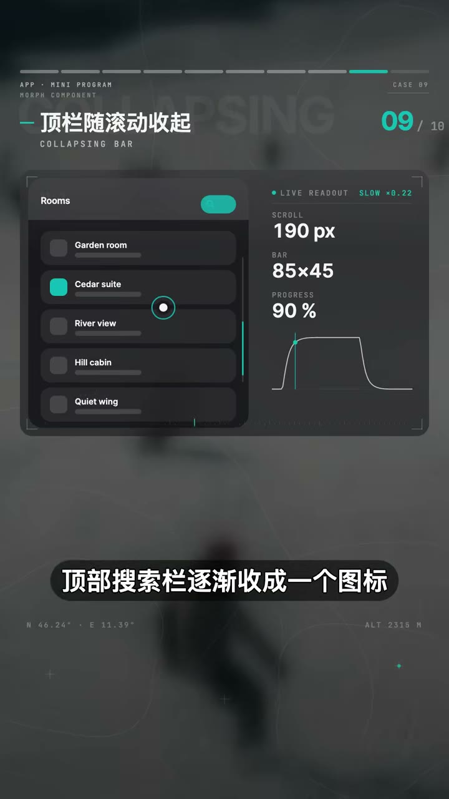
03 “顶栏随滚动收起”演示，搜索栏逐渐收成图标
配图 03 配图说明
“顶栏随滚动收起”演示，搜索栏逐渐收成图标
同一容器连续过渡 根据内容提炼
转化版提示词
状态变化走同一容器的连续过渡，圆角宽高一起变，不要硬切
复制 列表与网格连续切换 根据内容提炼
转化版提示词
切换列表和网格时保留元素移动过程，中间不重新加载
复制
AI 做 UI 设计的 2 个 Skill：术语 Skill 和设计规范 Skill 西瓜同学🍉 图文 2026-10-09 10 张图
查看原图文 ↗ 两个 Skill 分工明确：术语 Skill 把模糊感受翻译成专业设计语言，设计规范 Skill 再把术语细化成参数规则。内容覆盖视觉动线、骨架屏、拇指安全区、毛玻璃底栏、四级字阶、8 倍数间距和引导式空状态。
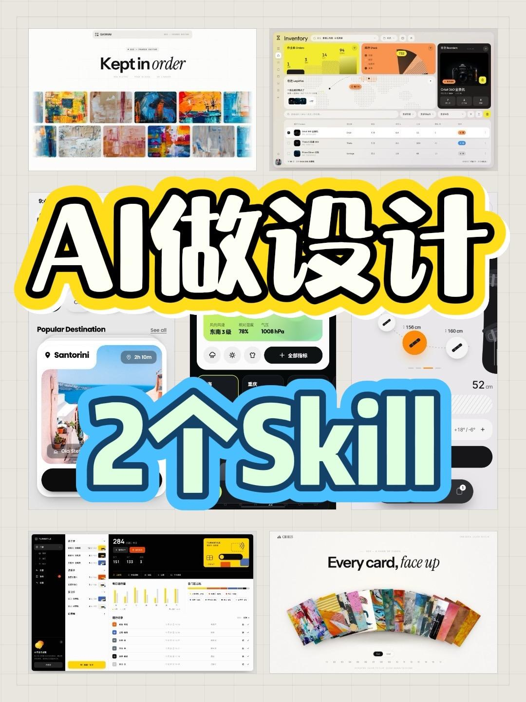
01 图文封面，“AI 做设计 2 个 Skill”
配图 01 配图说明
图文封面，“AI 做设计 2 个 Skill”
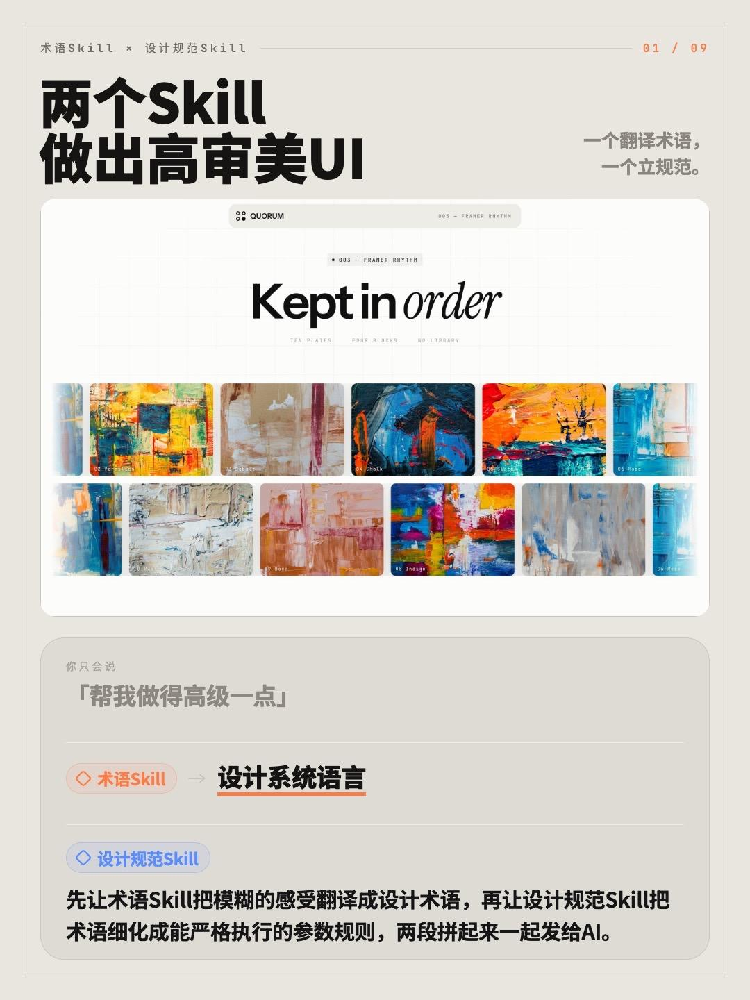
02 两个 Skill 分工（一个翻译术语、一个立规范）
配图 02 配图说明
两个 Skill 分工（一个翻译术语、一个立规范）
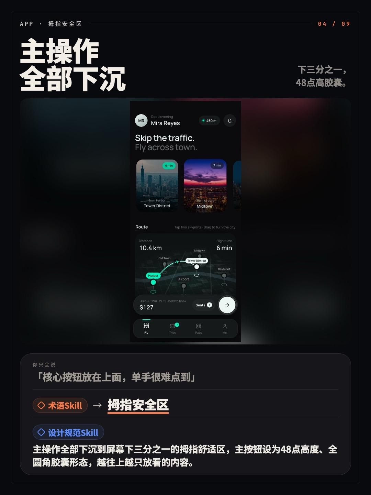
03 主操作全部下沉到拇指安全区规则
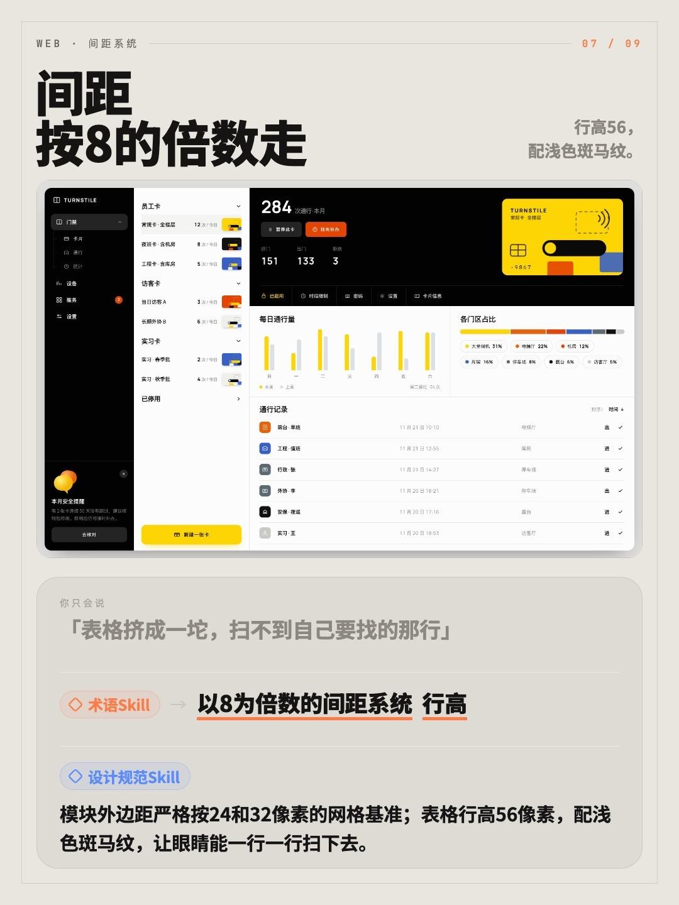
04 间距按 8 的倍数走的规则
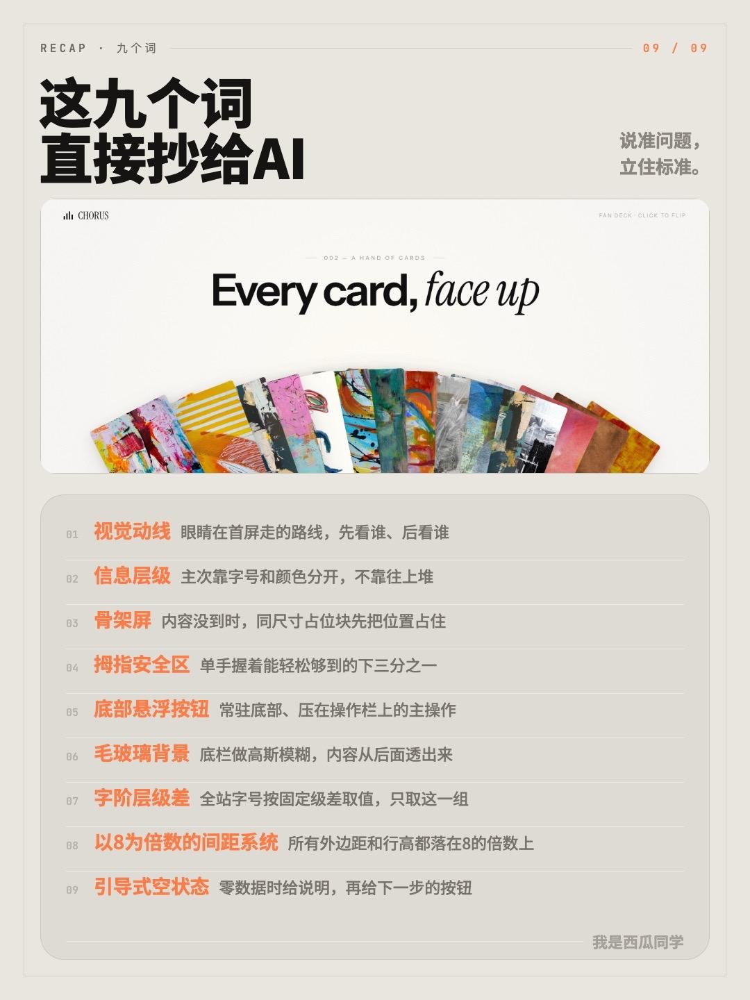
05 九个词汇总，“直接抄给 AI”
首屏只留一个主角 根据内容提炼
转化版提示词
首页只留一个主角做成横滑大图卡，搜索筛选收成一行
复制 统一四级字阶 根据内容提炼
转化版提示词
全站字号只取 24/18/14/12 四档，同层级不用中间值
复制 图片骨架占位 根据内容提炼
转化版提示词
图片加载前用同尺寸浅色占位块占位，图到后再淡入
复制
用 UI 设计 Skill 让 AI 拥有高级审美 西瓜同学🍉 2026-10-09 约 140.8 秒
查看原视频 ↗ 先用术语 Skill 把脑中的效果说准，再让 UI 设计 Skill 选择足够轻的实现路线。悬停抬起与邻位让位、扇形封面流、CSS 3D 照片环都说明：效果和限制要明确，技术则不必越重越好。原转写中的工具名“Workbody”仍待核。
先说出专业名称 根据内容提炼
“说准了”三段逻辑（你说的 / 术语 Skill 翻译 / UI 设计 Skill 实现）
转化版提示词
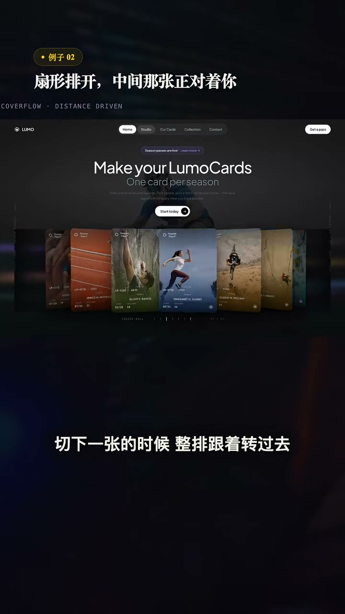
02 扇形排列（封面流）展示页效果
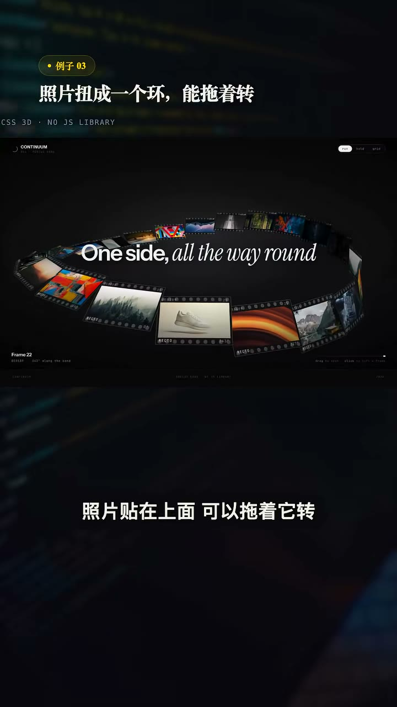
03 照片扭成可拖转的环（CSS 3D、无 JS 库）
选择更轻的实现 根据内容提炼
转化版提示词
告诉 AI 效果和限制，让它自己选够用又最轻的实现方案
复制
Codex 做高级审美网页的实用技巧 西瓜同学🍉 图文 2026-10-09 10 张图
查看原图文 ↗ 写给 Codex 的版式提示词应“说版面，不说形容词”：明确图片如何摆、文字如何排、颜色只给谁。八种排法包括左黑白右彩色、环形胶片、卡片整块上色、大色块压大字、全黑留一亮、白底点一色、照片压大字和中间大两边小。
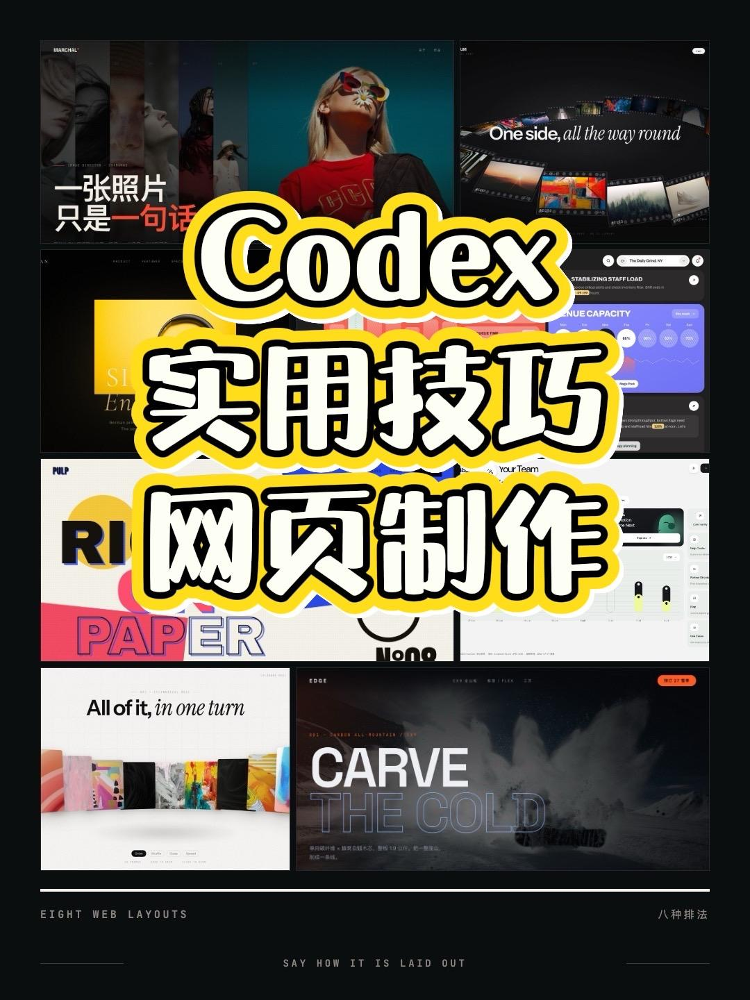
01 图文封面，“Codex 实用技巧 网页制作”
配图 01 配图说明
图文封面，“Codex 实用技巧 网页制作”
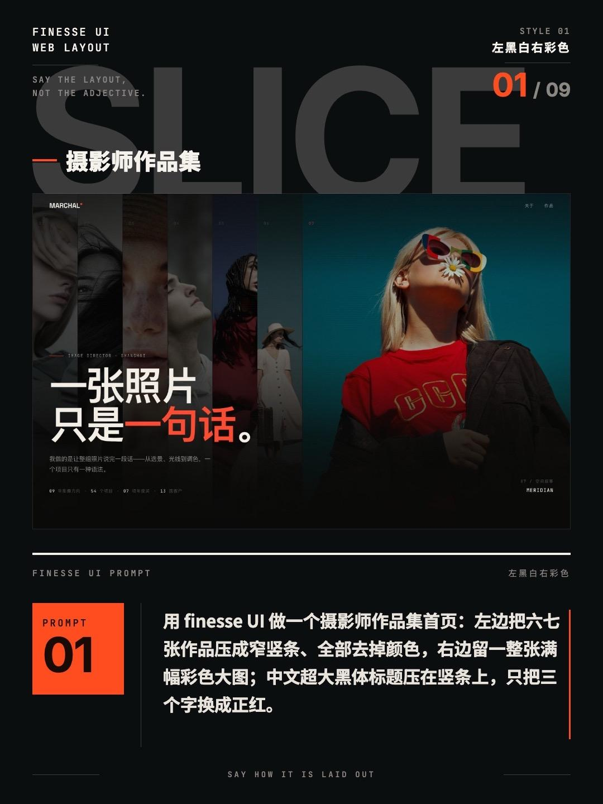
02 “左黑白右彩色”摄影师作品集页，附 finesse UI 提示词
主角独占颜色 根据内容提炼
转化版提示词
主角独占一种颜色，配角全部去色，整页最多两种用色
复制 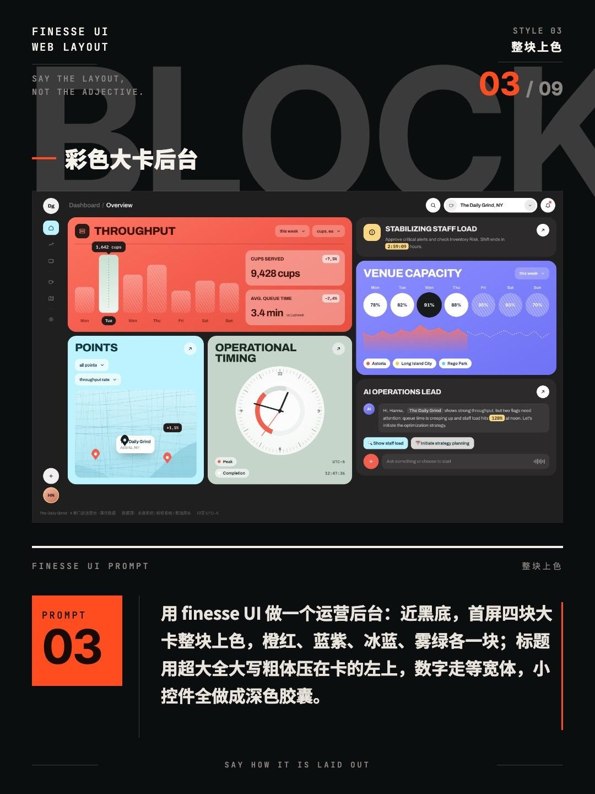
03 “卡片整块上色”运营后台页，附 finesse UI 提示词
配图 03 配图说明
“卡片整块上色”运营后台页，附 finesse UI 提示词
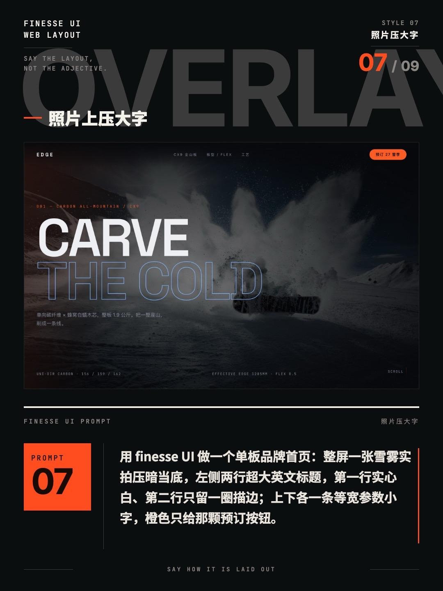
04 “照片上压大字”单板品牌页，附 finesse UI 提示词
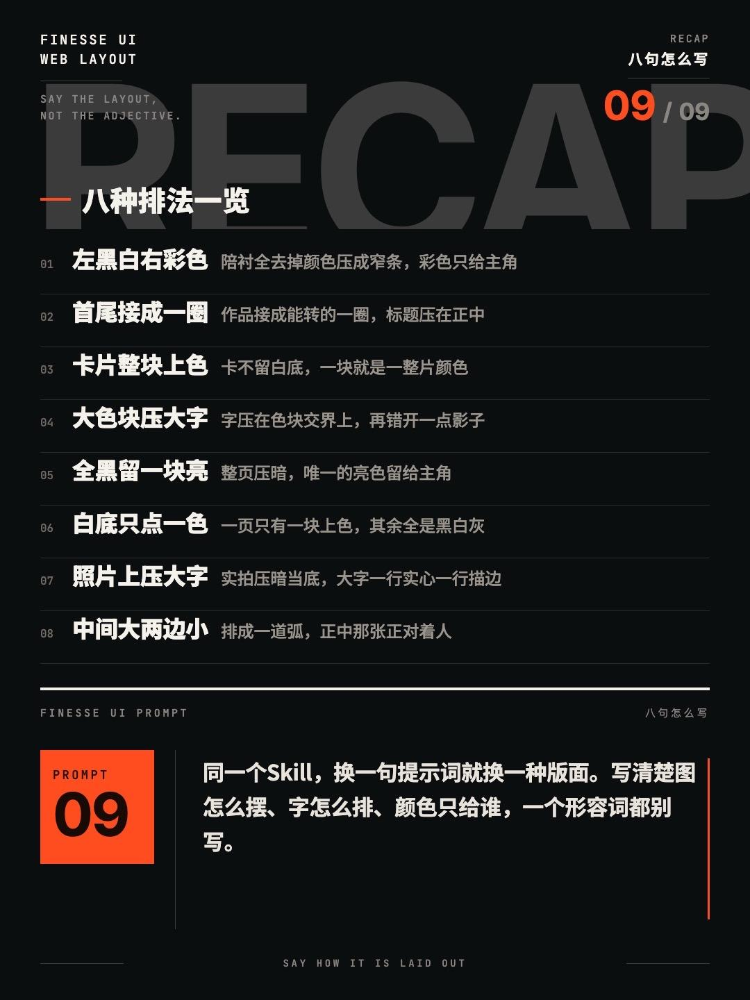
05 八种排法一览，总提示词截图
只说版面，不说形容词 根据内容提炼
转化版提示词
写提示词只说版面不说形容词：图怎么摆、字怎么排、颜色给谁
复制
10个App和小程序里的高级交互一次学会 西瓜同学🍉 2026-10-09 约 124.4 秒
查看原视频 ↗ 十种交互把反馈放回手指附近：封面飞到中央翻面，危险操作按住蓄力，旋钮逐格吸附，对比滑块跟手切换，快捷菜单沿弧线展开，滑动确认设阈值，长按浮起预览，拖拽目标张开吸入，分段进度与场景轮播连续变化。
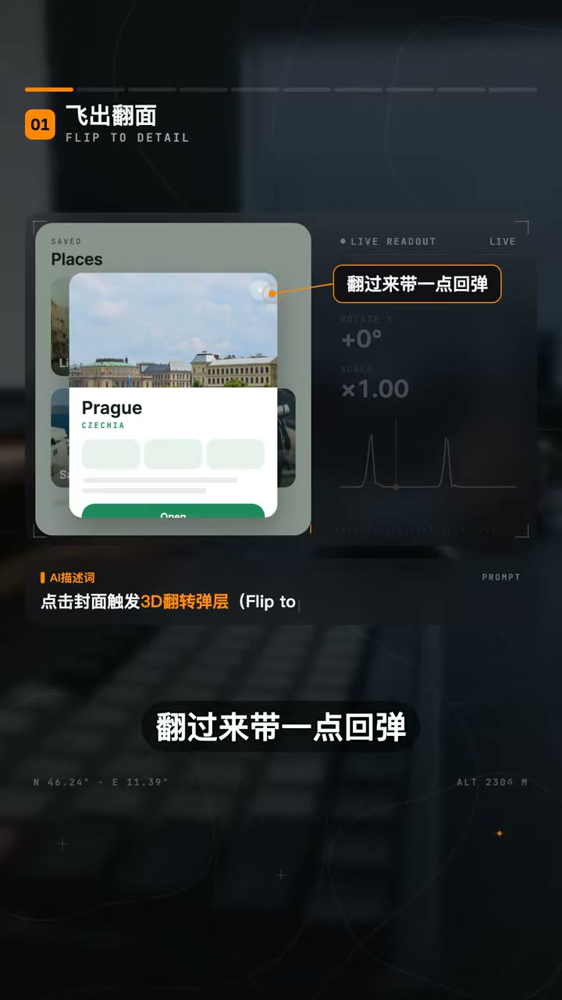
01 封面点击后翻面放大的交互演示（FLIP TO DETAIL）
飞出翻面 根据内容提炼
转化版提示词
卡片点击后一边飞到屏幕中央一边翻面，翻完带回弹，关闭原路返回
复制 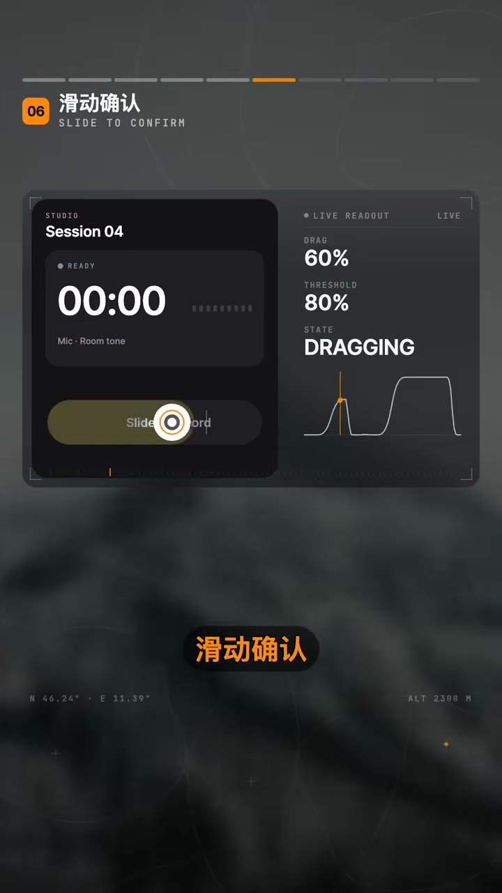
02 滑动确认交互演示，滑块跟手走带进度阈值
滑动确认 根据内容提炼
转化版提示词
滑块未拖到八成阈值自动弹回起点；滑块跟手走，文字上扫过一道高光
复制 配图 03 配图说明
景随图换的横向 3D 轮播，当前项居中放大、背景同步过渡
按住蓄力确认 根据内容提炼
转化版提示词
删除等不可逆操作：按住蓄力，进度沿边缘走满才执行，中途松手退回
复制 弧形快捷菜单 根据内容提炼
转化版提示词
按住浮标出现圆弧快捷菜单，滑到哪项放大哪项，松手即执行
复制
5个App和小程序的高级交互设计动效 西瓜同学🍉 2026-10-09 约 148.2 秒
查看原视频 ↗ 五种动效分别强化材质、氛围与空间：液态玻璃栏对背景做模糊折射，封面主色溢出为环境光，三层内容按景深差速滚动，列表依据中心距离卷成圆柱，拖拽浮标与原位之间拉出可断开的液滴桥。
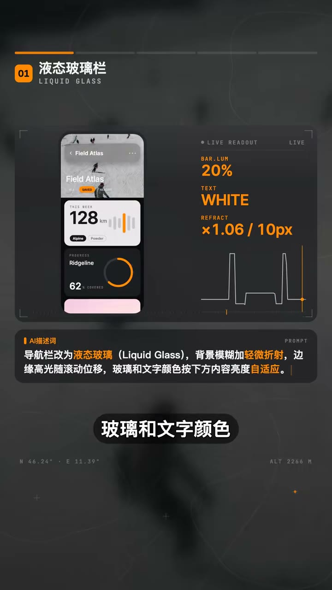
01 液态玻璃导航栏演示（LIQUID GLASS），内容透上来被放大折射
液态玻璃导航栏 根据内容提炼
转化版提示词
导航栏改为液态玻璃：背景模糊加轻微折射，高光边缘随滚动走
复制 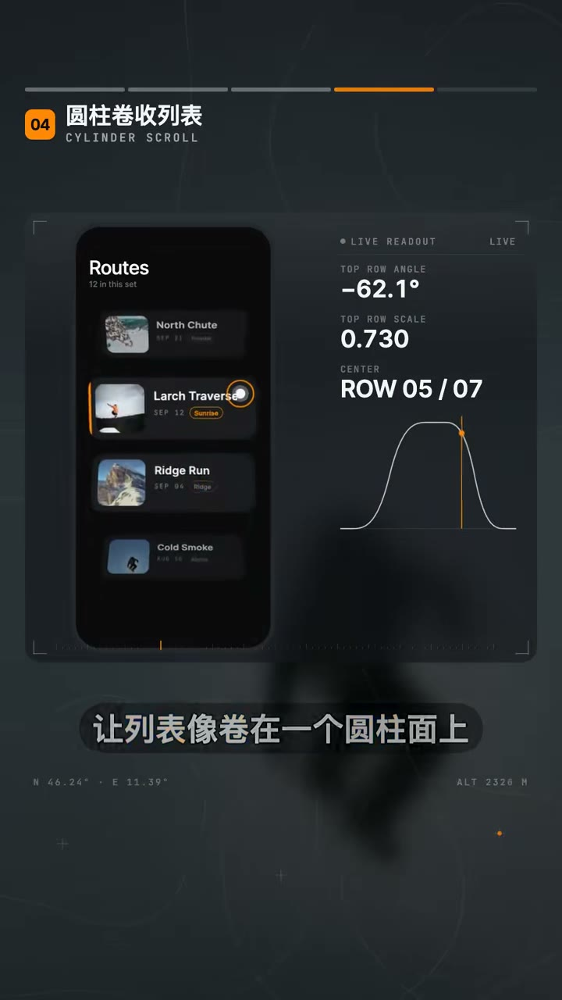
02 圆柱卷收列表演示（CYLINDER SCROLL），中间行最大最亮
圆柱卷收列表 根据内容提炼
转化版提示词
列表按离中心的距离做圆柱形变，边缘项缩小变暗躺平淡出
复制 配图 03 配图说明
液滴粘连拖拽演示（METABALL DRAG），浮标与原位间拉出液滴桥
封面取色氛围光 根据内容提炼
转化版提示词
提取封面主色做环境光晕，换图时色值连续插值过渡，不跳色
复制 景深分层滚动 根据内容提炼
转化版提示词
内容分三层做景深滚动，层级越深滚动越慢、模糊半径越大
复制
6个高级Dashboard侧边栏设计，一次教会你 西瓜同学🍉 2026-10-09 约 161.0 秒
查看原视频 ↗ 侧边栏往往决定后台的第一印象：浮动面板用等距留白、圆角和轻阴影脱离屏幕边缘；深色重底把全页唯一的深色留给导航；玻璃侧栏让背景若隐若现；双层图标轨把模块与页面拆开；折叠式侧栏在悬停后再展开文字。分组留白和固定底部信息，则让长列表仍有清晰收口。
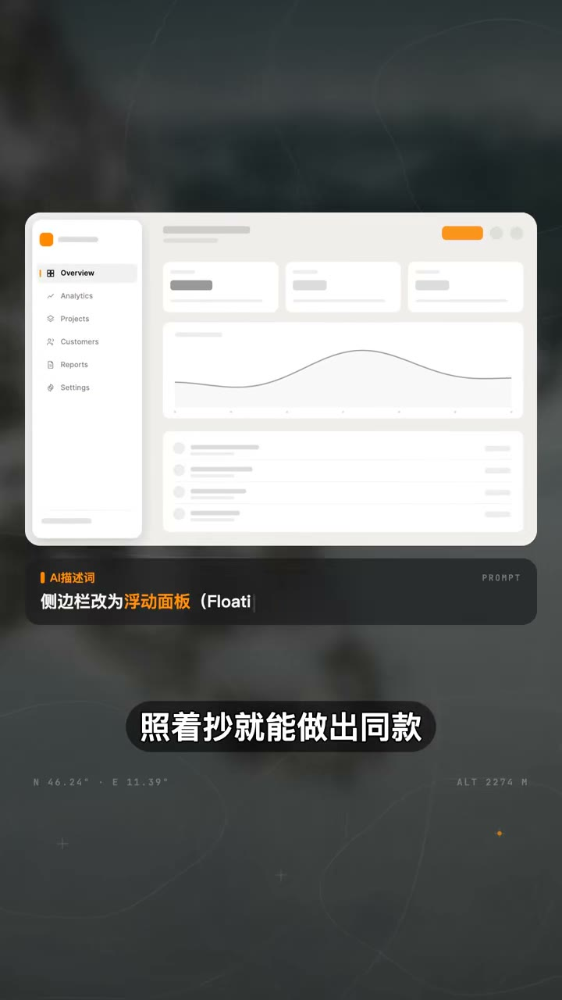
01 悬浮浮动侧边栏演示（Floating Panel），脱离边缘、四周留白
悬浮浮动侧边栏 根据视频提炼
转化版提示词
侧边栏改为浮动面板：四边留白等距、大圆角、配低透明度柔和阴影
复制 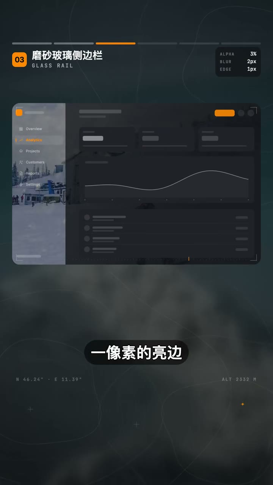
02 磨砂玻璃侧边栏演示（Glass Rail），背景虚化透图加亮边
磨砂玻璃侧边栏 根据视频提炼
转化版提示词
侧边栏用毛玻璃：半透明底、背景模糊、边缘加一像素亮边
复制 折叠展开式侧边栏 配图说明
折叠展开式侧边栏演示（Hover Expand），悬停展开、文字延迟淡入
深色重底侧边栏 根据视频提炼
转化版提示词
整页唯一深色给侧边栏，常规项用低对比浅灰字，只有当前项高亮
复制 双层图标轨 根据视频提炼
转化版提示词
双层导航：左侧窄图标轨切换模块，右侧面板展示二级页面
复制
AI编程设计：8个动效设计让App和小程序交互质感拉满 西瓜同学🍉 2026-10-09 约 182.0 秒
查看原视频 ↗ 静态页面之外，质感来自物理反馈：卡片随触点倾斜并流转高光，胶囊流体延展成面板，共享元素原地展开，图表游标磁吸数据点，抽屉带阻尼与锚点，列表交错弹入。按钮按下微缩、加深内阴影，松手再轻微超调回弹，让操作被真实地接住。
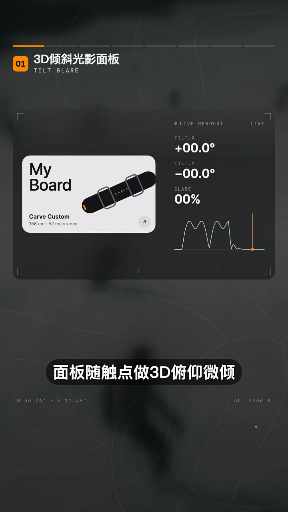
01 3D 倾斜光影面板演示（TILT GLARE），面板随触点俯仰微倾
3D倾斜光影面板 根据视频提炼
转化版提示词
卡片随触点做3D俯仰微倾，镜面高光跟随手指流转，松手弹簧回正
复制 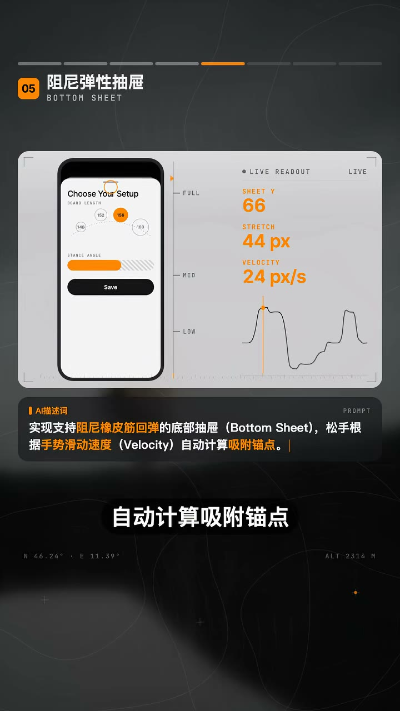
02 阻尼弹性抽屉演示（BOTTOM SHEET），松手按速度自动吸附锚点
阻尼弹性抽屉 根据视频提炼
转化版提示词
底部抽屉带橡皮筋回弹，松手按滑动速度自动吸附到对应高度
复制 弹性微缩反馈 根据视频提炼
弹性微缩触觉反馈演示（PRESS SCALE），按压缩放 0.96 配内阴影
转化版提示词
按钮按压微缩至0.96加内阴影，释放时轻微超调回弹
复制 流体胶囊形变 根据视频提炼
转化版提示词
胶囊按钮像水滴一样流动延展成弹窗面板，尺寸圆角高阻尼过渡
复制
AI设计工作流：2个Skills让AI做出高级审美UI 西瓜同学🍉 2026-10-09 约 166.6 秒
查看原视频 ↗ 这套工作流先让术语 Skill 把模糊感受翻译成专业设计语言，再让设计规范 Skill 把术语细化为参数级规则。小程序重点处理信息层级与占位加载，App 把主操作下沉到拇指安全区，后台则明确字阶、间距、表格与空状态。决定产出上限的是输入规则的精准度。
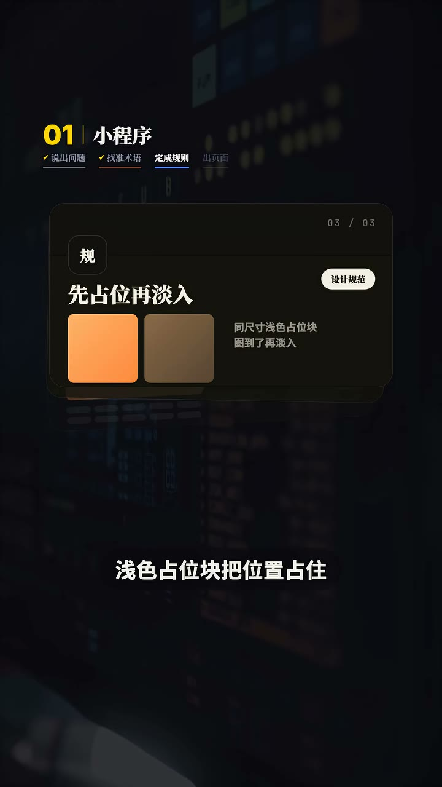
01 小程序场景规范卡片——先占位再淡入（规 / 设计规范）
图片先占位再淡入 根据视频提炼
转化版提示词
页面图片先占位再弹入：加载前用同尺寸浅色块占住，图到了再淡入
复制 主操作下沉 根据视频提炼
转化版提示词
主按钮下沉到底部拇指区，48pt 高全圆角胶囊，底部栏毛玻璃背景
复制 建立后台字阶 配图说明
Web 后台场景规范卡片——建立四级字阶 24
先翻译，再参数化 根据视频提炼
转化版提示词
先把我的大白话痛点翻译成专业设计术语，再细化为参数级规则
复制 引导式空状态 根据视频提炼
转化版提示词
空数据页不要只写暂无数据，换成插画引导式空状态加创建按钮
复制
8种App和小程序的高级提示动效，让细节更有质感 西瓜同学🍉 2026-10-09 约 91.9 秒
查看原视频 ↗ Toast、红点、角标和横幅不该抢戏，但必须有来路和去向：提示从触发点展开，Toast 平滑进退并为下一条让位，撤销条把剩余时间画成进度，角标数字翻滚并为进位撑宽。未读分割线保持原位，等用户滚过后再淡出，避免内容在眼前跳动。
01 撤销条演示（UNDO），倒计时做成可见的进度动画
02 角标滚动演示（BADGE），数字带位移翻转、宽度先撑开
角标滚动进位 根据视频提炼
转化版提示词
角标数字变化带位移翻滚，进位时宽度先撑开再翻转
复制 未读分割线原地淡出 根据视频提炼
未读分割线演示（UNREAD），停在原地、滚过去才淡掉
转化版提示词
提示从红点长出来 根据视频提炼
转化版提示词
红点点击后提示从红点位置展开，不要凭空跳出新层级
复制
我用豆包Agent远程改完App UI 西瓜同学🍉 2026-10-09 约 118.3 秒
查看原视频 ↗ 视频实测用豆包办公智能体从手机遥控办公室电脑改 App UI：电脑端先开启手机遥控并避免休眠，手机登录同账号后选择在线设备，在同一任务里发需求、看执行过程并继续追加修改。有固定规范时先挂 Skill；批量生成页面则可换云电脑模式持续运行。
出门前开启手机遥控 根据视频提炼
手机遥控电脑的电脑端设置页（出门也能操作电脑）
转化版提示词
出门前电脑开手机遥控，离线时手机发需求让AI继续改UI
复制 02 手机端直接发需求（把首页卡片间距调大），电脑端同步执行
手机发需求，电脑同步执行 配图说明
手机端直接发需求（把首页卡片间距调大），电脑端同步执行
03 云电脑模式介绍（项目在云端、任务持续跑、不占本机）
批量页面交给云电脑 根据视频提炼
转化版提示词
批量生成页面交给云电脑模式跑，手机只负责看进度补指令
复制 在原任务追加修改 根据视频提炼
转化版提示词
改完UI不满意不用重开任务，在原任务里追加一句需求继续改
复制 先挂统一规范 根据视频提炼
转化版提示词
发任务前先挂UI规范Skill，让AI每次都按同一套规则输出
复制
告别廉价模板！让AI网页质感翻倍的5个高级灵感库 西瓜同学🍉 2026-10-09 约 85.4 秒
查看原视频 ↗ 五类参考各自解决一层问题：MotionSites 定落地页结构，SoReal Design（名称待核）补动态案例与审美拆解，React Bits 提供开源交互组件，Uiverse 替换粗糙的小组件，GSAP 重构视差滚动和平滑转场。不是让 AI 凭空发挥，而是按方向、审美、交互、细节、动效逐层给参考。
01 MotionSites 落地页结构参考卡片（顶部窄导航+整屏 Hero）
用案例先定结构 根据视频提炼
转化版提示词
照这个落地页版式写：顶部窄导航+整屏Hero+一行三栏卖点卡
复制 02 GSAP 动效引擎卡片（60fps、重构动效逻辑）
用GSAP重构动效 根据视频提炼
转化版提示词
视差滚动和平滑转场全部用GSAP重构，消除生硬卡顿
复制 五步参考闭环 配图说明
五步走闭环图（MotionSites→Showreel→React Bits→Uiverse→GSAP）
拆解动态案例 根据视频提炼
转化版提示词
截图这个动态案例，让AI拆解它的配色、留白、字体和节奏
复制 适配开源交互 根据视频提炼
转化版提示词
找一个相似的开源React交互组件，适配进我的页面并保持丝滑
复制
5种App和小程序高级交互，一次教会你 西瓜同学🍉 2026-10-09 约 104.4 秒
查看原视频 ↗ 五种细节覆盖反馈、文字、进场、层次与收尾：按钮高亮沿边缘循环，数字和状态文字参与变化，标题、内容、按钮错开进场，卡片通过大小和前后关系建立空间感。最容易漏掉的是结束方式——自然减速、回收或切换状态，不能让动效突然断掉。
01 按钮反馈演示（BUTTON FEEDBACK），高亮沿边缘跑一圈、加载持续循环
按钮反馈与状态对齐 根据视频提炼
转化版提示词
按钮点击后高亮沿边缘跑一圈，加载状态持续循环，与状态对齐
复制 02 元素进场演示（STAGGER ENTRY），标题内容按钮错开 7 帧依次进入
错开七帧进场 根据视频提炼
转化版提示词
页面元素错开时间差进场：标题先出、内容跟上、按钮最后
复制 自然减速收尾 根据视频提炼
动效怎么停演示（HOW IT STOPS），减速收尾 vs 突然硬切对比
转化版提示词
让文字参与交互 根据视频提炼
转化版提示词
数字变化做滚动切换，状态文字从下方自然替换进来
复制
8种高级App和小程序的卡片按钮交互，一次教会你 西瓜同学🍉 2026-10-09 约 169.8 秒
查看原视频 ↗ 八种交互都在回答“从哪来、变成什么、又去哪”：卡片从按钮长出再原路收回；提交按钮在原位完成加载与结果；筛选时离开、留下和新进的卡片走不同曲线；长按卡片浮起后，可在同一手势里执行、取消或落回。路径连续，用户才不用重新寻找目标。
一枚按钮三种状态 根据视频提炼
一枚按钮三种状态演示（COMMIT），结果长在按钮身上
转化版提示词
提交按钮不换页：先收成圆加载，再撑开成结果条，位置不动
复制 02 筛选三段曲线演示（FILTER），走的、留的、来的各走一条曲线
筛选走三条曲线 根据视频提炼
转化版提示词
列表筛选：筛掉的原地缩小淡出，留下的弹簧滑移，新进的从空位长出
复制 03 一次长按三种结局演示（PEEK），卡片浮起、同一手势三分叉
长按手势三种结局 根据视频提炼
转化版提示词
长按400毫秒卡片浮起，上拖执行、拖出取消，松手可改主意
复制 卡片回到触发点 根据视频提炼
转化版提示词
弹窗卡片从触发按钮的位置长出来，关闭时原路收回同一个点
复制
4种高级审美Dashboard，一个UI设计Skill教会你 西瓜同学🍉 2026-10-09 约 109.1 秒
查看原视频 ↗ 同一个 UI Skill 只换提示词，就能生成极简商务、清爽轻量、暗黑科技与高饱和撞色四种 Dashboard。关键不只是风格词，还要写清响应式布局、业务组件、信息层级和使用场景。撞色也不是堆颜色，而是只让一个颜色亮，其余收回黑白。
极简商务风 根据视频提炼
极简商务风 Dashboard（留白与间距、卡片层级）
转化版提示词
极简商务风：顶部导航+数据卡片+趋势图，靠留白和卡片层级出高级感
复制 02 高饱和撞色风 Dashboard（超大标题压住版面、荧光撞黑）
高饱和撞色风 根据视频提炼
转化版提示词
撞色风：超大标题压版面，只让一个颜色亮，其余收成黑白
复制 03 四种风格合集（一套 Skill 只换提示词即可重复调用）
一套Skill四种风格 配图说明
四种风格合集（一套 Skill 只换提示词即可重复调用）
先说清业务约束 根据视频提炼
转化版提示词
做企业数据后台Dashboard：说清需要哪些数据、图表、布局，不只给风格词
复制 暗黑科技风 根据视频提炼
转化版提示词
暗黑科技风：暗色底+高亮数据+动态网格，适合监控分析类后台
复制
五种App和小程序里的高级审美布局，一次教会你 西瓜同学🍉 2026-10-09 约 146.7 秒
查看原视频 ↗ 布局高级感来自比例与层次，而非装饰：卡片通过位置、宽度和对齐线的差异形成节奏；主图占住半屏，其他信息后退；七三开的非对称比例比五五开更有张力；遮挡与明度差建立纵深；留白则靠删除，让空白成为页面最大的一块。
01 卡片错位排法的前后对比，标注对齐轴从 1 条变 3 条
有规律的卡片错位 根据视频提炼
转化版提示词
用卡片错位重排页面：位置错开、宽度差异、标题另起对齐线
复制 让大图成为主角 配图说明
大图主导排法，主图占 52%、最大最小元素差 7.1 倍
03 留白排法，页面从 14 个元素删到 5 个、留白率 18%
删出更大留白 配图说明
留白排法，页面从 14 个元素删到 5 个、留白率 18%
检查对齐轴 根据视频提炼
转化版提示词
评价页面布局：数出对齐轴数量、对齐轴多于3条就指出层次问题
复制 改成七三开 根据视频提炼
转化版提示词
把当前页面的信息区改成七三开非对称布局，弱化一半的次要信息
复制 只用遮挡做纵深 根据视频提炼
转化版提示词
让图片压住卡片、卡片压住标签，仅靠遮挡和明度差做出三层纵深
复制
10个App和小程序高级交互设计，让你的App更有细节 西瓜同学🍉 2026-10-09 约 120.2 秒
查看原视频 ↗ 高级交互不靠堆动画，而靠跟随、阈值与吸附：元素全程响应手指，松手后再按规则落位。滚轮要先衰减惯性再吸附；半屏抽屉要同时判断位移和甩速；抛物线可拆成横向匀速与纵向缓出；拖拽排序只改数组序号。大标题折叠、图片展开、手写平滑、粘连与页面转场，也都要让多个变化共用同一进度或锚点。
惯性后再吸附 根据视频提炼
滚轮选择器的惯性衰减与吸附到格原理图解
转化版提示词
给这个滚轮选择器加惯性：松手后速度逐帧衰减，快停住再吸附到格
复制 双层合成抛物线 根据视频提炼
转化版提示词
把这个飞入动效拆两层：横向匀速、纵向缓出，合成抛物线
复制 横滑卡片全程跟手 根据视频提炼
转化版提示词
横滑卡片加手指跟随：拖动全程跟手，松手按阈值吸附落位
复制 位移与甩速双阈值 根据视频提炼
转化版提示词
半屏抽屉支持手势关闭：松手时位移或甩速满足任一阈值就关
复制 先钉住再展开 根据视频提炼
转化版提示词
小图放大时先把大图钉在小图位置，下一帧再放开再做展开动画
复制
6种高级审美Web交互设计动效，一次教会你 西瓜同学🍉 2026-10-09 约 172.8 秒
查看原视频 ↗ 同一批图片可以被重新组织成反向图带、扇形牌阵、圆柱卡带、环形画廊、莫比乌斯扭环与纵深隧道，再由滚动、拖动、悬停或点击驱动。关键不是单个动画，而是空间排布、输入方式与形态切换一起设计；六种效果里有五种都先把内容收拢成一个形状，再让它展开。
01 反向图带效果讲解：“一个个拆开、手把手教你实现”
反向图带 根据视频提炼
转化版提示词
做两行反向滚动的图带，速度差拉开前后层次，中间加一组悬停张开
复制 环形画廊 根据视频提炼
转化版提示词
图片做环形画廊：开场从深处飞入成环，下滚摊成双行反向归档墙
复制 纵深隧道 根据视频提炼
纵深隧道效果，图沿视线排开、滚动变成往前走
转化版提示词
圆柱卡带 根据视频提炼
转化版提示词
把这批图片排成圆柱卡带：镜头在桶内，拖动旋转，拖速同步扰动标题字距
复制 扇形牌阵 根据视频提炼
转化版提示词
图片集收拢成扇形牌阵：每张差几度、边缘露出，点击翻面看文字
复制
10种App和小程序的高级弹窗交互，一次教会你 西瓜同学🍉 2026-10-09 约 109.1 秒
查看原视频 ↗ 弹窗的质感来自整条链路：底部抽屉要从手指方向出现；全屏展开时圆角、抓手与位置一起变化；背景页要模糊、缩小并后退；拖拽关闭同时看位移和速度；嵌套抽屉让前一层后退变暗。抽屉到页面、按钮到成功态，也应连续变形成同一件事，而不是关掉后另开一层。
从手指方向出现 根据视频提炼
底部抽屉从手指来的方向长出来，而非从中间放大
转化版提示词
底部抽屉从手指方向升起出现，禁止从屏幕中央缩放弹出
复制 慢拖弹回，一甩即关 根据视频提炼
转化版提示词
拖拽关闭手势：松手看位移加速度，慢拖弹回、一甩即关
复制 嵌套层级后退 根据视频提炼
转化版提示词
嵌套弹窗时第一层后退缩小变暗，让用户感知新增了一层
复制 让背景真正后退 根据视频提炼
转化版提示词
弹窗出现时背景页加模糊、缩小0.96，制造退到后面的纵深感
复制
一套UI Skill工作流，让AI做出更懂设计的高审美页面 西瓜同学🍉 2026-10-09 约 98.5 秒
查看原视频 ↗ 工作流由术语库、模板墙与设计规范三部分组成：术语库把大白话翻成准确需求并给出反例；模板墙按形态和风格浏览真实页面，可现场调整配色与字号；选定后复制规格，让 Agent 按对应设计规范生成。落地页、后台、商品页与 App/小程序走不同路线，核心是“说准、选样、生成”。
把大白话翻准 根据视频提炼
术语库、模板墙、设计规范三部分说明
转化版提示词
把这句大白话需求翻成准确的设计术语，并画出做错的反例
复制 02 第三步“生成”，四条路线走四套完全不同的设计语言
在真页面里选样 根据视频提炼
转化版提示词
从模板墙按形态和风格挑一版，配色字号换成真页面效果
复制 按规格完整生成 根据视频提炼
转化版提示词
需求和视觉规格已齐，直接生成完整页面，保持风格一致不改样
复制
8种高级审美Dashboard，一次教会你 西瓜同学🍉 2026-10-09 约 295.6 秒
查看原视频 ↗ 同样的数据与组件，可以走大色块分区、图片卡片流、玻璃拟态、高密度卡片墙、银灰极简、杂志排版、深色压顶或暗色控制台。动手前先问：重色落在哪、首屏给了谁、剪掉了什么。颜色比例、导航位置、图表形状和描边层次各有边界；重点不是混搭，而是每套语言只保留自己的主次。
先做三问评审 根据视频提炼
转化版提示词
按三问评审这个Dashboard：重色落在哪、首屏给了谁、剪掉了什么
复制 02 高密度卡片墙，同一张卡复制四遍只有第一行不一样
大色块只管一段 根据视频提炼
转化版提示词
用大色块分区：每块颜色只管一段内容，颜色总数不超过四块
复制 暗色后台只留一支彩色 根据视频提炼
深色压顶，一块深色占三成七、视线只走一趟
转化版提示词
暗色后台只留一支彩色给可点击处，其余层次靠三档描边拉开
复制 让密度服从秩序 根据视频提炼
转化版提示词
高密度卡片墙：导航挪到顶部，状态色另起一套不跟主色抢
复制
一套AI工作流，把产品素材变成有质感的视频 西瓜同学🍉 2026-10-09 约 147.1 秒
查看原视频 ↗ 视频用 Traywork 演示一条从素材到成片的工作流：Work Mode 先拆用户痛点、卖点和视频主线，再把每段画面、字幕、素材秒数与界面特写写成分镜；Design Mode 确定风格、展示密度与视觉重点；Code Mode 最后把分镜整理成 Remotion 可执行的视频结构。情绪日记 App 只是例子，这套拆法也可用于电商、SaaS 或课程产品。
先定产品主线 根据视频提炼
情绪日记 App 演示界面，三台手机展示产品画面
转化版提示词
先拆用户痛点和适合画面表达的卖点，再定视频主线
复制 02 Traywork 的三个模式：Work、Design、Code
把脚本写到秒 根据视频提炼
转化版提示词
把脚本细化到分镜：每段画面、字幕、素材秒数、界面特写
复制 03 Design Mode 定视觉，情绪标签、日历、趋势图成为重点
明确视觉重点 根据视频提炼
转化版提示词
定视觉方向：给出风格关键词、展示密度、必须突出的视觉重点
复制 整理成可执行结构 根据视频提炼
转化版提示词
把脚本分镜整理成可执行视频结构：镜头顺序、字幕时间、转场安排
复制
APP从想法到实现，我用这套AI工作流 西瓜同学🍉 2026-10-09 约 118.6 秒
查看原视频 ↗ 流程分三步：先拆产品逻辑与 UI 方向，再生成可编辑、有规范、能复用的设计稿，最后由 Codex 通过 MCP 读取设计稿并继续完成页面、交互与功能。重点不是得到一张 UI 图片，而是让颜色变量、字体层级、卡片样式和组件状态能够持续修改、复用与协作。视频转写中的工具名“PM Scale”和“Pixel”尚待核实。
01 三台 AI 旅行 App 手机界面：“有规范、能复用的设计稿”
先拆产品逻辑 工具名称待核
转化版提示词
先用PM Scale把产品逻辑拆成目标用户、核心场景、页面结构加设计规范
复制 要可编辑设计稿 根据视频提炼
“我不要一张 UI 图片”：要的是可编辑设计稿
转化版提示词
不要一张UI图片，要一套可编辑的设计稿：图层文字卡片都要能改
复制 先统一再出图 根据视频提炼
转化版提示词
整套页面统一：先定颜色变量、字体层级、卡片样式和组件再出图
复制 读取设计稿继续开发 根据视频提炼
转化版提示词
通过MCP读取设计稿信息，接着完成页面交互和功能开发
复制
12种App和小程序的高级交互，一次教会你 西瓜同学🍉 2026-10-09 约 93.3 秒
查看原视频 ↗ 高级感不是堆特效，而是让每次操作都有恰到好处的反馈：按压回弹要有重量，开关落位前先拉长，水波从触点扩散，成功勾选一笔一笔画出，液态滑块的轨道、滑钮和数值同频。数字滚动要缓停，骨架高度要匹配真实内容，卡片翻面要藏好背面，页面转场则让旧页同步回应。
让开关有质量感 根据视频提炼
转化版提示词
给这个开关加弹性：滑块先横向拉长，落位再压回原宽
复制 数字缓停 根据视频提炼
转化版提示词
数字变化用缓停：慢慢减速停住，禁止滚到一半突然杀住
复制 让成功有过程 根据视频提炼
12 种交互总览：“高级感不是堆特效”
转化版提示词
成功态不要直接出现：一笔一笔划出来，让成功有个过程
复制 旧页也要回应 根据视频提炼
转化版提示词
页面转场时旧页同步后退变暗，别让新页看起来像贴纸
复制
5种高级质感网页，一次讲透 西瓜同学🍉 2026-10-09 约 65.7 秒
查看原视频 ↗ 同一批图和字，换一套具体方法就能成为五种不同网页：编辑分栏型用大段留白切开标题与图墙；叠影显影型在同一位置叠两张图并用光圈揭示；竖切分栏型只让当前栏张开回彩；暗底流光型把整条渐变只留给标题；纵深长廊型用透视和滚速把作品排成一条路。
编辑分栏型 根据视频提炼
编辑分栏型，左栏 600、中缝 452、右栏 460
转化版提示词
标题和图别上下堆：左栏600、中缝450留白、右图墙460
复制 叠影显影型 根据视频提炼
转化版提示词
两张图同位置叠放，底下压暗，鼠标光圈范围亮出另一张
复制 03 纵深长廊型，作品摆成一条路、滚越快两边越远越暗
纵深长廊型 根据视频提炼
转化版提示词
作品摆成纵深长廊：透视1500，滚越快两边越远越暗
复制 竖切分栏型 根据视频提炼
转化版提示词
整屏切竖栏，悬停哪条哪条张开并回彩，其余压暗降饱和
复制
5种高级审美移动端网页，一次学会 西瓜同学🍉 2026-10-09 约 64.1 秒
查看原视频 ↗ 移动端页面可以走图片主导、卡片节奏、大字留白、沉浸氛围或极简编辑五种方向：一张大图卡占住半屏，卡片宽窄交替，一屏只讲一件事，背景图经模糊与透明处理托起前景，或只保留一个重点色。差别不在素材数量，而在主次、节奏与留白。
图片主导型 根据视频提炼
转化版提示词
手机首屏只放一张大图卡占半屏，其余元素往两边收
复制 卡片节奏型 根据视频提炼
大字留白型，超大标题加大面积留白、一屏只讲一件事
转化版提示词
卡片宽窄交替：大图卡片加一排小标签再接列表，划出节奏感
复制 03 极简编辑型，只留一个重点色、靠字号间距和细线出质感
极简编辑型 根据视频提炼
转化版提示词
整页只留一个重点色，靠字号间距和一根细线出质感
复制
5种高级审美Dashboard，一次教会你 西瓜同学🍉 2026-10-09 约 58.1 秒
查看原视频 ↗ AI 默认生成的后台容易有模板感，问题往往不在数据，而在排版和视觉语言。视频拆出五种方向：暖调留白型只留一个强调色；强对比型用超大主卡和高饱和撞色；极简数据型减少颜色并重做图表形态；氛围沉浸型打破网格加入雾面与玻璃质感；图卡内容型让真实图片成为主角。
图卡内容型 根据视频提炼
第五种图卡内容型，真实图片当主角的后台
转化版提示词
从HTML到Vibe Coding，网页是怎么进化的？ 西瓜同学🍉 2026-10-09 约 386.0 秒
查看原视频 ↗ AI 能一句话写网页，是因为它在调用几十年积累的 Web 技术体系：HTML 管结构、CSS 管样式、JavaScript 管行为，服务器与 AJAX 让内容动态更新，Node.js、TypeScript 与 React/Vue 又带来工程化、类型与组件化。拿到 AI 生成的 HTML 后，仍要按用途判断：展示页可直接部署，已有项目要拆组件接状态和路由，完整产品还需要 API、数据库与用户系统。
先判断页面用途 根据视频提炼
视频开场，主题是 AI 为什么能一句话写网页
转化版提示词
展示页直接用 AI 生成的 HTML/CSS/JS 部署上线
复制 02 1990 年 HTML 时期，网页能显示但实在太丑
页面之外还有系统 根据视频提炼
转化版提示词
做完整产品：页面之外还要 API、数据库、用户系统
复制
零基础教程：一个Skill做出高级审美个人网站 西瓜同学🍉 2026-10-09 约 70.5 秒
查看原视频 ↗ 个人作品网站分三步：先备好个人介绍、项目经历、作品截图和目标风格；再把资料放进同一文件夹，让 Skill 读取并生成个人介绍、项目案例与作品展示；最后继续调整主题、颜色、文案和项目顺序。Skill 会按职业方向调整重点：设计师突出视觉，开发突出功能与技术栈，运营或自媒体突出成果与数据。
先备齐四样资料 根据视频提炼
视频开场，一个 Skill 生成的个人站拼图
转化版提示词
02 第一步备资料，个人介绍项目经历作品截图风格四件套
统一交给 Agent 读取 根据视频提炼
转化版提示词
资料统一放进一个文件夹，让 Agent 自己读再生成
复制 03 Skill 自动长出一整页，介绍案例展示三块一次到位
一个Skill，让AI复刻高级网站并读懂设计语言 西瓜同学🍉 2026-10-09 约 161.2 秒
查看原视频 ↗ 复刻高级网站不是复制代码，而是先拆出设计规则。视频把参考页分成版面、字体、颜色、动效与留白五层，形成一份可读的说明书，再让 AI 按这套语言为新产品重做页面。同一套规则分别跑作品集、工具站与品牌页，配色比例与动效尺度一致，但每一页都重新适配了内容。
先拆五层设计语言 根据视频提炼
讲究的参考网站，往下滚能看出讲究但说不清
转化版提示词
截图先拆成版面字体颜色动效留白五层再喂给 AI
复制
WorkBuddy推荐：5个Skill，打造Agent工作流 西瓜同学🍉 2026-10-09 约 138.5 秒
查看原视频 ↗ 五个 Skill 被分成“先说清楚”和“再把结果做好”两组：工程 Skill 追问用户、问题与限制；资料整理 Skill（视频中的名称转写待核）压缩网页、视频、播客与 PDF；prompt-optimizer 优化第一句话；展示方向 Skill（名称转写待核）先给不同方向供选择；UI 前置 Skill 则先判断受众、设备、场景与投入程度，再把任务交给后续 UI Skill。
追问到任务清晰 根据视频提炼
视频封面，5 个 Skill 分前三后二解决关键问题
转化版提示词
执行前先让 AI 追问目标用户、问题和限制再开工
复制 02 prompt-optimizer，把帮我做个页面优化成清晰任务
先压缩资料再输入 根据视频提炼
转化版提示词
喂资料前先整理成重点，40 分钟内容压缩到几十秒
复制 03 结尾观点，不是 AI 不够强而是工作方式要升级
教你用Codex和Obsidian，搭建永久记忆的AI知识库 西瓜同学🍉 2026-10-09 约 330.0 秒
查看原视频 ↗ 这套 AI 知识库由 Obsidian、两个 Skill 与一个 Agent 组成，分为原始资料、知识网络和规则文件三层。资料先落进本地文件夹，AI 再关联为可见的知识网络；根目录规则文件约定资料归档位置、笔记字段、索引回写与长期目标。视频中的 Obsidian Skill 名称待核，相关能力按原视频整理。
先建立资料入口 根据视频提炼
知识网络可视化，踩过的坑和每次技术决策连成网
转化版提示词
用规则文件约定工作方式 根据视频提炼
转化版提示词
根目录写规则文件：放哪类、带什么字段、要不要回写
复制
零基础打造专属AI个人工作台，自带高级设计风格 西瓜同学🍉 2026-10-09 约 209.0 秒
查看原视频 ↗ 个人工作台的流程是先整理需求，再从模板墙挑一张与内容密度相符的真页面，最后复制规格让 AI 按需求生成。模板可直接调配色、强调色与字号。不满意时按成本从低到高处理：先整张换模板，再只换配色，最后才指向某一块局部修改。
先整理需求清单 根据视频提炼
转化版提示词
先说一句话要什么，再让 AI 把需求整理成清单
复制 按内容密度挑模板 根据视频提炼
模板点开可调配色、强调色和字号，点一下当场变
转化版提示词
我把整个网页工作流，都放进了千问办公 西瓜同学🍉 2026-10-09 约 110.5 秒
查看原视频 ↗ 视频把需求分析、设计规范、页面生成、迭代与上线交付放进千问办公：先分析客户需求并加入自己的网页设计规范，再按页面节奏、视觉层级、留白、响应式与风格统一逐条优化；复杂页面通过 V1、V2、V3 连续迭代。视频展示的模型名“千问 3.8”转写待核。
需求与规范一起输入 根据视频提炼
交付四件事，能修改能上线上线能访问能管数据
转化版提示词
先喂客户需求，再喂自己的设计规范，别只给一句话
复制 逐条对规范优化 根据视频提炼
转化版提示词
生成后按节奏、层级、留白、响应式逐条对规范优化
复制 03 工作流里的 AI Agent，需求设计生成到可交付网页
一版一版磨一致性 根据视频提炼
转化版提示词
同一页面出 V1 V2 V3，一版一版磨出设计一致性
复制
AI网页设计，一套Skill工作流做出高级审美Web 西瓜同学🍉 2026-10-09 约 510.5 秒
查看原视频 ↗ 这套工作流要求 AI 不要一上来写代码，而是先走三步：需求分析把用户、问题、页面、技术栈与明确不做的范围写成规范；前置 Skill 按落地页、控制台或移动端选择对应设计规则；代码理解则先建立组件关系，修改前说明影响面。每个 Skill 只负责一件事，让新增模块与后续改版保持一致。
先聊清楚再写规范 根据视频提炼
一句需求经过的三步，需求分析前置 Skill 生成页面
转化版提示词
先聊天聊清用户、问题、页面和技术栈再整理成规范
复制 明确这一版不做什么 根据视频提炼
转化版提示词
规范里写清这一版不做什么，防止 AI 自己加戏
复制 修改前先看影响面 根据视频提炼
转化版提示词
项目大了先让 AI 建组件关系图，改前先看影响面
复制
教你快速做出高级感AI个人工作台，零基础也能上手 西瓜同学🍉 2026-10-09 约 178.3 秒
查看原视频 ↗ 这套个人工作台流程由两个 Skill 接力：/finesse-brief 先把一句需求拆成每天记录什么、首页先看什么、空状态显示什么与长期使用哪些内容；/finesse-ui 再按这份文档生成完整页面。后续加疫苗记录、成长相册或饮水统计时，可以在原有结构上继续改，不必推倒重做。
先把需求问清楚 根据视频提炼
视频封面，手把手做一个专属 AI 工作台
转化版提示词
只说一句话要什么，先让 AI 把需求问清楚再动手
复制 02 Skill 接力流程，需求想清楚再交给 UI 做得好看
VibeCoding大赏｜一套UI工作流，让AI审美直接拉满 西瓜同学🍉 2026-10-09 约 329.6 秒
查看原视频 ↗ 把五个主流 UI Skill 合成一条统一工作流：ui-ux-pro-max 开局定方向，taste 负责落地页和视觉审美，interface-design 负责后台与产品一致性，impeccable 在完成后按规则检查，作者自己的 UI Skill 负责真正生成页面。它们不是同时上，而是由一个不生成像素的前置 Skill 先问两三个会改变路线的问题，再按“想清楚做什么—决定按谁的规则做—把它做出来”依次接手；判断错了，只需改条件重算路线。
按顺序接手 根据视频提炼
五个 Skill 不是同时上，而是按顺序接手
转化版提示词
多个 Skill 别一起上，按定方向、动手、验收顺序接手
复制 把边界写进规则 根据视频提炼
转化版提示词
每个 Skill 的不接清单写进规则，路线判断才有依据
复制 只问改变路线的问题 根据视频提炼
转化版提示词
只问会改变路线的问题，每个问题先给出猜测待确认
复制
VibeCoding大赏 | UI Skill把审美焊进网页 西瓜同学🍉 2026-10-09 约 12.1 秒
查看原视频 ↗ 视频疑似无中文口播，以下按画面与标题提炼。VAULT DOME 是一个暗色沉浸式作品站：照片沿球形穹顶环绕，叙事依次经历走进穹顶、照片收拢成球、回到球体内部仰望。深黑背景、英文衬线大标题与细字号说明保持克制，让空间纵深成为主角。
三幕空间叙事 根据视频提炼
走进穹顶一幕——“You’re standing inside it”大标题，照片环绕穹顶
转化版提示词
沉浸式作品站做三幕递进：进站、收拢成球、内部仰望
复制 02 照片收拢成球体——“It was a sphere”，暗色画面中央悬浮照片球
把照片收拢成球 根据视频提炼
转化版提示词
照片沿穹顶球面环绕排布，衬线大标题加细字号说明配深黑底
复制
VibeCoding大赏 | UI设计Skill作品展示 西瓜同学🍉 2026-10-09 约 12.8 秒
查看原视频 ↗ 视频疑似无口播，以下按画面与标题提炼。LONGUE 把画廊做成“无尽走廊”：三百二十张照片沿单轴向远方延伸，镜头自动漫游，底部音频波形强化氛围。点击单张照片时，以高亮框线和背景虚化完成聚焦，浏览动线仍保持连贯。
无尽走廊画廊 根据视频提炼
走廊入口一幕，“OUTSIDE / CORRIDOR HERO”大标题，照片沿走廊两侧延伸
转化版提示词
画廊网站做成无尽走廊：照片沿中轴排布，自动漫游推进
复制 02 “A corridor with no end”文案，照片向远方无限排布，底部波形条
单图聚焦不断流 根据视频提炼
转化版提示词
点击聚焦单图：高亮框线加背景虚化，动线保持连贯
复制
AI设计工作流：4个Skills让AI做出高级审美网页UI 西瓜同学🍉 2026-10-09 约 106.0 秒
查看原视频 ↗ 四个 Skill 各管一件事：grill-me 在动手前一次只问一个问题，并先给推荐答案；UI 设计 Skill 把配色、字体、布局、组件和动效写成统一规范；caveman 砍掉铺垫和总结，但保留代码与报错原样；diagnose 则先稳定复现、缩小场景、验证假设，最后修复并补回归测试。视频称 caveman 实测让输出减少 65%，该数字以原视频为准。
先问清楚再动手 根据视频提炼
开场标题卡——“装上这 4 个 Skill，AI 做 Web 和 UI 的审美提升一个档次”
转化版提示词
动手前先用 grill-me：只提问问清需求，一次一个，并先给推荐答案
复制 02 caveman 卡片——“砍掉客套，只留结论”，输出提效展示
砍掉客套保留结论 根据视频提炼
转化版提示词
输出太啰嗦就加 caveman：只留结论，砍掉铺垫和总结
复制 03 AI Web Workflow 四卡分工：需求、设计、提效、排查各管一件事
四项职责串成工作流 根据视频提炼
转化版提示词
修 bug 用 diagnose 流程：先稳定复现再最小化，最后才动手
复制 把设计规范写成 Skill 根据视频提炼
转化版提示词
把设计规范写成 UI Skill：配色字体组件动效成文，AI 自动遵循
复制
国产AI又放大招！Kimi K3开源了，2.8T参数刷新记录 西瓜同学🍉 2026-10-09 约 35.4 秒
查看原视频 ↗ 据原视频，Kimi K3 采用 2.8T 总参数、104B 激活参数的 MoE 架构，上下文为 1.04M token，规模化效率比 K2 提升 2.5 倍。视频称其同时开放模型权重、技术报告与三项基础设施：Moon EP、Flash KDA、Agent Env；相关名称已按画面信息卡校正，参数与性能判断均以原视频为准。
01 “开源了什么”卡——模型权重、技术报告、三项基础设施同步开源
不只看模型权重 根据视频提炼
转化版提示词
关注开源模型打包开源趋势：权重之外还要看技术报告和基建
复制 02 “规模有多大”卡——2.8T 总参数、104B 激活、1.04M 上下文、效率较 K2 提升 2.5 倍
看激活参数与上下文 根据视频提炼
转化版提示词
选模型看激活参数和上下文窗口，不只看总参数数字
复制 把问题留给应用 根据视频提炼
结尾互动卡——“你觉得 Kimi K3 能改变什么？”
转化版提示词
做 MoE 训练重点关注负载均衡方案，如 Moon EP 这类
复制
VibeCoding大赏 | 星沉入河 西瓜同学🍉 2026-10-09 约 20.1 秒
查看原视频 ↗ 视频疑似无口播，以下按画面与标题提炼。这支夜景动画只用路灯、落星与河面涟漪讲故事：深蓝夜空压住背景，暖黄灯光拉出倒影，星星从灯头簌簌落水。落星轨迹、涟漪扩散与倒影晃动同步推进，让极简构图产生诗意。
一个光源讲故事 根据视频提炼
转化版提示词
夜景动画用“一个光源加动态涟漪”讲故事，构图做减法
复制 用冷暖配色定情绪 根据视频提炼
更多星星沉入河面，涟漪层层扩散
转化版提示词
把设计规范做成UI Skill，新手也能让AI拥有高级审美 西瓜同学🍉 2026-10-09 约 194.8 秒
查看原视频 ↗ 把“什么算好设计”整理成可执行规则：品牌官网、后台系统、手机端 H5 分别使用不同标准，后台再区分数据页与配置页。Skill 还内置廉价感黑名单，并把风格拆成配色、字体、排版、动效和整体质感五个维度组合，降低页面重复。视频称这套规范可在 Codex、Cursor、Trae、CodeBuddy、Copilot 与 WorkBuddy 间迁移。
01 “说一句想要什么感觉，它就知道往哪做”，展示手机端成品页面
按页面类型分规范 根据视频提炼
转化版提示词
给 AI 写设计规范：按页面类型分套标准，不用同一套模板
复制 02 “换哪个工具都是这一套”，Codex、Cursor、Trae、WorkBuddy、Copilot、CodeBuddy 通用
跨工具携带同一套规则 根据视频提炼
转化版提示词
规范一次写好随身带：换工具直接整段粘贴照样生效
复制 把审美变成判断规则 根据视频提炼
结尾金句——“审美天赋→可整理的规则，页面是能抄走的，背后判断抄不走”
转化版提示词
建一份廉价感黑名单：俗配色、难用字体先列出来让 AI 躲开
复制 五个维度组合风格 根据视频提炼
转化版提示词
风格拆五维随机组合：配色字体排版动效质感各抽各的防重复
复制
VibeCoding大赏 | 高级网页，一个Skill就搞定 西瓜同学🍉 2026-10-09 约 19.6 秒
查看原视频 ↗ 视频疑似无口播，以下按画面与标题提炼。摄影师作品集 Mousheshi 以暗黑背景承托弧形照片阵列，卡片自动轮播；“Film Diarist”大标题与细说明文案建立层级。另一幕用巨型彩色“CREATIVE”与向上飞散的照片碎片制造视觉高潮，高级感主要来自空间排布与动效。
01 照片卡片弧形阵列自动轮播，图内署名为展示网站的示例内容
弧形阵列制造纵深 根据视频提炼
转化版提示词
作品集首页用弧形卡片阵列加自动轮播，营造纵深感
复制 标题与作品分层 根据视频提炼
“Mousheshi / Film Diarist”大标题作品集首页
转化版提示词
一屏只讲一件事：标题、副文案、作品陈列分层排布
复制 03 底部巨型“CREATIVE”彩字，照片碎片向上飞散
一个UI设计Skill，让Codex做高级审美视频宣传动效 西瓜同学🍉 2026-10-09 约 66.2 秒
查看原视频 ↗ 标题写 Codex，视频实际演示的是 WorkBuddy，并显示 Motion 已连接。这个视频动效 Skill 把一句风格词展开为镜头运动、转场、高光、节奏与氛围；换一个词，同一份作品集就能变成另一种编排。数据报表同样可以指定“科技感+节奏”，底层支持 Hyper Frames 和 Remotion。
一句风格词定整片 根据视频提炼
Motion 已连接，照片拼成旋转方块加“CREATIVE”大字开场
转化版提示词
做宣传视频先定一句风格词：风格、节奏、氛围让 AI 自动排
复制 换词就换整套编排 根据视频提炼
转化版提示词
数据报表动效：说清“科技感加节奏”，数字跳动、镜头推进交给 AI
复制 03 作品示例 04——“编辑设计”，不用会代码、不用一帧帧抠
5个AI Skill，让Codex拥有网页设计、创作开发能力 西瓜同学🍉 2026-10-09 约 200.4 秒
查看原视频 ↗ 五个 Skill 把 Codex 从写代码工具扩展为创作助手：Obsidian 笔记 Skill 连接想法与记忆，UI Skill 用反廉价黑名单与移动端底线约束页面，Humanizer Jazz 去掉翻译腔，grill-me 在开工前唱反调审方案，Karpathy 编码原则要求讲清假设、只做最小改动并自验。视频中的部分工具来源转写待核，相关表述不作扩展。
先禁掉默认廉价感 根据视频提炼
UI Skill 成果墙——“所以做出来是这样的”，多张页面成品拼贴
转化版提示词
Codex 装 UI Skill 前先定黑名单：紫蓝渐变、Emoji 图标先禁掉
复制 02 02 号 Skill 卡——产品后台用另一套设计语言，“后台不是给品牌页加几张图表”
后台用另一套设计语言 根据视频提炼
转化版提示词
每次做完记一笔风格：下次强制换方向，防页面长一样
复制 03 05 号编码原则卡——“只动该动的那 9 行，改完自己验一遍”
只动该动的代码 根据视频提炼
转化版提示词
动手前让 grill-me 审一轮方案：先唱反调再开工
复制 让中文稿更像人话 根据视频提炼
转化版提示词
中文稿过一遍 Humanizer Jazz：去翻译腔，改成像人说的话
复制
Git配合提升AI审美的UI Skill，让AI开发更稳 西瓜同学🍉 2026-10-09 约 141.5 秒
查看原视频 ↗ AI 改页面越改越乱、改坏还退不回去时，用 UI Skill 管审美、Git 管版本、Agent 负责执行。把 Git 当项目存档系统：新项目先建仓，每完成一个阶段就存一版；想换风格先存档，不满意随时恢复；老项目先留安全网，再重构或开分支试不同方案。命令不必死记，把常用清单交给 Agent 即可。
审美与版本双保险 根据视频提炼
设计规范 Skill + Git 版本管理，有了这套工作流，敢让 Agent 动真实项目
转化版提示词
让 Agent 动真实项目前先 git init：每阶段存一个版本当存档
复制 02 CORE 常用命令卡——git init 建立仓库，“第一次进入项目”
把命令清单交给 Agent 根据视频提炼
转化版提示词
把 Git 命令清单交给 Agent：它自己知道何时执行哪条
复制 03 FLOW 每日工作流——新项目四步：git 起步→UI Skill 出页面→存档→不满意就恢复
试错不污染主线 根据视频提炼
转化版提示词
换风格先存档再改：不满意 git restore 一键回退；不同方案开分支试
复制
WorkBuddy推荐：6个AI Skills，让能力拉满 西瓜同学🍉 2026-10-09 约 121.6 秒
查看原视频 ↗ 这套 WorkBuddy 组合覆盖六类能力：编码原则约束假设、改动范围与自验；Remotion 用 React 代码生成视频；PPT Master 输出可编辑的 PowerPoint 原生对象；小黑正文配图先读懂正文再画黑白插画；Hyper Frames 用 HTML 拼装视频；UI Skill 则提供排版、留白与配色立场。
01 01 编码原则卡——“写代码更靠谱”：想清楚再写、只做最小改、精准不乱动、改完自己验证
先把编码规矩立住 根据视频提炼
转化版提示词
让 AI 写代码先立规矩：讲清假设、最小改动、改完自验
复制 02 04 小黑正文配图卡——黑白手绘插画示例，“读懂正文再画”
先理解，再画配图 根据视频提炼
转化版提示词
文章配图让 AI 先读懂正文判断和比喻，再画黑白手绘插画
复制 按交付形态选 Skill 根据视频提炼
结尾卡——“装上 Skill，WorkBuddy 才算好帮手”
转化版提示词
PPT 要原生可编辑对象；做视频用 Remotion，让 React 代码直接渲染成片
复制
Codex 命令怎么用？配合 UI Skill 让 AI 做出高级网页 西瓜同学🍉 2026-10-09 约 183.4 秒
查看原视频 ↗ 别把 Codex 当聊天框：命令负责流程，Skill 负责审美，一个是手、一个是眼。新项目先通读代码，必要时用 Plan Mode 先讲排版思路；品牌页、数据后台与摄影作品集可以风格不同，但共用同一套排版、配色、动效与层级规矩。对话变长时先看 status，再用 compact 压缩；局部探索可开 worktree 支线，避免污染主线。
01 多张 AI 生成网页拼成的作品墙，配文“同一个 Codex 同一套 Skill”
命令管流程，Skill 管审美 根据视频提炼
转化版提示词
敲斜杠列出命令，选中我的 UI Skill：做一个品牌落地页
复制 先说清需求与风格 根据视频提炼
“我自己整理了一套 UI Skill”介绍页，列出排版、配色、动效、层级能力
转化版提示词
新项目先通读代码；开 Plan Mode，先讲排版思路，我点头后再动手
复制 03 Codex 命令菜单截图，展示斜杠调出命令列表的操作
长对话及时压缩 根据视频提炼
转化版提示词
上下文快满先 status 检查，compact 压缩后再继续
复制
让 AI 拥有设计师的 UI 审美，我做了一套网页设计 Skill 西瓜同学🍉 2026-10-09 约 199.0 秒
查看原视频 ↗ 能上线的作品集页需要四种能力协作：自制 UI Skill 管布局、排版、配色与层级；React Bits 提供文字、背景和滚动动效；Graphify（名称待核）把仓库编成知识图谱，帮助判断改动范围；Playwright MCP 负责打开页面、点击、截图、自测并循环修正。正确顺序是先审美，再动效，然后管住改动范围，最后自测自修。
01 “只管说你要什么”——暗色高级作品集页演示截图
四项能力按序协作 根据视频提炼
四个 Skill 分工介绍页（自制 Skill、React Bits、Graphify、Playwright MCP）
转化版提示词
动手前先装工作流：审美、动效、记忆、自测四个 Skill
复制 03 Playwright MCP 自动测试与修 bug 流程介绍页
最后自动验收 根据视频提炼
转化版提示词
用 Playwright MCP 打开页面、点击、截图检查，发现问题就修，循环到整页通过
复制
我把设计经验做成 UI Skill，新手也可让 AI 拥有高级审美 西瓜同学🍉 2026-10-09 约 185.2 秒
查看原视频 ↗ 拉开差距的不是 Prompt 长度，而是工作流：模型决定下限，Skill 决定上限。视频按“审美 → 动效 → 工程 → 自测”组合自制 UI Skill、GSAP、Ponytail（名称待核）与 Playwright MCP。UI Skill 管版式与层级，GSAP 管滚动和时间轴，Ponytail 追求最小实现，Playwright MCP 则让 Agent 自己测试并修复。顺序反过来，往往等于推倒重来。
01 四个 Skill 分工介绍页（自制 UI Skill、GSAP、Ponytail、Playwright MCP）
先把能力准备好 根据视频提炼
转化版提示词
打开 AI 先别说话：按审美、动效、工程、自测装好 Skill
复制 审美之后再加动效 根据视频提炼
GSAP 高级动效介绍页（滚动触发、时间轴编排）
转化版提示词
设计一个高级腕表品牌官网；用 GSAP 加滚动触发、错峰入场和时间轴
复制 03 Ponytail 工程思维介绍页（能不写代码就别写，30 行替代 200 行）
工程收尾做减法 根据视频提炼
转化版提示词
按规范整理代码：先复用现有能力，再删冗余、统一命名
复制
「VibeCoding 大赏」这个 UI Skill 又升级了 西瓜同学🍉 2026-10-09 约 198.8 秒
查看原视频 ↗ 这次升级的核心是按页面类型分轨：品牌落地页需要聚焦并把人带下去，产品后台要在有限空间分清信息主次，作品集则留足空白让作品说话。新版还补了仪表盘规则与多页一致性，让配色、字体、按钮、圆角和间距贯穿整个项目。新手只需先说清页面类型，再给一两个准确的感觉词；方向对了再继续，局部不满意就只改那一块。
01 “不是堆更多组件，是重新定义每种页面该怎么思考”——品牌页、仪表盘、作品集三类卡片
02 仪表盘排版对比演示页（同样图表数字，排好一眼看到重点）
后台先抓信息主次 根据视频提炼
转化版提示词
这是产品后台：突出关键数字，次要信息弱化，有限空间里分清主次
复制 整套页面锁住一致性 根据视频提炼
“配色·字体一路锁住”——多页一致性示意页
转化版提示词
做整套页面：一路锁死配色和字体；这一块太素了，只换局部气质
复制
「VibeCoding 大赏」一个 Skill 让 AI 做出高级 UI 西瓜同学🍉 2026-10-09 约 195.4 秒
查看原视频 ↗ 这套 UI Skill 把审美判断、反廉价规则与实战经验合并，避免在一堆 Skill 间反复切换。它包含十种设计风格、一套行业配色系统和交付前反廉价清单。新手只需说清三个要素：做什么页面、想要什么感觉、有没有参照。音乐节可走电子夜店的冲击路线，咖啡店可用暖调手作感，建筑作品集则用灰白留白；改版也只需“大白话”。
一套规范管住高级感 根据视频提炼
“一套 Skill 高级感拉满”——暗色空间感页面演示
转化版提示词
02 需求输入框演示（“音乐节落地页，要有冲击力”）
三要素说清需求 根据视频提炼
转化版提示词
讲清三要素：页面类型、感觉词、参照，一句话就够
复制 03 “一句话说清”——门面页、后台页、作品页三种类型选择按钮
设计师的 UI Skills 工作流，让 AI 拥有高级感审美 UI 西瓜同学🍉 2026-10-09 约 103.9 秒
查看原视频 ↗ 现有项目里，AI 既可能读不懂结构、牵出连锁报错，也可能结构改对了却仍有廉价感。视频用三步化解：CodeGraph 先把项目解析成结构图；自制 UI Skill 再铺噪点、圆角、字重与统一配色，并按页面类型分流；最后用 Impeccable（名称待核）逐条检查字体、留白、层级与反廉价写法。视频所称 Star 数均以原视频为准。
先识别看不见的廉价感 根据视频提炼
“廉价感，AI 自己看不出来”——紫色渐变演示页
转化版提示词
02 CodeGraph 的 GitHub 页面截图（5.7 万+ star）
改之前先看影响图 根据视频提炼
转化版提示词
改老项目前：先用 CodeGraph 把项目解析成结构图
复制 03 Impeccable 的 GitHub 页面截图（4.3 万+ star）
交付前逐条把关 根据视频提炼
转化版提示词
做完逐条自查：字体、留白、层级对比，过一遍反廉价清单
复制
让 AI 真正拥有高级审美：把设计经验做成了 UI Skills 西瓜同学🍉 2026-10-09 约 190.7 秒
查看原视频 ↗ 页面质感不取决于 Prompt 写多长，而取决于有没有设计判断。这套自制 UI Skill 把设计师日常思考装进工作流：根据品牌官网、作品集或后台工具选择设计语言；提前锁定配色、字体、间距、留白与圆角；判断何时使用玻璃拟态、3D 或 AI 图片；并为 Hero、功能区、行动号召和卡片结构建立章法。Taste、Impeccable（名称待核）等规范仍可配合使用。
先交代页面类型 根据视频提炼
“拼的不是 Prompt，是设计判断”——网页拼贴墙
转化版提示词
别堆参考图：告诉 Skill 页面类型，让它自己选设计语言
复制 02 “我的 UI Skill”四张能力卡（设计灵感、设计规范、视觉效果、页面结构）
四种判断写进 Skill 根据视频提炼
转化版提示词
规范先行：配色、字体、间距、留白、圆角全程锁死一套
复制 03 STROBE 视觉控制台案例演示（现场演出后台）
让 Skill 自主判断效果 根据视频提炼
转化版提示词
做一个现场演出用的视觉控制台；视觉效果让 Skill 判断何时用 3D 或玻璃拟态
复制
Codex 新手推荐：5 个 AI Skills，效率直接翻倍 西瓜同学🍉 2026-10-09 约 75.9 秒
查看原视频 ↗ 面向 Codex 与 Claude Code 新手，视频推荐五种能力：CodeGraph 解析代码并判断改动影响；UI UX Pro Max 提供多种 UI 风格、配色与字体组合；PPT Master 输出可继续编辑的原生形状与动画；Playwright MCP 让 AI 操作浏览器并自动测试；Humanizer 用于去掉文案里的套话与 AI 痕迹。视频称五个项目合计 25 万以上 Star，具体数字以原视频为准。
先补齐五种能力 根据视频提炼
“5 个效率 Skill”——Codex、Claude Code 图标与终端截图
转化版提示词
02 UI UX Pro Max 介绍页（57 种风格、95 套配色）
网页先定风格系统 根据视频提炼
转化版提示词
做网页直接要：57 种风格里挑一个，配色字体你定
复制 03 PPT Master 介绍页（原生形状、21 套模板）
设计师 UI Skills｜一步步做出有设计感的页面 西瓜同学🍉 2026-10-09 约 131.4 秒
查看原视频 ↗ 从零做出腕表官网、作品集与 Dashboard，视频给出一条由自制 UI Skill、React Bits 和 Karpathy 编码规范（名称待核）串起的七步路线：先定行业调性，再按场景改版；逐步加轻量 3D、真实动效引擎、滚动动效与鼠标发光；最后清理代码。视频示例称，收尾时把 1200 多行整理到 300 多行。关键不是堆 Skill，而是避免风格互相打架、确认工具真正生效、按职责组合，并把爆款路线 fork 成自己的。
同一套工作流 根据视频提炼
转化版提示词
同一句 Prompt 换说法：改成作品集，留白变大
复制 03
避开五个翻车点 根据视频提炼
转化版提示词
加滚动动效和鼠标发光；收尾按规范整理代码，删冗余、统一命名
复制
设计师的网站 UI Skills，让 AI 的网页拥有高级审美 西瓜同学🍉 2026-10-09 约 95.8 秒
查看原视频 ↗ 视频把 AI 的默认审美概括为“全人类的平均值”：学过所有风格，也因此缺少明确立场。一套前端 Skill 可以在 Claude Code、Codex、Cursor 等工具里，把一句需求展开为沉浸交互、暖奢复古、纯净极简、视觉冲击或界面秩序五种不同方向；不满意时只改单个区块，并延续项目风格。工作流还区分“门面要惊艳”和“后台要清晰”，再用反廉价检测、设计底子与动效引擎收口。
03
门面与后台分路 根据视频提炼
转化版提示词
先定路线：门面要惊艳，后台要清晰；数据再多也要排得清清楚楚
复制
设计师必备：一套 AI Skills，让 AI 真正拥有审美设计感 西瓜同学🍉 2026-10-09 约 203.1 秒
查看原视频 ↗ 现成的 Taste 与 Impeccable（具体名称待核）只能给方向，自制 Skill 用来补“落地质感”这一环：铺细噪点、圆角、字重张力与受控配色，再按反廉价清单过滤渐变、塑料阴影和模板化居中堆叠。视频给出的五步法是：把受众、页面模块、风格、首屏任务说清楚；Taste 定方向；自制 Skill 压工艺；Impeccable 逐条挑刺；每轮只改一两个最影响第一眼的问题，迭代两三轮。
01
第一句话说对 根据视频提炼
转化版提示词
给谁看、要哪几块、什么风格、先做哪页，四项都说清楚
复制 过反廉价清单 根据视频提炼
转化版提示词
出第一版后过一遍反廉价清单，压掉廉价渐变、塑料阴影和模板感
复制 03
逐条挑刺迭代 根据视频提炼
转化版提示词
一次只改最影响第一眼的一两处，来回迭代两三轮，别贪多
复制
AI 也能做视频了？不用剪辑，新手直接出片！ 西瓜同学🍉 2026-10-09 约 81.4 秒
查看原视频 ↗ 产品演示、作品展示和界面动效，不必再从空白时间线开始。视频介绍的 Hyper Frames 是 HeyGen 开源、面向 AI 的视频框架，视频称 GitHub 已有 2.8 万颗星：内容写好后逐帧抓拍，结果可重复；转场、字幕、图表、地图都由现成 block 拼装；配套 Claude Skill 把出片流程直接教给 AI。核心顺序是先定分镜文案，再用框架搭骨架，最后让 AI 按固定流程出片。
先看成片形态 根据视频提炼
转化版提示词
用 Hyper Frames 搭骨架：转场、字幕、图表用现成 block 拼装，AI 逐帧抓拍
复制 02
告别传统时间线 根据视频提炼
转化版提示词
先写好分镜文案再让 AI 拼 block 出片，别直接上手剪
复制 03
把流程做成 Skill 根据视频提炼
转化版提示词
把出片套路写成 Claude Skill，一句话：帮我做产品演示片
复制
设计师必备，4个UI Skills，让AI开始有审美！ 西瓜同学🍉 2026-10-09 约 85.4 秒
查看原视频 ↗ 这套组合把“好看”和“改得动、不崩”分成两层：awesome-design-skills 提供 67 套现成设计系统；interface-design（名称待核）用 init、audit、extract 记录规范、检查一致性并抽取 token；Karpathy 编码规范负责压缩臃肿代码；agent-rules-books 把命名、函数长度与单一职责等经典原则转成规则。数量与“架构判断力从 44 分升到 71 分”均为视频所称。上手顺序是先装审美层，再装落地层，最后生成可交付成品。
审美与落地分层 根据视频提炼
转化版提示词
先装两个审美 Skill 让 AI 知道什么是好看，再装两个落地 Skill 让它扛改不崩
复制 02
铺好设计系统 根据视频提炼
转化版提示词
装 awesome-design-skills，一句话铺好配色、排版和组件系统
复制 03
三步跑出成品 根据视频提炼
转化版提示词
先用 interface-design 的 init 建规范、audit 查一致；再按 Karpathy 规范删冗余、统一命名
复制
新手PPT Skills推荐：AI也能做出高级感PPT 西瓜同学🍉 2026-10-09 约 72.0 秒
查看原视频 ↗ 面对密集 Excel 数据，这套网页 PPT 工作流只用两个 Skill：frontend-slides 把内容变成会动的网页幻灯片，beautiful-html-templates 提供 34 套模板供 AI 选择。相同数据可以跑成暖色衬线的杂志风、深色 KPI 数据大屏或大图叙事的建筑艺术风。流程是把数据、主题与风格写进提示词，让 Skill 文件约束版式，再输出可在浏览器翻页、改字和换风格的纯 HTML。
先整理数据出口 根据视频提炼
转化版提示词
把 Excel 数据粘进提示词，明确主题和 PPT 风格，让 AI 先定版式
复制 02
两个 Skill 配合 根据视频提炼
转化版提示词
用 frontend-slides 把内容变成纯 HTML 幻灯片，在浏览器翻页并直接改字
复制 03
同一数据跑三版 根据视频提炼
转化版提示词
一份数据配三套模板各跑一遍：杂志风、数据大屏、建筑艺术，看完再选
复制
设计师Skill进阶：设计规范做成Skill，AI审美升级了 西瓜同学🍉 2026-10-09 约 73.8 秒
查看原视频 ↗ 大家都装同一批爆款 Skill，得到的仍是平均审美。视频建议先用现成 UI Skill 打底，再把它改造成个人规范：UI UX Pro Max（视频称 9 万 Star）负责配色、字体与布局结构；taste-skill 负责判断高级感与廉价感；最后保留需要的结构和审美，加上自己的字体与配色偏好，写进 my-skill 的 foundations、components 与 prompts。这样落地页、品牌站和动画页面才能保持一致，又带有自己的味道。
从平均审美出发 根据视频提炼
转化版提示词
用 UI UX Pro Max 一句话定出整套设计系统，配色、字体、布局先打底
复制 02
补上审美判断 根据视频提炼
转化版提示词
装 taste-skill，让 AI 能区分高级感和廉价感
复制 03
改造成自己的规范 根据视频提炼
转化版提示词
摘现成 Skill 的结构与审美，加个人偏好，写成 my-skill
复制
让AI真正懂高级感：优化设计规范Skill，AI审美直接提升 西瓜同学🍉 2026-10-09 约 93.4 秒
查看原视频 ↗ Skill 装好了仍显廉价，往往是规则太模糊。把“简洁高级”改成主色不超过三种、留白至少 24px、字号比 1.5 倍这类可判定规则；再补正反案例，让 AI 看懂什么对、什么错。视频称 Impeccable 有 80K Star，并把它的好坏对照作为参考。最后用有限 token 收住颜色、间距与圆角，每跑一遍就把新发现的 slop 写成规则，同时定期删掉冗余，Skill 才会越来越懂你。
优化前后差很多 根据视频提炼
转化版提示词
把“简洁高级”改成可判定规则：主色≤3、留白≥24px、字号比 1.5 倍
复制 02
放进正反案例 根据视频提炼
转化版提示词
在 references/ 里各放一份 good-case 和 bad-case，让 AI 对照执行
复制 03
用 Token 收住自由 根据视频提炼
转化版提示词
把颜色、间距、圆角收进设计 Token；每次运行后把新 slop 写成规则，并定期删冗余
复制
设计师 AI 做审美高的网页UI：4个Skills和工作流 西瓜同学🍉 2026-10-09 约 63.9 秒
查看原视频 ↗ 这条工作流把四个 Skill 分工串联：ui-ux-pro-max 定设计系统，Impeccable 用 /polish、/audit、/bolder 等命令清理塑料感，React Bits 提供现成动效组件，Karpathy 编码规范收紧代码。视频所称 Star 数分别为 9 万、3.7 万、4 万与 17.29 万。组合顺序很清楚：定配色字体布局 → 写高端页面 → 加动效 → 清理代码；作者还在这些开源工具之上做了自己的微调。
四个 Skill 串起来 根据视频提炼
转化版提示词
装 ui-ux-pro-max，一句话定下配色、字体和布局系统
复制 02
先打磨廉价感 根据视频提炼
转化版提示词
页面写完跑一句 /polish，用 Impeccable 把廉价感打磨掉
复制 03
动效之后收代码 根据视频提炼
转化版提示词
从 React Bits 挑现成动效组件加入页面，再用 Karpathy 规范收代码后交付
复制
一句话做出UI级高级PPT，设计师都在用的AI Skill 西瓜同学🍉 2026-10-09 约 85.2 秒
查看原视频 ↗ 这条视频比较三个 HTML/Web PPT Skill。frontend-slides（视频称 21K Star）像完整网页演示平台，既能把 PPT 转网页，也能从零生成十页纯 HTML；guizang-ppt-skill（视频称 16K Star）偏电子杂志与电子墨水美学，适合发布会和专题报告；html-ppt-skill（视频称 5.8K Star）提供 36 套主题和多种动画，更像模板工厂。选择逻辑是：平台化选 frontend-slides，高端发布会选 guizang，模板约束选 html-ppt-skill。
01
平台化网页演示 根据视频提炼
转化版提示词
做一套纯 HTML 十页 PPT，翻页手感像官网，改风格只换一句指令
复制 02
高端发布会风格 根据视频提炼
转化版提示词
做发布会 PPT 装 guizang-ppt-skill，用杂志风单 HTML 出片
复制 按场景三选一 根据视频提炼
转化版提示词
给 AI 立设计约束，用 html-ppt-skill 挑主题模板再生成
复制
让AI真正懂你：把设计做成Skill，AI的审美直接升级 西瓜同学🍉 2026-10-09 约 73.6 秒
查看原视频 ↗ 3D 沉浸、滚动大片、杂志排版三种高级质感，都可以由同一套设计规范驱动。传统规范靠人翻文档；设计规范 Skill 把基础规则、组件规范、页面结构、视觉语言、提示词规则、案例库与版本管理整理成 AI 能直接读取并执行的结构。落到文件上，就是 foundations、components、pages、prompts、references 与 changelog；再串联 hue 生成设计语言，用 impeccable 审计 AI 的廉价感。未来的设计规范不是用来展示，而是用来驱动。
01
搭好规范骨架 根据视频提炼
转化版提示词
foundations 定配色字距，components 定组件规范
复制 02
用案例校准 根据视频提炼
转化版提示词
references 放好坏案例各一份，让 AI 照着对照执行
复制 串联工具链 根据视频提炼
转化版提示词
规范搭好再串 hue 生成设计语言，最后用 impeccable 审计一遍。
复制
AI做UI设计，总差点意思？试试这 3 个 Skills 西瓜同学🍉 2026-10-09 约 99.4 秒
查看原视频 ↗ AI 写的代码和设计总差最后一点，视频给出的解法是三层配合：taste-skill 管设计，codegraph 管代码结构，darwin-skill 管持续进化。先用 codegraph 在本地把项目解析成知识图谱，再让 taste-skill 按排版、留白与配色规范做界面，最后用 darwin-skill 以 9 个维度和双评审迭代流程；视频示例中，一个 Skill 的评分从 62 提升到 94，改好保留、改坏回退。
01
taste-skill 根据视频提炼
转化版提示词
装 taste-skill 去塑料味：排版留白配色按规范重做
复制 codegraph 根据视频提炼
转化版提示词
老项目加功能前，先用 codegraph 把项目变成知识图谱再动手。
复制 03
darwin-skill 根据视频提炼
转化版提示词
darwin-skill 自动迭代 skill：9 维打分，改砸回退
复制
设计师必备：AI 做 UI 前先装这 3 个 Skills 西瓜同学🍉 2026-10-09 约 101.1 秒
查看原视频 ↗ 同一句需求，有没有 Skill，UI 产出可能天差地别。视频把完整工作流拆成三段：hue 根据截图或描述生成颜色 token、字体规则与间距系统；huashu 把设计语言固化成可复用 Skill；impeccable 检查字体层级、颜色对比、间距节奏与套路化 AI 感，并可在 Live Mode 里直接修改。三者顺序是：hue 生成规范 → huashu 锁定风格 → impeccable 审计输出。
01
impeccable 审计 根据视频提炼
转化版提示词
跑 impeccable 审计输出：字体层级颜色对比逐项标出再重设计。
复制 02
hue 生成规范 根据视频提炼
转化版提示词
先装 hue：截图或一句话描述，让 AI 生成一套完整设计语言。
复制 huashu 锁定风格 根据视频提炼
转化版提示词
用 huashu 把设计语言固化成 skill，AI 每次输出都是你的风格。
复制
设计师必备：AI 编码前先装这 4 个 Skills 西瓜同学🍉 2026-10-09 约 103.6 秒
查看原视频 ↗ AI 界面常停在“蓝白卡片”的平均审美，视频建议用四个 Skill 补齐设计与工程方法论，并称它们累计约 41 万 Star：UI/UX Pro Max 按产品类型输出配色、字体与间距系统；Superpowers 以七阶段工作流约束从规划到发布；Karpathy CLAUDE.md 用“先想清楚、保持简单、精准修改、目标驱动”四条原则规范编码；Awesome Design MD 则打包了 Stripe、Apple、Notion、Linear 等 57 个品牌的设计系统。
先定设计系统 根据视频提炼
转化版提示词
做官网时先说清产品类型，让 AI 用行业配色方案输出完整设计系统
复制 02
七阶段再动手 根据视频提炼
转化版提示词
新项目开工前让 AI 按七阶段工作流先规划，方向确认后再写代码
复制 03
精准修改 根据视频提炼
转化版提示词
每次修 bug 先声明影响范围，改完自检是否偏离原定目标
复制
AI Skill 和 MCP，99% 的人其实搞反了 西瓜同学🍉 2026-10-09 约 58.6 秒
查看原视频 ↗ AI 干不了活，常见原因只有两类：不知道怎么做，或拿不到资料。Skill 是专业能力包，可以包含流程、规则、知识、视角与自动执行脚本，解决“怎么做”；MCP 是 AI 与外部世界协作的连接标准，让 Agent 能访问工具、读取信息和执行操作，解决“能够到什么”。两者经常一起出现，但职责不重叠：Skill 决定专业度，MCP 决定能力边界。
先分清职责 根据视频提炼
转化版提示词
Agent 干活失败时先诊断：缺方法就补 Skill，缺资源就配 MCP
复制 02
诊断失败原因 根据视频提炼
转化版提示词
给 AI 装 Skill 前先明确目标：补的是工作方法，不是外部数据
复制 03
连接再注入方法 根据视频提炼
转化版提示词
设计 Agent 先打通 MCP 连接工具，再用 Skill 注入专业流程
复制
全靠这两个 UI Skill，AI 写的网页动效终于不抽象了！ 西瓜同学🍉 2026-10-09 约 91.7 秒
查看原视频 ↗ GSAP 适合 Web 动效与 UI 交互，Anime.js 以轻量体积覆盖 CSS、SVG、DOM 动画。弹簧回弹、滚动联动、磁吸悬停、粒子轨迹与无限滚动等效果不必手算缓动，但 AI 默认写法常出现 Timeline 混乱、ScrollTrigger 缺配置、React 不清理动画与性能参数错误。GreenSock 官方的 gsap-skills 把基础、Timeline、ScrollTrigger 到 React 集成的最佳实践打包给 AI，视频称可用于 Claude Code、Cursor、Codex 等 40+ 工具。
GSAP + Anime.js 根据视频提炼
转化版提示词
写 GSAP 动效前装 gsap-skills，按官方最佳实践输出
复制 02
物理感交互 根据视频提炼
转化版提示词
用 Anime.js 做物理感交互，指定一行调用实现弹簧回弹与吸附
复制 03
从感觉映射到写法 根据视频提炼
转化版提示词
动效需求先描述“感觉”，再让 AI 映射到对应库的官方写法
复制
让 AI 拥有设计师思维的 Skill，一句话完成整套设计方案 西瓜同学🍉 2026-10-09 约 94.4 秒
查看原视频 ↗ AI 会写代码、能画界面，却未必知道为什么这样设计。视频展示的 Skill 会先在 5 大流派、20 种设计哲学中判断适合的方向，再生成可点击 App 原型；同一份内容还可输出 HTML 预览、可编辑 PPTX、60 帧产品动画（MP4 与 GIF）和 PDF/SVG 信息图。Tweaks 用来实时调整配色、字体与信息密度，最后再按五维设计评审清单与品牌资产做一致性检查。视频称原型约十分钟完成，产品动画约八分钟完成。
先做设计判断 根据视频提炼
转化版提示词
先让 AI 判断产品适合哪种设计流派，确认风格后再生成方案
复制 02
输出可点击原型 根据视频提炼
转化版提示词
一句话描述产品，直接要可点击原型而非静态效果图
复制 03
多格式交付与自查 根据视频提炼
转化版提示词
生成后按 Keep/Fix/Quick Wins 评审清单逐项自查修改
复制
两个 UI 设计 Skill，让 AI 做出有品牌感的界面 西瓜同学🍉 2026-10-09 约 119.4 秒
查看原视频 ↗ Hue 管品牌调性，Impeccable 管设计规则。视频介绍，Hue 可以从一个品牌网址学习颜色、字体与排版规则，生成含 Dark Mode 和 30+ 组件的完整设计系统；Impeccable 则把 37 条设计规则交给 AI，检查紫色渐变、居中对齐、等宽三列等坏习惯，用规则强制留白与对齐。精品咖啡、创意工作室和语音工具三个案例由同一流程生成，却呈现出完全不同的品牌气质。
Impeccable 管规则 根据视频提炼
转化版提示词
用 37 条设计规则逐项检查 AI 界面，先清除紫色渐变与等宽三列
复制 02
Hue 管调性 根据视频提炼
转化版提示词
让 AI 先学习目标品牌官网的配色字体排版，再生成带暗黑模式的设计系统
复制 03
对比品牌感 根据视频提炼
转化版提示词
同一需求按三种不同行业品牌各生成一版，对比品牌感差异
复制
设计 UI 的 Skill，让 AI 写出有设计感的界面 西瓜同学🍉 2026-10-09 约 94.1 秒
查看原视频 ↗ 紫色渐变 Hero、居中三列布局、Em dash 破折号乱用，是视频归纳的三类典型 AI Slop。taste-skill 是 MIT 开源的前端 Skill：生成代码前先读取规则，并用 design variance、motion intensity、visual density 三个旋钮锁定大胆程度、动画量和信息密度。它还要求 AI 先推断产品场景，再过硬规则检查：禁 Em dash、禁紫色渐变、Hero 不超过两行、禁止三张一样的卡片。
01
锁定三个旋钮 根据视频提炼
转化版提示词
生成页面前先设定三旋钮：大胆程度、动画量、信息密度并锁定
复制 02
先判断场景 根据视频提炼
转化版提示词
让 AI 先推断产品场景再动手，风格要有立场而非套模板
复制 过硬规则检查 根据视频提炼
转化版提示词
每次生成后过硬规则检查：无紫色渐变、Hero 两行内、卡片不对称布局
复制
AI 设计全是紫色渐变？这 4 个 Skill 直接治愈你 西瓜同学🍉 2026-10-09 约 157.1 秒
查看原视频 ↗ AI 设计一眼被识破，根源往往不是技术，而是没有设计语言。视频给出四类工具：Impeccable 用 37 条规则检查视觉、排版、颜色、布局等 8 类反模式；Front and Design（名称与约 22,000 Stars 待核）提供 Swiss 极简、Brutalist、Nordic 等 6 种审美方向；UI UX Pro Max 汇总行业配色、UI 风格、字体搭配与 UX 原则；Awesome Cloud Design 则将 68 个品牌设计系统打包进一个文件。具体数量均为视频所称。
01
先定审美方向 根据视频提炼
转化版提示词
先定审美方向（Swiss 极简或 Brutalist），再让 AI 生成
复制 02
加载品牌系统 根据视频提炼
转化版提示词
加载一个品牌设计系统文件，让 AI 输出自带该品牌调性
复制 用反模式清单收口 根据视频提炼
转化版提示词
生成后让 AI 按反模式清单自查：无紫色渐变、禁用居中堆叠
复制
Opus5.5做视频爆款提示词：389条拆成3个模板 JellyPop的实验室 2026-10-09
查看原视频 ↗ 有个网站收录了 389 条 Opus 5.5 爆款视频提示词，其中 83 条用的是同一句原话。JellyPop 把它们拆成 3 个模板：拉高水准、推动变化、统一画面——单独能用，叠在一起也能用。
拉高水准 先让 AI 站到高手位置——“你是顶尖动态设计师，这是你的代表作”，高手身份写具体，填四个空再套场景。
推动变化 只给起点和终点，中间的风格变化让 AI 自己选，每一段换一种画面。
统一画面 先想一个只有这支片才有的画面玩法，人物、场景、转场全从同一种玩法里长出来。
视频原图 三模板与网址
02 推动变化 根据视频提炼
转化版提示词
只给起点终点，中间风格变化交给 AI，每段换一种
复制 03 统一画面 根据视频提炼
转化版提示词
先定一个独家画面玩法，人物场景转场全从它长出来
复制
第一条拉高水准，第二条推动变化，第三条统一画面。
相关网址：Skillry 提示词收录站 · GitHub 合集
vibe知识大赏|大语言模型生成音乐为何如此难听？ 像素小宝 2026-10-08
查看原视频 ↗ Agent 做视频的背景音乐为什么难听——大语言模型只能输出文字，没有乐器和声卡，配乐是它写代码用正弦波公式“算”出来的：音色从头到尾一个样、每个音一样响、死死卡在拍子上，而写代码的 AI 自己听不见。解法是 XSXB-Band（开源，MIT）：谱子本质上是文字，交给 AI 写；演奏交给真实录音的乐器。播放引擎为每个音找音高最近的录音、按力度换用轻重不同的录音、轮换同音的多次录音，再加人性化和混响；AI 看渲染报告的电平和削波自己调平衡。视频用同一份谱子对比试听 6 首：古风·萧瑟、爵士、电影配乐·英雄登场、trap·一惊一乍、民乐加金属、治愈民谣。本条目只收录摘要、核心思路与根据原文提炼的转化版提示词，不含完整逐字稿。
01
一键安装 根据原文提炼
转化版提示词
请安装 XSXB-Band（https://github.com/sparklecatta-lang/XSXB-Band），按 AGENTS.md 装好依赖、构建、服务和 skill
复制 02
古风氛围配乐 根据原文提炼
转化版提示词
仓库 https://github.com/sparklecatta-lang/XSXB-Band，做一段30秒古风，萧瑟、负能量，适合做氛围
复制 03
trap 节奏 根据原文提炼
转化版提示词
仓库 https://github.com/sparklecatta-lang/XSXB-Band，弄个 trap beat，一惊一乍的那种
复制 04
过场配乐 根据原文提炼
转化版提示词
仓库 https://github.com/sparklecatta-lang/XSXB-Band，给过场动画配乐，前半民乐铺垫，Boss起身转金属
复制 05
口头迭代 根据原文提炼
转化版提示词
仓库 https://github.com/sparklecatta-lang/XSXB-Band，二胡往后放一放；改成一分钟；换成爵士
复制 06 核心原理 根据原文提炼
转化版提示词
谱子是文字交给AI写，演奏交给真实录音；引擎按音高找最近录音、按力度换录音、加人性化混响（https://github.com/sparklecatta-lang/XSXB-Band）
复制
实测好用的10个prompt合集 数字生命卡兹克 2026-10-08
查看原视频 ↗ 无口播短视频，博主逐张展示 10 个实测好用的 prompt 全文，按“提问、学习、解决问题、做决策”四个场景分组；片头提示“需要prompt原文请自行截图保存”。本条目保留 10 张视频原始 prompt 卡片截图（原文一字未改），并在每张图下附可一键复制的转化版提示词。
如何更好地提问 怎样学习陌生的知识 怎么解决问题 如何进行决策
如何更好地提问
01 苏格拉底式提问根据原文提炼
先别给建议，用最多6轮追问帮我找到真正值得回答的问题
复制
怎样学习陌生的知识
02 反向拆解根据原文提炼
贴一个优秀范例，反向拆它为何有效，提炼3-5条可复用规律
复制 03 纵横分析法根据原文提炼
对研究对象做纵横双轴深度研究，输出核心结论与未来判断
复制 04 双层解释法根据原文提炼
小白版+专业版两层解释，最后整理术语对照与自测题
复制 05 事实核查根据原文提炼
把说法拆成事实/结论/价值判断，联网核查并标注证据等级
复制
怎么解决问题
06 第一性原理根据原文提炼
拆回最底层事实与假设，抛开惯例重新推导可行路径
复制 07 跨领域借解根据原文提炼
从历史和3个远领域找结构相似问题，借用其解决机制
复制 08 专家会诊根据原文提炼
选3个互补视角各自作答再互相质疑，综合输出推荐方案
复制
如何进行决策
09 双向钢人论证10 最小实验替代空想根据原文提炼
找出决定背后3个假设，为最关键的那个设计低成本可逆实验
复制
Opus5.5做视频：一句提示词出片，必装软件skill清单 JellyPop的实验室 2026-10-08 约 02:14
查看原视频 ↗ 同样用 Opus 5.5，粉丝熬通宵做的和我的 Claude 一句话做的，为什么差这么多？提示词模板上一期讲过，差别在于 Claude 装了哪些 skill。
软件三件套 视频制作 skill 视频审核 skill
01
软件三件套 SOFTWARE
AI 做视频前电脑上先备好三样：Node.js 跑做视频的代码，Python 跑 AI 小工具，FFmpeg 合成 mp4。没装的直接让 AI 装；国内网络下载失败不要自己手动装，把报错丢给 AI 让它换国内源，装好后让它把办法记下来，下次自动先换源。
给 AI 的提示词
给 AI 配视频制作环境：装好 Node.js（跑视频生成代码）、Python（跑 AI 小工具）、FFmpeg（合成 mp4）；下载失败时把报错信息交给 AI，让它切换国内镜像源重试，并把解决办法记下来供以后复用。
复制 02
视频制作 skill VIDEO SKILL
四个 skill 按用途选：HyperFrames 适合一句话出片（内置 14 个小 skill，这次用 3 个：管流程、管设计含字号配色、管素材）；Remotion 适合场景多的纯代码大片；video-use 处理剪拍好的素材（删停顿、加字幕）；Generative-Media-Skills 生成图片视频配乐补素材。HyperFrames 渲染前会自动检查（hyperframes-cli 的 check），比如字和图压在一起、颜色太淡看不清。
给 AI 的提示词
用 HyperFrames 做一句话出片视频：一个管流程、一个管设计（字号与配色）、一个管素材；渲染前跑 hyperframes-cli 的 check 自动检查字图重叠、文字颜色过淡等问题。
复制 03
视频审核 skill REVIEW SKILL
作者从 AI 做视频犯过的 100 多条错误里提炼出最通用的三条，加上黑屏、卡顿、没声音的自动检查，做成了免费开源的视频审核 skill（ai-video-check，评论区留言获取）。装好后可以随时加进自己的规矩，让它变成专属审核 skill，避免同样的错犯第二次。
给 AI 的提示词
给视频生成加一道审核 skill：从历史错误中提炼通用检查项，覆盖黑屏、卡顿、无声音自动检测；支持追加自定义规则，让 AI 不再重复犯同样的错误。
复制
希望今天的视频和我的独家 skill 能帮你做出第一支满意的成片。我们下次见！
没有源码，也能拆开 李白｜AI创造力实验室 2026-10-07 约 00:24
查看原视频 ↗ 没有源码，也能让 AI 把一个应用的功能拆给你看。这个工具叫 Rea：它从应用本体找线索，反编译、追调用链，再把证据一步步串成可理解、可复刻的实现逻辑。
从应用本体找证据 不再靠猜。直接让 Rea 分析目标应用，从字符串、函数和伪代码里定位与功能相关的线索。
把调用链讲清楚 反编译后继续追关键调用链，把分散的发现串起来，解释搜索、同步或交互到底是怎么实现的。
理解后再复刻 先看懂原功能的实现逻辑，再让工具按步骤告诉你，如何在自己的项目里做出类似功能。
推荐给设计师的 叨叨AI 第十八批 约 2 分 04 秒
查看原视频 ↗ 一句话让 AI 生成网页并不难，真正拉开差距的是它有没有项目地图、审美方向、交付质检和持续进化机制。四个 Skill 串起来：codegraph 管地图，taste-skill 管风格，impeccable 管收口，darwin-skill 管进化。
codegraph taste-skill impeccable darwin-skill
01
codegraph 给 AI 装上 · 地图
先把整个项目变成代码知识图谱，谁调用谁一清二楚；全程本地运行。面对十万行老项目，AI 可以先查图、快速定位该改哪里，少翻文件、少烧 Token。
02
taste-skill 给 AI 装上 · 风格
“The Anti-Slop Frontend Framework for AI Agents.” 给 AI 一整套审美方向，让页面不再每次都像同一个模板。
03
impeccable 给 AI 装上 · 收口
“Design fluency for AI harnesses.” 作为最后一道质检，专门揪出紫色渐变、滥用毛玻璃等常见 AI 味问题，改到位再交付。
04
darwin-skill 给 AI 装上 · 进化
把优化 Skill 当成训练模型：从清晰、正确、完整、可执行、失败编码、鲁棒、一致、安全、可维护 9 个维度打分；改好了留下，改杂了回退，让分数只升不降。
提示词转化（英文 Prompt）
Four Codex UI skills that separate amateur AI pages from designer-grade ones:
1. codegraph — give the AI a MAP. Turn the whole project into a code knowledge
graph first: who calls whom, at a glance. Runs fully local; adding features
to a 100k-line legacy project no longer means reading dozens of files and
burning tokens — look up the graph, locate the change in seconds.
2. taste-skill — give the AI STYLE. "The Anti-Slop Frontend Framework for AI
Agents. Less slop, designs pop." A full aesthetic direction so outputs stop
looking identical.
3. impeccable — give the AI a GATE. "Design fluency for AI harnesses." The last
quality check: hunts down purple gradients, glassmorphism abuse and other
AI-smell, and keeps fixing until it's right.
4. darwin-skill — give the AI EVOLUTION. Treat skill optimization like model
training: score across 9 dimensions (clarity, correctness, completeness,
executability, failure coding, robustness, consistency, security,
maintainability). Keep what improved, roll back what didn't. Score only goes up.
Map → style → gate → evolution. With all four, the AI finally designs like a
designer. 复制 地图 → 风格 → 收口 → 进化，四个环节一起装上，AI 才真正有设计师的手感。
4个AI Skill 叨叨AI 第十八批 约 1 分 01 秒
查看原视频 ↗ AI 页面默认输出常落进紫色渐变、居中三列、Inter 字体的同款模板。四个 Skill 分别从规则、风格、设计系统和品牌立场入手，让页面真正有自己的调性。下列 star、配色、风格与原则数量均为视频所称。
impeccable taste skill UI/UX Pro Max awesome-claude-design
01
impeccable 37 RULES · 视频称
视频称包含 37 条规则，覆盖常见的页面设计问题：拦住紫色渐变和滥用毛玻璃，再给出明确的视觉方向。
02
taste skill ANTI-AI-SLOP · 13 STYLES · 视频称
反 AI Slop 的前端框架。视频画面称 40.9k star、内置 13 种风格，再用密度、层级、装饰三个参数控制输出调性。
03
UI/UX Pro Max ONE-LINE DESIGN SYSTEM · 视频称
一句话输出完整设计系统。视频称约 90.1k star，并含 161 套配色、67 种风格、99 条 UX 原则。
04
awesome-claude-design 68 BRAND SYSTEMS · 视频称
视频画面称 2.6k star、收录 68 个品牌设计系统。加载一份 design MD，整套界面就能拥有统一的品牌立场。
提示词转化（英文 Prompt）
Why does your AI page always look like a purple gradient? Because it's missing
these four skills (default output: purple gradient, centered three columns,
Inter font — the same template every time):
1. impeccable — 37 rules covering common web-page design problems. Blocks purple
gradients and glassmorphism abuse, then gives a clear visual direction.
2. taste skill — an anti-AI-slop frontend framework (40.9k stars per the video).
13 built-in styles, three parameters controlling density, hierarchy and
decoration — every output gets its own tone.
3. UI/UX Pro Max (90.1k stars per the video) — one sentence, one complete
design system. The video cites ~90k stars, 161 palettes, 67 styles, 99 UX
principles.
4. awesome-claude-design (2.6k stars per the video) — 68 brand design systems
packaged. Load one design MD and the whole interface gets a unified brand
stance.
Four skills: give AI design a stance, taste, and a system. 复制 规则拦问题、风格定调性、设计系统搭框架、品牌规范收统一。
一套超顺的AI 叨叨AI 第十七批 约 1 分 18 秒
查看原视频 ↗ 别再让 AI 乱选 UI 风格——品牌落地页、后台系统、移动端 H5、高级动效不该用同一套 UI 规则。这套工作流解决的不是 AI 会不会写页面，而是先判断页面该按哪套 UI 规则写。
前置路由 Skill ui-ux-pro-max taste interface-design impeccable
01
前置路由 Skill Route First
核心不是直接生成页面，而是一句需求进来，先判断该交给谁做。视频未给出具体 Skill 名称。
02
ui-ux-pro-max ui-ux-pro-max
01，开局定方向：只定方向，不负责落地。
03
taste taste
02，负责落地页：落地页 · 作品集 · 旧站翻新。
04
interface-design interface-design
03，负责后台：后台 · 仪表盘 · 一致性。
05
impeccable impeccable
04，最后的规则检查：画面显示 17 条规则、96/100 可交付。
给 AI 的提示词（一键复制）
Stop letting the AI pick UI styles at random. Route first, then build.
This workflow doesn't just ask whether the AI can write pages — it decides
WHICH UI rulebook each page should follow:
- A router skill up front: one requirement in, it decides who takes the job.
- ui-ux-pro-max: set the design direction at the start (direction only, no building).
- taste: takes landing pages (landing pages · portfolios · old-site redesigns).
- interface-design: takes dashboards (admin · dashboards · component consistency).
- impeccable: final rules check (17 rules, 96/100 to ship).
- A builder skill: generates the actual page.
The five skills don't fire at once — route first, then hand off. Landing pages
are judged on visual texture, dashboards on information density and component
conventions, mobile H5 on phone interaction logic (not a shrunken desktop). 复制 先判断路线，再按需求接手。
AI Agent推荐： 叨叨AI 第十七批 约 1 分 09 秒
查看原视频 ↗ 不管用哪个 AI Agent，5 个 Skill 建议一次装全，覆盖读项目、动手操作、定风格、写文案、自我进化。
codegraph Playwright MCP taste-skill humanizer darwin-skill
01
codegraph codegraph // understand the project
看懂项目：把整个项目在脑子里画成一张知识图谱，不用每次重读文件，问代码问题又快又准。
02
Playwright MCP Playwright MCP // drive the browser
跑浏览器：真的能打开网页、点按钮、填表单，不再只会瞎猜。
03
taste-skill taste-skill // set the style
定风格：装一整套审美方向（Swiss 极简、粗野等），你定调、它负责执行，输出不再千篇一律。
04
humanizer humanizer // de-AI the writing
去 AI 味：把 AI 写作的痕迹一键洗掉，套话废话都删掉；写文案、发消息、回邮件都能用。
05
darwin-skill darwin-skill // self-evolution
自我进化：把优化 Skill 当成训练模型，九个维度打分，改好了留下、改杂了回退，分数只升不降。
给 AI 的提示词（一键复制）
Five skills that turn any AI Agent into an all-round teammate — install them
all at once:
1. codegraph // understand the project: builds a knowledge graph of the whole
codebase in its head. No re-reading files; code questions get fast, accurate
answers.
2. Playwright MCP // drive the browser: actually opens pages, clicks buttons,
fills forms. No more guessing.
3. taste-skill // set the style: a full aesthetic direction pack (Swiss,
minimal, brutalist...). You pick the tone, it executes — output stops
looking identical.
4. humanizer // de-AI the writing: one click removes AI-writing traces, cuts
boilerplate and fluff. For copy, messages, and emails.
5. darwin-skill // self-evolution: treats skill optimization like model
training — scores across nine dimensions, keeps what improved, rolls back
what didn't. The score only goes up. 复制 读项目、动手操作、定风格、写文案、会进化。
5个AI Skill， 作者 叨叨AI 第十六批 约 1 分 08 秒
查看原视频 ↗ 作者在 SkillHub（WorkBuddy）里筛出的 5 个 Skill，是真正能让人早点下班的：表格变图表、AI 写作去味、会议录音转文字、每日资讯早报，以及自己造 Skill。
表格变图表 去 AI 味 录音转写 每日资讯早报 自己造 Skill
01
表格变图表 SMART-CHARTS
Excel/CSV 直接拖进去，自动挑图表类型，给出能点能筛的数据看板；周报、竞品分析直接能用，不用自己调配色和图形。
02
去 AI 味 HUMANIZER-ZH · /HUMANIZER
专门收拾 AI 写作那套「三段式、满屏破折号」的毛病，改完更自然；邮件、周报、汇报都能用。
03
录音转写 OPENAI-WHISPER-API
开会录音（画面示例「周会录音.m4a」58:24）直接丢进去，一键出文字稿；整理纪要、写代办都省时，不用手动记笔记。
04
每日资讯早报 TENCENT-NEWS
一句话出早报，热榜和实时资讯整理好；上班路上就知道今天行业有啥大事，不用自己刷。
05
自己造 Skill SKILL-CREATOR
把每天重复的那点流程写成一个 Skill，以后一句话让 AI 替你干（画面描述："Guide for creating effective skills"）。
提示词转化（英文 Prompt）
Five skills worth keeping from SkillHub (WorkBuddy) — the ones that actually get you off work on time:
1. smart-charts — drop in a spreadsheet, it picks chart types and builds an interactive dashboard (filterable, clickable). Weekly reports and competitor analysis without hand-tuning colors and charts.
2. humanizer-zh (/humanizer) — strips the AI writing smell: the three-paragraph formula, the wall of em-dashes. Makes emails, weekly reports and briefings read naturally.
3. openai-whisper-api — drop meeting recordings in, get transcripts in one click. Meeting notes and action items without manual note-taking.
4. tencent-news — one line, one morning briefing. Trending topics and live industry news, so you skip the scrolling on your commute.
5. skill-creator — turn your daily repetitive workflow into a skill; then one sentence and the AI does it for you.
Keep only the skills that actually save your evenings. 复制 口诀：SkillHub 里值得留的，是真正能省掉加班的。
这个Skill， 作者 叨叨AI 第十六批 约 57 秒
查看原视频 ↗ AI 写网页动效容易像 PPT：一堆 class 加简单的淡入淡出。关键是给它装上 GSAP 官方的 AI Skills。
01
GSAP 官方 AI Skills GSAP AI SKILLS · OFFICIAL
以前让 AI 写动画，复杂一点就变成一堆 class 和简单的淡入淡出。加上这个 Skill，AI 才会按 GSAP 的方式组织动画。
02
按 GSAP 的方式组织动画 ORGANIZED
滚动触发、文字拆分、幻灯转场、SVG 路径动画，这些高级交互都可以交给 AI。
03
最关键的是编排 TIMELINE
复杂动效不能靠一堆 class 硬凑，得用 Timeline 把节奏串起来。
04
按规范处理细节 PERFORMANCE · LIFECYCLE · CLEANUP
性能（60fps transform only）、React 生命周期（useGSAP）、动画清理（revert on unmount），它也会按规范处理。
提示词转化（英文 Prompt）
Stop AI-generated page animations that feel like PowerPoint slides.
Install the official GSAP AI skills into your AI agent. Then the AI organizes animation the GSAP way: scroll triggers, text splitting, slide transitions, SVG path animations — all the advanced interactions handled for you. Complex motion gets orchestrated on a Timeline instead of stacked CSS classes. Performance, React lifecycle, and animation cleanup follow the proper conventions too. 复制 口诀：动效要丝滑，先让 AI 学会 GSAP 的组织方式。
用AI做网页， 作者 叨叨AI 第十五批 约 1 分 17 秒
查看原视频 ↗ 给 AI 的参考越具体，生成页面越接近想要的效果。VibeCoding 的顺序很简单：先找参考，再拆风格，最后让 AI 写代码。
01
MotionSites PROMPT INSPIRATION
AI 网页设计 Prompt 灵感库，提供高质感 Hero、落地页和动销页面参考。看到喜欢的案例，直接复制提示词，再交给 Agent 按项目改。
02
Showreel SHOWREEL.DESIGN · VISUAL TASTE
收集优秀工作室和创作者的动态设计作品。把喜欢的画面截图发给 AI，让它提取配色、字体、留白和动画节奏。
03
React Bits REACT ANIMATION COMPONENTS
React 项目的现成动画组件库：文字动效、背景动效、鼠标交互和卡片效果。先看 demo，再复制代码，让 AI 改成项目自己的风格。
04
Uiverse INTERACTION DETAILS
用来补齐按钮动画、输入框交互、加载效果、开关样式和卡片 Hover。这些小细节，往往就是普通页面与精致页面之间的差距。
提示词转化（英文 Prompt）
Before asking the AI to build a page, feed it better references:
1. MotionSites — an AI web-design prompt inspiration library. High-quality hero sections, landing pages and promo page references. Copy the prompt of a case you like, hand it to your agent to adapt.
2. Showreel (showreel.design) — raise your taste. A collection of motion design work from great studios and creators. Screenshot what you like, ask the AI to extract the palette, typography, whitespace and animation rhythm.
3. React Bits — ready-made animation components for React projects: text effects, background effects, mouse interactions, card effects. Preview the demo, copy the code, let the AI restyle it to your project.
4. Uiverse — fills in the details: button animations, input interactions, loading states, toggle styles, card hovers. These small details are often the gap between an ordinary page and a refined one.
VibeCoding order: find references first, decompose the style, then let the AI write the code. The more specific the reference, the closer the output. 复制 口诀：VibeCoding 先找参考，再拆风格，最后让 AI 写代码。
用UI Skill让AI 作者 叨叨AI 第十五批 约 42 秒
查看原视频 ↗ AI 写网页总有一种「一眼 AI 的廉价感」，问题通常不在代码，而在设计系统、排版层级和审美细节。解法是给 AI 加一个 UI Skill，让它按专业设计流程工作。（视频未出现具体 Skill 名称。）
01
问题不在代码 DESIGN SYSTEM · HIERARCHY · DETAILS
AI 写代码没有问题；页面显得廉价，往往是因为设计系统不完整、排版层级不清楚，审美细节也没有被统一考虑。
02
让 UI Skill 带着流程做 LAYOUT · COLOR · TYPE · MOTION
UI Skill 相当于一套专业网页设计方法：从布局、配色、字体、组件状态，到留白、动效和细节质感一起考虑。同样一句需求，普通 AI 靠感觉猜；用了 UI Skill 的 AI 会按专业设计流程来做。
提示词转化（英文 Prompt）
Kill the "obviously AI-made" cheap look in AI-built web pages:
The problem is rarely the code — it's the design system, layout hierarchy and aesthetic details. Give the AI a UI skill: a professional web design method that considers layout, color, typography, component states, whitespace, motion and detail texture together. Same brief: a plain AI guesses by feel; an AI with the UI skill follows a professional design process. 复制
这个UI设计Skill，让AI做页面拥有设计师审美 作者 叨叨AI 第十四批 约 1 分 14 秒
查看原视频 ↗ 标题虽是单数 Skill，实际内容是 3 个 Skill 按「动手前 / 动手中 / 测试时」分工（视频画面未出现具体 Skill 名称，不要虚构任何名称）。
01
动手之前 · 问需求 这个 Skill 不写代码，只问关键问题，一次只问一个，还会先给推荐答案，你点头就行；一轮问完，需求从一句话变成一份能开工的清单。
02
动手的时候 · UI 设计规范 方向对了也别急着生成页面，先让 AI 学会设计；配色、字体、间距、组件、动效全部写成一套规范，落地页、后台、App 页面出来都是同一套设计基因。
03
测试的时候 · 查 bug 页面出 bug 别让 AI 瞎猜，它一猜就乱改越修越乱；先给 bug 造一个会变红的信号（能稳定复现），再把场景缩到最小，然后提假设、插桩验证、最后动手修，修完补一条回归测试防止再回来。
提示词转化（英文 Prompt）
Three skills, three phases — ask, design, debug:
1. BEFORE building — the requirements skill. It writes no code. It asks one
key question at a time, always with a recommended answer you just approve.
One round turns a one-liner into a build-ready checklist.
2. WHILE building — the UI design skill. Don't generate pages yet; teach the AI
design first. Colors, typography, spacing, components, motion — all written
as one design system, so landing pages, dashboards and app screens share
the same design DNA.
3. WHEN testing — the debugging skill. Never let the AI guess at bugs; guessing
leads to random edits that make things worse. First reproduce: build a
failing signal. Shrink the scenario to minimal. Hypothesize, instrument,
verify, then fix. Add a regression test so it never comes back.
Ask clearly · follow the system · debug step by step. Otherwise you get templates. 复制 口诀：问清楚、有规范、按步查，AI 才做得出高级页面，否则只会给模板。
Codex新手必看：减少无效Token消耗 作者 叨叨AI 第十四批 约 1 分 03 秒
查看原视频 ↗ 核心观点：Token 消耗太快，问题经常出在无效输出上。5 步设置（视频画面章节标题已核对）。
01
改说话方式 让 Codex 回答务实直接，先给结论再给必要步骤，省略寒暄、夸奖和重复总结。
02
一份工作规则（AGENTS.MD） 项目里放一份固定的工作规则：先读代码再动手、优先复用现有代码、能简单实现就别新增抽象、只改相关文件、完成后必须验证。
03
任务拆两段 规划时让它先读项目、给最小改动方案；确认后再让它执行，并且少解释过程。
04
大文件先转 Markdown PDF、Word、PPT 先处理成干净文本，再让 Codex 读，更省上下文。
05
任务结尾加一句 先检查现成实现，标准库能解决就别加依赖，别做没要求的扩展。
提示词转化（英文 Prompt）
Stop burning Codex tokens on waste. Five settings:
1. Change how it talks: pragmatic and direct. Conclusion first, then only the
necessary steps. No small talk, no flattery, no repeated summaries.
2. One working-rules file (AGENTS.MD): read code before touching it, reuse
existing code first, no new abstractions for simple jobs, touch only related
files, verify after every change.
3. Split tasks in two: planning pass first — read the project, propose the
minimal-change plan. Only after you approve, execute, with minimal narration.
4. Big files to Markdown first: convert PDF / Word / PPT to clean text before
Codex reads them. Much cheaper on context.
5. End every task with one line: check existing implementations first; if the
standard library solves it, add no dependency; build nothing unrequested.
The most token-efficient Codex setup in four words: eliminate the waste. 复制 总结：最省 Codex 的办法四个字——减少浪费。
App和小程序 叨叨AI 图文笔记 2026-09-23
查看原笔记 ↗ 「Vibecoding 怎么玩？」——6 个可直接套用的 App/小程序组件交互细节，每张卡配一段可复制提示词，VibeCoding 时直接拿去改。
01 重叠排列 02 进度底色 03 横向手风琴 04 组件托盘 05 跟手放大 06 下拉摘要
01
01 重叠排列 Overlap Stack · 组件交互细节
头像组收起时重叠排列，点击后平滑散开成一整行并淡入姓名，再次点击收回
给 AI 的提示词（一键复制）
根据原文提炼：头像默认重叠；点击依次展开姓名，再次点击反向收拢。 复制 02
02 进度底色 Progress Fill Background · 组件交互细节
用组件背景本身表示完成进度（0%→100%），勾选时浅色填充 300ms 平滑右推，100% 时整卡轻微提亮
给 AI 的提示词（一键复制）
根据原文提炼：用卡片底色显示进度；更新时平滑推进，完成后轻微提亮。 复制 03
03 横向手风琴 Horizontal Accordion · 组件交互细节
4 条竖向窄条，点一条 360ms 横向展开为宽卡片，切换时宽度先滑过去、详情延迟 120ms 淡入
给 AI 的提示词（一键复制）
根据原文提炼：四列横向手风琴；选中项先扩宽，详情随后淡入。 复制 04
04 组件托盘 Sliding Tray · 组件交互细节
主组件固定，下方垫深灰托盘；点摘要行托盘从下方滑出明细，主组件不动；再点收回
给 AI 的提示词（一键复制）
根据原文提炼：主卡保持不动；底部托盘点击展开明细，再次点击收回。 复制 05
05 跟手放大 Finger Follow Magnify · 组件交互细节
Dock 图标按住横向滑动时按手指距离缩放（当前最大、相邻中等），放大图标自然挤开旁边图标，松手选中、其余缩回
给 AI 的提示词（一键复制）
根据原文提炼：Dock 图标按指针距离缩放，并挤开相邻项；松手选中。 复制 06
06 下拉摘要 Pull Down Summary · 组件交互细节
顶部圆角胶囊只显示关键数字，下拉时高度跟手展开成完整统计面板（60% 后数字卡片淡入），下方内容下移降透明度；未过阈值回弹
给 AI 的提示词（一键复制）
根据原文提炼：顶部摘要随下拉展开；过阈值显示详情，否则回弹。 复制
Codex做高颜值网页 叨叨AI 图文笔记 2026-09-21
查看原笔记 ↗ 标语 SAY THE STYLE, NOT THE CONTENT。5 个网页案例，每张卡配一句可直接复制的提示词：想让 Codex 做出来的页面更像成熟产品，而不是随机拼出来的 demo，可以从这些提示词开始改。
LEDGE 黑白建筑摄影事务所 SWITCHYARD 浅灰运营工作台 ASSEMBLY 暗色展厅扇形陈列 FRANTOIO 暖纸杂志风品牌首页 TRIPTYCH 暗底三维作品展示墙
01
WEB / LEDGE · 黑白建筑摄影事务所官网 黑白摄影风 · finesse UI
整屏七条竖向照片带（中间彩色主图、其余去色），左下超大白色标题只把一个字换成青绿色
给 AI 的提示词（一键复制）
根据原文提炼：黑白建筑首页用七列影像，中列保留彩色，标题单字点青。 复制 02
DASH / SWITCHYARD · 浅灰清爽运营工作台 清爽浅灰风 · finesse UI
冷灰近白底、白色大圆角卡、顶部胶囊导航，只用橙和墨黑两色，进度条做成整条胶囊，右侧深色清单卡压住版面
给 AI 的提示词（一键复制）
根据原文提炼：浅灰运营台配白卡，橙黑点题，右侧深色清单压版。 复制 03
WEB / ASSEMBLY · 暗色展厅扇形作品陈列 暗色展厅风 · finesse UI
近黑渐变底，十几张作品像手里的牌一样扇形展开（中间最大），底部小胶囊切换排法，颜色全交给作品
给 AI 的提示词（一键复制）
根据原文提炼：暗色展厅把作品扇形铺开，中图最大，颜色仅来自作品。 复制 04
WEB / FRANTOIO · 暖纸杂志风品牌首页 暖纸杂志风 · finesse UI
奶油纸色底，左边三行超大宋体标题（关键词陶土色斜体），右边满版实拍压一张细线表格标签卡，只用三色、不要渐变
给 AI 的提示词（一键复制）
根据原文提炼：暖纸杂志首页用大宋体、陶土斜体与右侧满版实拍。 复制 05
WEB / TRIPTYCH · 暗底三维作品展示墙 空间纵深 · finesse UI
深灰近黑底，作品排成可转动的 3D 弧面、底下淡淡倒影光，标题一行无衬线粗体接一行细斜体衬线，点缀只用一种暗金
给 AI 的提示词（一键复制）
根据原文提炼：深色作品集用可转动弧面与浅倒影，仅以暗金点缀。 复制
AI界面设计品味怎么提？ 叨叨AI 图文笔记 2026-09-18
查看原笔记 ↗ 细节一旦做对，界面会立刻从"截图感"变成"产品感"。8 个 App 交互动效细节，每张卡给出精确到公式的参数级提示词，让 AI Agent 复刻类似动效。
01 手势转场 02 3D 视差 03 磁吸交互 04 液态形变 05 滚动聚焦 06 流体 Tab 07 图片展开 08 物理碰撞
01
01 手势转场 Gesture Driven Transition · AppMotionCraft
从左边缘右拖，progress = clamp(横向位移/屏幕宽,0,1)，当前页左移-28%并缩小、黑色遮罩渐显，下一页跟进；底部进度条 55% 阈值决定回弹还是完成转场
给 AI 的提示词（一键复制）
根据原文提炼：侧滑进度跟手；未过55%回弹，过线完成转场。 复制 02
02 3D 视差 Layered Parallax Depth · AppMotionCraft
柠檬黄主卡内背景/中间/前景三层以 0.2×/0.6×/1.0× 不同速度跟随手指，滞后系数 k = 0.40/0.30/0.16，制造纵深厚度
给 AI 的提示词（一键复制）
根据原文提炼：卡内三层按0.2/0.6/1倍速跟手，形成纵深。 复制 03
03 磁吸交互 Magnetic Slider Interaction · AppMotionCraft
步道容量卡第 2 行滑钮，轨道有 25%/50%/75% 刻度，靠近刻度被磁吸贴合；每帧物理迭代公式 pull/magnet/v，贴上刻度后进度条变 #F0563A
给 AI 的提示词（一键复制）
根据原文提炼：滑钮靠近25/50/75%刻度时增强吸力并同步读数。 复制 04
04 液态形变 Liquid Card Deformation · AppMotionCraft
按住白色卡片左右拖，卡片跟手平移并按速度变形（scaleX = 1+|v|×0.11，scaleY = 1-|v|×0.055），松手后阻尼回弹 x(t) = A×cos(2.2πt)×e^(-3.4t)
给 AI 的提示词（一键复制）
根据原文提炼：卡片随拖速横向拉伸、纵向压缩，松手阻尼复原。 复制 05
05 滚动聚焦 Scroll Focus Snap · AppMotionCraft
告警列表在 46% 高度定中线，越接近中线的行越大越清楚（scale 1.0/opacity 1.0 → 距 2.2 行高 opacity 0.32），松手惯性 v*=0.93 后吸附最近整行
给 AI 的提示词（一键复制）
根据原文提炼：列表中线项放大清晰，远项缩淡；松手吸附整行。 复制 06
06 流体 Tab Fluid Segmented Control · AppMotionCraft
三段式控件黑色药丸像液体一样流向选中项（前沿 lead×0.20、后沿 tail×0.105 分离，中间拉长），文字颜色在药丸过半时才切换
给 AI 的提示词（一键复制）
根据原文提炼：Tab 药丸前沿快、后沿慢，过半后才切换文字色。 复制 07
07 图片展开 FLIP Card Expansion · AppMotionCraft
紫色主卡点击后用 FLIP 做法从原位置展开成全屏详情页（First量小卡→Last全屏→Invert顶层复制→Play过渡，圆角 22→0，约 1.4s ease-in-out），展开到 70% 后详情文字淡入
给 AI 的提示词（一键复制）
根据原文提炼：用 FLIP 将主卡连续展开全屏，70%后淡入详情。 复制 08
08 物理碰撞 Physics Collision Cards · AppMotionCraft
三张白色读数卡（质量 1.0/0.55/1.6），第一张往右甩出后互相碰撞推挤回弹、各回原位；一维弹性碰撞 + 过半后回家弹簧 v += (原位-x)×0.013
给 AI 的提示词（一键复制）
根据原文提炼：三张读数卡按质量碰撞回弹，后程由弹簧拉回原位。 复制
Codex做高颜值网页 叨叨AI 图文笔记 2026-09-17
查看原笔记 ↗ 同样是让 Codex 做网页，差距很多时候不在模型，而在提示词有没有把风格说清楚。6 个网页案例，每张配一句可以直接复制的提示词：页面主角、版式、气质，一句说清。
STUDIO 创意工作室大胆首屏 DAYDREAM 概念产品发布首页 COFFEE 咖啡品牌安静首页 PORTFOLIO 设计师站作品主角 LUMEN 纸质杂志摄影首页 IMPRINT 暗色画册印刷感首页
01
WEB / STUDIO · 创意工作室大胆首屏 高端 agency 感 · finesse UI
橙红渐变背景，超大 NEXOR 字标穿过人物主图，左下服务标题简介、右下联系表单，像高端 agency 不像普通 SaaS
给 AI 的提示词（一键复制）
根据原文提炼：橙红工作室首屏用超大字穿插人物，服务与联系分置两侧。 复制 02
WEB / DAYDREAM · 概念产品发布首页 精致锐利 · Impeccable 水准
黑色背景、红橙地面光，左侧叠放三台倾斜设备，中间像素字体标题 EXPLORE DAYDREAM MODEL 1，画面精致锐利、不要廉价霓虹
给 AI 的提示词（一键复制）
根据原文提炼：黑底概念产品页叠放倾斜设备，以红橙地光和像素标题聚焦。 复制 03
WEB / COFFEE · 咖啡品牌安静首页 温暖克制 · finesse UI
奶油色背景、顶部细导航，左侧大幅手冲咖啡照片、右侧粗体中文标题短文案、下方三个数据胶囊，温暖克制真实
给 AI 的提示词（一键复制）
根据原文提炼：奶油底咖啡首页左图右文，下方用三枚数据胶囊收口。 复制 04
WEB / PORTFOLIO · 设计师站作品主角 真实作品站感 · Taste Skill
黑色背景、红色高亮，左侧 I'M DAODAO 身份介绍，右侧圆形主视觉和播放按钮，底部弧形作品画廊，像真实作品站不要模板卡片
给 AI 的提示词（一键复制）
根据原文提炼：黑红作品集左侧身份文案，右侧圆形主视觉，底部弧形画廊。 复制 05
WEB / LUMEN · 纸质杂志摄影首页 独立杂志排版 · Taste Skill
浅米色纸张背景，中间竖版胶片照片，左下角大号 LUMEN 字标，四周围绕卷号页码细线竖排说明，排版像独立杂志、留白多、动效克制
给 AI 的提示词（一键复制）
根据原文提炼：米色摄影页居中竖版胶片，四周用卷号、页码与细线留白。 复制 06
WEB / IMPRINT · 暗色画册印刷感首页 印刷质感 · finesse UI
16:10 宽屏，左侧巨大 IMPRINT 字标，中央竖版彩色抽象作品，右侧极简说明，深黑背景、杂志网格、细线标注、留白大
给 AI 的提示词（一键复制）
根据原文提炼：暗色印刷首页采用左字标、中作品、右说明的杂志网格。 复制
AI小白别错过这个网页复刻Skill 叨叨AI 第十三批 55.7秒
查看原视频 ↗ AI 小白做网页不用从 0 开始。看到喜欢的网站（个人站、产品官网、作品集页面），先让 Skill 复刻出一个相似的网页框架，再把文案、图片、颜色、模块一步步改成自己的版本。视频为真人口播，画面上未出现 Skill 具体名称，故不虚构名称。
01
它真正省时间的地方——给你一个成熟的起点：页面结构、视觉层级、组件排布都有参考，不用对着空白页面发愁，只需替换和调整。
02
适合个人主页、项目展示页、公司官网、产品落地页。如果你也想做网页，但一打开 Agent 就不知道从哪开始，可以试试这个方法：先复刻喜欢的网站，再改造成自己的版本。
提示词转化（英文 Prompt）
Replicate-then-own workflow for building web pages:
1. Pick a reference site you like (personal site, product site, portfolio page).
2. First, reproduce its framework: page structure, visual hierarchy, component
layout — a working starting point, not a blank page.
3. Then replace and adjust, step by step: copy, images, colors, modules —
turn it into your own version.
4. Only after the structure stands, add your personal design voice on top.
Never start from zero. Start from a mature reference, then own it. 复制 从一个成熟起点开始，再把它变成自己的。
Codex做网页，UI设计Skill怎么配合命令？ 叨叨AI 第十三批 98.2秒
查看原视频 ↗ 两个案例演示 Codex 的命令怎么配合 UI 设计 Skill 做网页：一个咖啡店官网（氛围感+首屏冲击），一个数据后台（信息密度+清晰层级）。核心是命令管流程，UI 设计 Skill 管审美。
01
「/」(SLASH)——第一步敲斜杠打开命令菜单，常用命令和安装好的 UI 设计 Skill 都在这里。
02
「/init」——新项目先用它，让 Codex 读一遍项目结构（src/、components/、styles/、pages/），后面才知道东西放哪。
03
选中 UI 设计 Skill——告诉它做一个咖啡店官网，需求不用写很长，说清楚三点：氛围感、首屏大图、菜单和预约入口明显。Codex 负责搭页面、改代码、跑预览；UI 设计 Skill 负责网页审美、版式、配色、留白、动效层级。
04
换场景用新任务——想换一个完全不同的页面，不要接着聊，用新任务开一个干净对话，再选一次 UI 设计 Skill。做数据后台时需求重点变成信息密度高、重要数字先看到、表格图表清楚；页面类型变了，UI 设计 Skill 的处理重点也会从氛围感切到信息层级和可读性。
05
控上下文——「/status」看上下文占用（快满了就「/compact」）；想试另一种方案用「/side」开支线，满意再带回主线。
提示词转化（英文 Prompt）
Fixed workflow: slash commands run the process, the UI design skill owns aesthetics.
1. `/` (slash) — open the command menu; installed UI design skills live here.
2. `/init` — new project: let Codex read the project structure first (src/,
components/, styles/, pages/) so everything afterwards knows where it goes.
3. Select the UI design skill, then brief the page in three points:
- What it is (e.g. a coffee shop site)
- The feeling (e.g. atmosphere and hero-image impact)
- The priorities (e.g. visible menu and booking entry points)
Codex builds the page, edits code, runs preview. The UI skill owns
aesthetics: layout, color, whitespace, motion hierarchy.
4. Changing scene? Never continue the chat — open a fresh task and select the
UI skill again. For a dashboard: information density, key numbers first,
clear tables and charts. Different page type → the UI skill shifts from
atmosphere to information hierarchy and readability.
5. Control context: `/status` to watch context usage (compact when nearly full);
`/side` to try an alternative branch, merge back into the main line when good.
Recipe: /init reads the project · /new changes the scene · /status+/compact
control context · /side tests alternatives · UI skill makes it beautiful.
You only describe: page type, audience, desired feeling. 复制 口诀——/init 负责读项目，/new（新任务）负责换场景，/status 和 /compact 负责控上下文，/side 负责试方案，UI 设计 Skill 负责把网页做得更好看。你只要把页面类型、用户对象、想要的感觉说清楚。
AI做页面，这5个UI设计Skill很有用 叨叨AI 2026-10-07 约 02:14
查看原视频 ↗ 从审美、界面、动效、代码到进化，把五个 Skill 各放在最擅长的位置：不是换模型，而是给同一个 AI 换上一整套工作方法。
01 taste-skill 02 Finesse UI 03 Gsap Skill 04 codegraph 05 darwin-skill
01
管审美 taste-skill
给 AI 一整套设计审美。
排版、留白、配色都有规范；同一句需求能直接切换 Swiss 极简、粗犷或液态风格，换的是设计语言，不是套模板。
02
管界面 Finesse UI
把审美真正落到页面上。
不只说明页面该是什么样，也规定怎么做出来：12 列栅格、24 沟槽、一个主按钮、1.6 行高、4 档字阶、12 圆角与 1px 描边。
03
管动效 Gsap Skill
不是随便加淡入放大，而是设计动效。
把滚动、视差、时间轴和跟随纳入设计，让 AI 知道动作为何发生、如何衔接，避免普通的装饰性动画。
04
管代码 codegraph
给 AI 一张代码地图，先看懂再修。
把项目解析成知识图谱，理清调用关系；面对老项目时少翻文件、少烧 Token，也更不容易改错。它与本库第九批收录的「CodeGraph」是同一 Skill 的大小写写法变体。
05
管进化 darwin-skill
不直接写代码，而是让 Skill 自己进化。
按结构、覆盖、示例、边界、可读、复用、稳态、反例、收口 9 个维度打分，两个评审交叉验证；关键步骤等你拍板，改好留下、改杂回退，让分数只升不降。
配合流程
01 读懂项目 codegraph 先把代码与调用关系连成地图。
02 定设计方向 taste-skill 选择合适的设计语言与审美规则。
03 落到界面 Finesse UI 把方向翻译成可执行的页面规范。
04 补足动效 Gsap Skill 用滚动、视差、时间轴和跟随组织动作。
05 沉淀流程 darwin-skill 评审并进化这套 Skill 组合。
给 AI 的提示词（一键复制）
Set up an AI web-building stack with 5 skills, each with a clear job. Run them in order.
1. taste-skill (aesthetics): give the AI a complete design taste — typography,
whitespace, color rules. Same brief must switch styles by swapping design
languages (Swiss minimal / brutalist / liquid), never by templating.
2. Finesse UI (interface): turn taste into buildable rules — 12-col grid, 24
gutter, one primary button, line-height 1.6, 4-step type scale, radius 12,
1px borders. Tell it not only what the page should look like, but how to build it.
3. Gsap Skill (motion): design motion, don't sprinkle it — scroll-driven, parallax,
timelines, follow effects. The same page with motion must feel like a different
thing.
4. codegraph (code): map the project into a knowledge graph first (who calls whom);
read before editing. For large codebases: fewer files read, fewer tokens burned,
fewer wrong edits.
5. darwin-skill (evolution): after shipping, evolve the skills themselves —
score 9 dimensions (structure / coverage / examples / edge cases / readability /
reuse / stability / counterexamples / closure), two reviewers cross-validate,
keep what improves, roll back what doesn't. Scores only go up.
For an old project: codegraph → taste-skill → Finesse UI → Gsap Skill →
darwin-skill. Swap skills, not models. 复制 同一个 AI，换的不是模型，是它身上的 Skill。
6个Skill串成AI工作流 叨叨AI 2026-10-07 约 02:18
查看原视频 ↗ 把「想清楚、找工具、稳住编码、交付表格、交付 PPT、完成视频」连成一条日常工作流，每个 Skill 都有明确的接棒位置。
01 BRAINSTORMING 02 FIND SKILLS 03 CODING PRINCIPLES 04 SPREADSHEETS 05 PPT-MASTER 06 HYPERFRAMES
01
先把方向想清楚 BRAINSTORMING
拆目标、列限制，包括能用多少时间与哪些不能碰，再扩展思路并整理成几条可执行方案。
02
不知道装哪个，问它 FIND SKILLS
告诉技能导航员你要分析表格、制作网页、整理资料或生成视频，它会找到对应 Skill，并说明各自适合的场景。
03
把 AI 拉回工程师模式 CODING PRINCIPLES
专治没问清就开写、多加一层抽象、顺手改掉无关文件：先说明假设，只做最小改动，最后自己检查。
04
出的是文件，不是一段话 SPREADSHEETS
直接处理 .xlsx、.csv、.tsv：清洗数据、计算公式、检查异常、生成图表并调整格式，输出能继续更新的表格。
05
交付能改的 PPT PPT-MASTER
生成 PowerPoint 原生对象，文字、形状、图形与连接线都能继续编辑，而不是一张「像幻灯片的图片」。
06
给 Agent 用的视频工作台 HYPERFRAMES
给它一段 HTML，把页面、动效与镜头组织成一条视频；需要时再调用不同技能补画面、做动画。
给 AI 的提示词（一键复制）
Turn these 6 skills into one daily workflow for your AI workspace. Install and
use them in this sequence:
1. BRAINSTORMING — think before building. Split the goal, list constraints
(time budget, what's off-limits), expand angles, output a few executable plans.
2. FIND SKILLS — a navigator for skills. Tell it the task (analyze a spreadsheet /
build a page / organize files / make a video); it picks the right skill and
explains when each fits.
3. CODING PRINCIPLES — engineer mode. Never code before clarifying; no extra
abstractions; never touch unrelated files. State assumptions, make the smallest
change, self-review last.
4. SPREADSHEETS — deliver files, not prose. Handle .xlsx/.csv/.tsv directly:
clean data, compute formulas, check anomalies, generate charts, fix formatting.
Output a spreadsheet that stays editable.
5. PPT-MASTER — deliver editable decks. Native PowerPoint objects (text, shapes,
charts, connectors all editable) — never a picture that looks like a slide.
6. HYPERFRAMES — an agent video bench. Feed it HTML; it organizes pages, motion
and shots into a video, calling in other skills for visuals and animation.
Judge any skill by one test: does it become a workflow you actually use every day? 复制 真正值得装的 Skill，是能不能变成你每天都用得上的工作流。
10种App和小程序的高级交互设计 叨叨AI 约4分钟
查看原视频 ↗ 从手指按下到落点再到周围让位，每一次操作都有回应。
01 圆形扩散 02 拖拽让位 03 接力打勾 04 滑杆吸附 05 文本展开 06 弹性步骤 07 开关涟漪 08 吸入回收 09 卡片堆栈 10 标签挤开
01
主题切换圆形扩散 CIRCULAR REVEAL
深色切换以手指触点为圆心做圆形扩散，半径=触点到最远角的距离；上层只是被裁了圆、只裁不缩放，圆边扫过时文字一个像素都不变形。
02
拖拽排序邻居让位 REORDER
被拖行被抽掉，其余行每帧重新排队、各自跑一条弹簧去追新位置；让位是软的、错开的。
03
批量勾选接力打勾 BATCHCHECK
全选不是同时打勾，而是从第一条开始错峰（delay(i)=i×60ms）依次落下，每条带弹性放大。
04
滑杆吸附刻度 SNAP
松手时滑块带惯性过冲一点，再被最近刻度拉回来；过冲量取决于松手速度——杆子「有重量」。
05
文本展开收起 EXPAND
容器高度必须跟着内容一起变化，不能内容先冒出来容器再跳着调整；箭头同时旋转180°，标示这是同一个开关的两个状态。
06
分段步骤弹性推进 STEP
完成一步进度先冲过一点再往回收一点；超调让人觉得这一步是「用力走完」的。
07
开关联动涟漪 TOGGLE
拨动一个开关，相邻几个轻轻震一下，像水面涟漪（振幅按距离衰减），它们状态不变——这是提醒不是功能。
08
卡片吸入回收 TRASH
删除卡片沿三阶贝塞尔曲线飞向角落图标，一路缩小、旋转、变淡；路径可见，不是瞬移。
09
卡片堆栈滚动收拢 STICKY STACK
滚到顶的卡片停在顶上，把后面上来的卡一张张压成一摞；压的深度取决于后面有多少张挤上来；记录不是消失，是退到后面。
10
标签选中挤开 CHIP
选中标签放大突出的同时，旁边的标签主动让位挤开，整行一起为它挪地方。
给 AI 的提示词（一键复制）
Build this UI with 10 high-craft interaction details. Follow each recipe exactly.
1. CIRCULAR REVEAL (theme toggle): reveal the new theme with a circular clip
expanding from the touch point. radius = distance from touch to farthest corner.
Both themes are real layouts; the top layer is clipped, never scaled — no pixel
distortion as the circle sweeps.
2. REORDER (drag sort): the dragged row is removed from the flow; remaining rows
requeue every frame and each chases its new slot on its own spring, so yielding
is soft and staggered. Drop target recalculated per frame.
3. BATCHCHECK (bulk select): checkmarks land in relay — delay(i) = i × 60ms —
each with a springy scale pop, never all at once.
4. SNAP (slider): on release the thumb overshoots with inertia, then is pulled back
to the nearest tick. Overshoot distance ∝ release velocity. The slider must feel
like it has weight.
5. EXPAND (text expand): container height must follow content, height = f(content);
never pop content first then jump. Rotate the chevron 180° to signal it's the
same switch's two states.
6. STEP (progress): completing a step overshoots past 100% then settles back — a
small overshoot says "this step was earned", not auto-completed.
7. TOGGLE (ripple): flipping one switch sends a ripple through neighbors —
amp(d) = A₀·e^(-d/λ) — they tremble but don't change state. It's a reminder,
not a function: "you're operating in a group".
8. TRASH (card delete): the card flies to the corner bin along a cubic Bézier,
shrinking, rotating, fading simultaneously. The path must be visible, never
a blink.
9. STICKY STACK (timeline): the scrolled-to-top card pins and subsequent cards
stack behind it; depth ∝ number of cards pushing from below. History is not
gone, it retreated behind.
10. CHIP (tag select): when a tag enlarges, neighbors yield and squeeze aside;
the whole row re-flows for the selected one.
Governing idea: every tap confirms "I heard you" the moment the finger lands —
give every gesture a response, a landing, and a relationship to its neighbors. 复制
8种交互动效，让App质感直接拉满 叨叨AI 约3分25秒
查看原视频 ↗ 磁吸、形变、视差、手势转场、物理碰撞——背后都是一套清晰的设计逻辑。
01 磁吸交互 02 液态形变 03 3D视差 04 滚动聚焦 05 流体Tab 06 图片展开 07 手势转场 08 物理碰撞
01
磁吸交互 MAGNETIC SNAP
先阻力后贴合；吸附不是匀速，距离越近吸力越明显——是「被吸住」而不是「在移动」。
02
液态形变 LIQUID MORPH
卡片拖动时按速度变形（scaleX=1+|v|·k），松手后慢慢恢复；形变必须和运动状态产生关系。
03
3D视差 3D PARALLAX
图片/文字/背景按不同比例位移（bg 0.2×·img 0.6×·text 1.0×）；重点不是3D，是不同层级的运动速度差。
05
流体Tab FLUID TAB
背景移动时前沿快、后沿慢，中间就被拉长，像液体一样流过去。
06
图片展开 IMAGE EXPAND
同一张图，裁切范围在变；关键是始终让用户知道它是原来那张图片，视觉连续不断。
07
手势驱动转场 GESTURE DRIVE
指尖位置就是动画进度（progress=clamp(dx/W)）；未过阈值松手回弹，超过才完成转场——用户在控制动画。
08
物理碰撞 PHYSICS BOUNCE
多元素同屏加入碰撞推挤和回弹，不同大小的元素有不同的运动重量；所有元素遵循同一套物理规则。
给 AI 的提示词（一键复制）
Build this UI with 8 premium motion details. Same rules, one physical system.
1. MAGNETIC SNAP: element approaching a target meets resistance first, then snaps.
Force is distance-dependent — F = k/(d+a) — closer = stronger. Must feel like
"being sucked in", not like moving.
2. LIQUID MORPH: a dragged card deforms with its velocity (scaleX = 1 + |v|·k),
recovering after release. Deformation must always relate to motion state:
move = deform, stop = restore.
3. 3D PARALLAX: layers move at different rates with the finger (bg 0.2×, image
0.6×, text 1.0×). Parallax is not about 3D — it's about speed differences
across depth levels.
4. SCROLL FOCUS: items near the viewport center scale up, shrinking as they
leave (scale = f(y − centerline)). This builds visual focus, not decoration.
5. FLUID TAB: the tab indicator moves with different easing on its edges —
lead fast (0.20), tail slow (0.105) — so the middle stretches like liquid.
6. IMAGE EXPAND: expand a thumbnail to full screen by animating the crop rect
of the SAME image; the user must always know it's the same picture. Visual
continuity from local to full-screen.
7. GESTURE DRIVE: transition progress follows the fingertip —
progress = clamp(dx / W). Release below threshold springs back; beyond it
completes. The user drives the animation, never waits for it.
8. PHYSICS BOUNCE: elements in shared space collide, push and rebound;
different sizes = different masses. Every element follows the same physical
rules — differences come from mass, not from tuned per-element curves.
Governing idea: magnetic = distance, morph = motion state, parallax = depth,
gesture = who's in control. Every interaction gets reasonable feedback, a clear
rhythm, and motion that matches intuition. 复制
白色图纸系列「GESTURE CRAFT · 07」拆开七种手势细节：不是播一段预设动画，而是让界面持续读取手指的位置、方向与速度。
01 TAKEBACK 02 ESCAPE 03 DIFFTEXT 04 AXIS LOCK 05 CATCH 06 PROJECT 07 RUBBER
01
滑到一半返回 TAKEBACK
看松手时的甩速决定页面走还是退，不只看距离；甩得快顺着力走完，手往回带才退回。
02
按下去手指滑走了 ESCAPE
按钮按下后手指滑离，按压态跟着变浅、滑远自动抬起；松手不算数，等于按错了还能返回。
03
只有变的字在动 DIFFTEXT
筛选切换时只让变的数字或字动，数字以翻牌方式滚动；没变的字留在原地。
04
最初的十二个像素 AXIS LOCK
滑动刚启动的一小段先判方向，锁定后手再抖也不改方向，防止横竖误触。
05
飞到一半按住它 CATCH
惯性中的卡片可以伸手接住，立即停在手指下，而不是非得等它飞完。
06
松手前就知道停哪 PROJECT
横滑卡片时手指还没松开就标出会停在第几张；想多翻一张，再加把力就行。
07
拉到头还能再拉 RUBBER
到底后还能再拉一点，越拉越沉但拉不穿；松手自己弹回，到头而不硌手。
给 AI 的提示词
Add these 7 gesture-interaction details to the page. All animations must be physically
driven by the finger's live position and velocity, not canned keyframe playback.
1. TAKEBACK (swipe-back): on release, decide based on release velocity, not distance.
Fast flick → complete the transition following the momentum; dragging back → retreat.
2. ESCAPE (press abort): track finger position while pressed; fade the pressed state as
the finger drifts, lift automatically when out of bounds; releasing outside cancels —
never fire a callback for an aborted press, and never confirm via popup.
3. DIFFTEXT (delta animation): on value/filter change, only animate the changed glyphs
(odometer/roll for digits); keep unchanged characters pinned in place.
4. AXIS LOCK: lock the drag axis from the first ~12 px of movement; once locked,
ignore jitter on the other axis for the rest of the gesture.
5. CATCH (mid-flight capture): fling momentum must be interruptible — tapping a moving
card stops it dead under the finger and hands control back immediately.
6. PROJECT (pre-landing projection): while the finger is still down, predict and visibly
mark which card/page the scroll will land on; extra flick force jumps one more item.
7. RUBBER (overscroll): at the list edge allow a small overscroll with progressive
resistance that can never be pulled through; release springs back. Tell the user
"you're at the edge" without a hard wall feeling.
Principle: while the finger is on screen, the UI is listening; landing points are
previewed before release; edges are soft. 复制 手指还在屏幕上时，界面就一直在听，随时允许返回；落点提前告诉你；到头了，也不硌手。视频把这七种交互整理成了一个 Skill。
一个Skill，让作品集 叨叨AI 第十批
查看原视频 ↗ AI 缺的不是写代码能力，而是设计经验：排版怎么排、颜色怎么收、信息先放什么、细节怎么检查。不给它规则，它只能回到平均值。
01
做减法 SUBTRACTION
拿掉背景渐变，底色收成安静的暖白；拿掉卡片阴影和描边，层次改用明度拉开；全部居中改成左对齐，留出一条真正的边界线。
02
问四个问题 FOUR QUESTIONS
作品横构图还是竖构图，决定网格怎么切；作品颜色重不重，决定底色多安静；作品六件还是六十件，决定一路滚下去还是做索引；作品集给谁看，决定第一屏先放作品还是先放介绍。四个答案不同，做出来就不是同一个页面。
03
第一屏与自检 FIRST SCREEN & SELF-AUDIT
用途一变，第一屏就变。交付前再让 AI 自己检查：手机端是否溢出、浅色底灰字对比度是否够、图片是否清晰、可点区域是否够大。
用法可以很短：说“做一个按主题的摄影作品集，作品是横构图，二十来件”，页面就以全屏大图一路滚下去；改成“产品设计集，浅色一点，六件精选”，网格与配色重新计算；换成“影像工作室主页，要能对外联系”，第一屏便从作品改为介绍和联系方式。
给 AI 的提示词
You are building a portfolio page with a personal signature, not a template.
Follow these three phases, in order.
PHASE 1 — SUBTRACTION (apply first):
- Remove all background gradients; use a calm warm-white base.
- Remove card shadows and borders; separate hierarchy by lightness steps instead.
- Left-align everything; create one true boundary line (no more full centering).
PHASE 2 — FOUR QUESTIONS (ask me first, then translate my answers into layout):
1. Are the works landscape or portrait? → decides how the grid is cut.
2. Are the colors in my works heavy or light? → decides how quiet the base color is.
3. Do I have 6 pieces or 60? → decides one long scroll vs. an index.
4. Who is this portfolio for? → decides whether screen one leads with work or with
an intro. Different answers must produce genuinely different pages.
PHASE 3 — SELF-AUDIT before delivery:
- No horizontal overflow on mobile; grey-on-light text contrast must pass;
images must be sharp; all tappable areas large enough. Fix and re-audit until clean.
Work in short natural-language rounds: I say what I want, you recompute the layout
("lighter, six selected works" is enough for a full recomputation). Templates are for
everyone; a portfolio is for one person. 复制
选择器的10种 叨叨AI 2026-10-07 约 03:54
查看原视频 ↗ 你跟 AI 说加个下拉框，它通常只会给你一个样子，很少主动补全背后的交互逻辑。同样一个框，底下可能藏着 10 种用法，今天一次讲完，每种都给你一句可以直接抄的提示词。
01 单选下拉 02 分组下拉 03 可搜索下拉 04 远程搜索 05 多选选择器 06 树形选择 07 区间选择 08 可新建选择器 09 拆分按钮 10 多列导航
01
单选下拉 Select
选项少而固定，选完框里留下一个值
选项少、内容固定就用单选下拉，选完之后框里只留下一个值。状态、优先级、排序方式都属于这一类。它最省事，但选项超过七八个就开始难找。
给 AI 的提示词
做一个单选下拉，5 个固定选项，默认选中第一个，选完自动收起。
复制 02
分组下拉 Group
选项多但有天然类别，标题只负责报位置
选项变多，先看看它们能不能分类。分组下拉会在选项中间加入组标题，标题本身不能点击，用来提示当前所属类别。组多的时候，标题最好在滚动时保持可见。
给 AI 的提示词
做一个分组下拉，按团队和项目分组，组标题不可选，滚动时固定在顶部。
复制 03
可搜索下拉 Search
打的字只用来筛，落进去的仍是清单里那一项
上百个选项分组也开始难找，这时候可以加入搜索。它看起来像输入框，但最后选中的仍然来自清单。键盘上下键要能移动，回车直接确认，全程不用碰鼠标。
给 AI 的提示词
做一个支持本地筛选的可搜索下拉，支持上下键和回车确认，没有匹配项时显示提示。
复制 04
远程搜索 Async
选项在服务器上，三个中间状态都得画出来
选项多到几万条，前端无法一次装下，就得边输入边向服务器取数据。这种交互需要处理加载中、空结果和请求失败三种状态。用户连续输入时，旧请求还可能晚一步返回。
给 AI 的提示词
做一个远程搜索，下拉输入停止 300 毫秒后再请求，旧请求结果不能覆盖新请求，并显示加载中、空结果和失败状态。
复制 05
多选选择器 Multi
已选留在框里，个数事先不知道，框会变高
多选选择器会把已选内容留在框里，每一项一个可删除的块。选得越多框可能越高，下面的内容也要跟着让位。选项太多时，输入框不能无限变高。
给 AI 的提示词
做一个多选选择器，选项以可删除的块显示，超过三行后折叠，并显示剩余数量。
复制 06
树形选择 Tree
父子联动，半选要有单独的样子
部门、分类、地区本来就有一层套一层的结构。树形选择器允许用户在任一层级勾选，勾选父节点时下面的子节点一起选中，只选中部分子节点时，父节点要显示半选状态。
给 AI 的提示词
做一个父子联动的树形选择器，半选状态使用单独的样式，只回传最上层选中的节点。
复制 07
区间选择 Range
一次两个值，两个值互相管着对方
日期区间一次要选两个值，而且两个值互相约束。点了开始日期之后，更早的日期自动禁用。鼠标滑过时中间范围先预览出来。选完之后两端还要能单独修改，不用从头再选。
给 AI 的提示词
做一个日期区间选择器，悬停日期时预览范围，开始和结束日期可以分别修改。
复制 08
可新建选择器 Create
清单里没有的时候，把「无匹配」换成「新建」
清单内容会变化，用户手里的标签、客户名和菜品随时可能超出原有选项。没有匹配项时，可以把输入换成新建。
给 AI 的提示词
做一个可新建的选择器，无匹配时显示新建选项，创建前清理首尾空格并检查是否重复。
复制 09
拆分按钮 Split
选的是动作，主次关系写在形状里
拆分按钮把一个按钮分成两部分，左边是最常用的动作，点击后直接执行，右边是箭头，藏着其他次要动作。发布、定时发布、存草稿就适合这种结构。
给 AI 的提示词
做一个拆分按钮，左侧点击执行主动作，右侧箭头展开次要动作列表，并明确区分主次。
复制 10
多列导航 Mega
选的是去处，展开那一层装的是整块内容
多列导航展开的是一整块内容，每一列代表一个主题，下面放页面入口，有时还会带图标和说明文字。它通常挂在导航栏上，点开之后通往其他页面。
给 AI 的提示词
做一个三列分组的多列导航菜单，包含说明文字，鼠标横向移动时延迟收起，并支持键盘遍历。
复制
十种选择器讲完，最后只问自己三件事：选项多不多，有没有层级，选完要留几个。数量决定要不要搜索，层级决定要不要树形，保留一个还是多个决定单选还是多选。想清楚这三件事，你给 AI 的那句话就能写得准确。我是叨叨，下期见。
让AI编程效率翻倍 叨叨AI 2026-10-07 约 00:52
查看原视频 ↗ AI Agent 5 分钟做完一个网站，你却花半小时检查、删改和返工。速度很快，效率未必高。所以这期给你三个让 AI Agent 更好用的 skill。
01 找得准 02 写得少 03 改得稳
01
找得准 CodeGraph
文件、功能和依赖关系，先连成一张地图
它先把文件、功能和依赖关系连成地图，让 Agent 快速定位任务，减少无效搜索和错误修改。
给 AI 的提示词
给 AI Agent 接入 CodeGraph，先把文件、功能和依赖关系连成地图，再让它定位任务。
复制 02
写得少 Ponytail（马尾辫）
停在第一个成立的台阶
解决的是代码越写越多的问题。能复用就复用，能简单解决就别把事情做复杂，从源头减少冗余代码和 token 消耗。判断台阶从下往上：这个需要存在吗、项目里已经有了吗、标准库能做吗、平台原生能做吗、已装的依赖能做吗、一行能写完吗，停在第一个成立的台阶。
给 AI 的提示词
让 AI 写代码前先过一遍 Ponytail 台阶：能复用就复用，能简单解决就别做复杂，停在第一个成立的方案。
复制 03
改得稳 Karpathy Guidelines
先想清楚再写
它专门约束 Agent 的编码方式：先想清楚再写，只改真正需要改的地方，不随便重构，做完还要验证结果。
给 AI 的提示词
给 AI Agent 立下 Karpathy Guidelines：先想清楚再写，只改真正需要改的地方，做完验证结果。
复制
CodeGraph 负责找得准，Ponytail 负责写得少，Karpathy Guidelines 负责改得稳。三者组合，减少搜索、生成和返工，让 AI Agent 不只把任务做完，还能把代码真正交付好。我是叨叨，下期见。
UI设计必备的 叨叨AI 2026-10-07 约 01:30
查看原视频 ↗ 如果你做 UI、PPT、网页还在到处找图标，这三个图标库基本能解决你 90% 的图标需求。
01 基础图标 02 状态变形 03 动态图标
01
基础图标 Lucide
最基础最常见的 UI 图标
找最基础、最常见的 UI 图标就去 Lucide：搜索、设置、用户、菜单、返回、删除这些。风格是干净的线性图标，整体很统一，不容易让页面变乱。做网页、后台系统、App 的时候，Lucide 这种图标会很稳。
给 AI 的提示词
页面里的基础 UI 图标（搜索、设置、用户、菜单、返回、删除）统一用 Lucide 线性图标，保持风格统一。
复制 02
状态变形 Morphicons
图标之间的状态变化
Morph Icons 解决的不是单个图标，而是图标之间的状态变化：菜单变关闭、播放变暂停、加号变减号、太阳变月亮。这类图标特别适合放在按钮、导航、切换开关这些地方。页面本身可能很简单，但加上这种丝滑的小动效就会显得更精致。
给 AI 的提示词
按钮和开关的状态图标（菜单/关闭、播放/暂停、太阳/月亮）用 Morph Icons 做丝滑的变形过渡动效。
复制 03
动态图标 Lordicon
动效现成的动态图标
Lord Icon 主打动态图标，适合用在更需要吸引注意力的地方：加载中、发送完成、空状态页面、产品介绍页，甚至 PPT 和短视频里也能用。它的优势是动效现成、视觉反馈很强，能让页面看起来更有生命力。
给 AI 的提示词
加载中、发送完成、空状态这些需要视觉反馈的位置，用 Lordicon 动态图标，动效现成直接用。
复制
AI 负责帮你快速 Vibe Coding 出 UI 页面，这些图标库负责帮你把细节做精致。我是叨叨，下期见。
10种组件提升 叨叨AI 2026-10-07 约 02:57
查看原视频 ↗ App 和小程序的质感差别，常常就差在几个基础组件上。这期整理 10 个组件设计，拿来就能放进项目，每一个都配一句提示词，抄走就能用。
01 折叠卡片 02 分段控件 03 滑动确认 04 翻转卡片 05 操作卡片 06 筛选胶囊 07 进度卡片 08 底部操作栏 09 智能输入框 10 顶部标签页
01
折叠卡片 Fold
高度、内容、箭头，同一条曲线一起变完
别只是把内容藏起来再放出来。卡片的高度、内容、箭头要在同一段时间里一起变完，少了哪一样，展开都会显得生硬。
给 AI 的提示词
做一个可折叠卡片，高度、内容、透明度、箭头角度共用一条缓动曲线。
复制 02
分段控件 Segment
选中那一块是滑过去的，内容同向跟着换
它比一排按钮好用的地方在于，选中那一块是滑过去的。手指点到哪，底下那块色块就滑到哪，下面的内容跟着换，中间别留空窗，不然会觉得卡了一下。
给 AI 的提示词
做一个分段控件，选中块跟随位移，内容区同步横向切换。
复制 03
滑动确认 Slide
滑过八成才算数，不到就回弹
删除、注销、清空这类操作，与其让人反复点确认，不如让它滑一下。滑到一半松手要能弹回去，滑到头才算数。操作更明确，也能少一些误触。
给 AI 的提示词
做一个滑动确认条，滑过八成才触发，不到就回弹。
复制 04
翻转卡片 Flip
正面放核心，背面放说明，页面不挤
正面只放最核心的那几行，规则、说明、二维码这些放到背面。点一下翻过去，信息装得下，页面也不会挤。
给 AI 的提示词
做一张可翻转卡片，正面核心信息、背面规则说明，翻转中途换面。
复制 05
操作卡片 Action
改完就地生效，人不用来回跳页面
卡片不只是用来看的。加减、开关、滑块这些都可以直接放进卡里，改完就地生效，人不用再来回跳页面，操作会顺很多。
给 AI 的提示词
做一张带操作区的卡片，加减、开关、滑块就地生效并回显结果。
复制 06
筛选胶囊 Chip
分组、实底、横着滑，条件多也干净
条件一多，别全堆成一排按钮。用胶囊分类，选中和没选中要拉开层次，一眼就分得出来。放不下就横着滑，页面会干净很多。
给 AI 的提示词
做一排筛选胶囊，选中态用实底，超出宽度横向滚动。
复制 07
进度卡片 Timeline
完成、进行中、没开始，各长一个样子
物流、订单、审批这些流程，把时间线直接放进卡里。完成、进行中、还没开始三种状态各长一个样子，人一眼就知道现在走到哪一步。
给 AI 的提示词
做一张进度卡片，节点分三种状态，当前节点高亮并展开详情。
复制 08
底部操作栏 Dock
常驻在底下，列表末尾自己垫高
关键信息和主操作可以一直钉在底下，往下翻的时候不用再回头找按钮。记得给它留出安全区，别被手势条压住。
给 AI 的提示词
做一条吸底操作栏，左边关键信息、右边主按钮，避开底部安全区。
复制 09
智能输入框 Format
边打边补格式，单位和字数常驻
输入日期、时间这类内容，帮人把格式补好：日期自动补上斜杠，时间自动补上冒号。输完之后单位和字数就在框里，这种小地方最影响手感。
给 AI 的提示词
做一个带格式化的输入框，日期与时间自动分隔，右侧常驻单位与字数。
复制 10
顶部标签页 Tabs
下划线跟手走，选中的自动滚到中间
下划线要跟着手指走，拖到一半线也在半路上，松手才落定。标签多了就让它横着滑，当前那个自动居中。
给 AI 的提示词
做一个顶部标签页，下划线跟手位移，选中标签自动滚动居中。
复制
十个组件覆盖了折叠、切换、确认、翻转、操作、筛选、进度、底部栏、输入、标签页这些高频场景。Vibe Coding 的时候直接挑一个合适的套进去，页面会立刻顺很多。我是叨叨，下期见。
10个图表交互控件提升 叨叨AI 2026-10-07 约 03:43
查看原视频 ↗ App 和小程序的质感差别，常常就藏在几个图表控件上。这期整理 10 个图表交互控件，每一个都配一句提示词，拿走就能用。
01 活动圆环 02 打卡热力格 03 仪表盘 04 柱状图 05 专注分段图 06 范围折线图 07 目标线 08 分段占比条 09 环形占比图 10 气泡图
Chapter 1 看进度
01
活动圆环 Rings
一圈一个目标，超出的那段深一档
一圈一个目标，几圈套在一起。打开页面，圆环从零开始画到当前进度，中间的数字一起往上走。超过目标的那一段，颜色再深一档。一眼就知道今天还差多少。
给 AI 的提示词
做一组同心活动圆环，进入时从零画到当前值，中心数字同步增长，超出部分叠加深色。
复制 02
打卡热力格 Heatmap
一年铺成一面格子，断档一眼可见
一整年的记录铺成一面小方格，做得越多，格子颜色越深。断掉的日子一眼就看得出来。点一下某一格，那天的详情从旁边弹出来。坚持了多久不用再数。
给 AI 的提示词
做一个打卡热力格，按次数分五档深浅，点击某一天弹出当天详情。
复制 03
仪表盘 Gauge
只看一个数，半圆比数字直观
只看一个数的时候，半圆比数字更直观。指针从左边扫到当前位置，稍稍过头一点再回弹。刻度按区间分好颜色，偏低、正常、偏高各占一段，指针落在哪一段，结论就在哪。
给 AI 的提示词
做一个半圆仪表盘，刻度分三段颜色，指针进入时扫到当前值，带轻微回弹。
复制 Chapter 2 看变化
04
柱状图 Bars
切换周月，柱子长过去不重画
按周按月切换的时候，柱子别整排重画。每根柱子从原来的高度直接长到新的高度，多出来的柱子从底下冒出来。按住某一根，其他柱子暗下去，数值浮在头顶。
给 AI 的提示词
做一个柱状图，切换周和月时柱高平滑过渡，按住某根时其余变暗并显示数值。
复制 05
专注分段图 Focus
一天的专注，排成一条时间轴
一天的专注排成一条时间轴，深度专注、普通、休息高低错开、颜色分开。手指在上面滑，顶部跟着显示这一刻在哪个阶段、这一天效率怎么样。形状就说清楚了。
给 AI 的提示词
做一个专注分段图，按阶段区分高度和颜色，横向滑动时顶部显示当前时刻和阶段。
复制 06
范围折线图 Range
切换范围，线条变形不重画
看一周、一个月、一年，用的都是同一条线。点一下切换范围，每个点直接滑到新的位置，下面的面积跟着一起变。线不会闪一下再重画，眼睛也不会跟丢。
给 AI 的提示词
做一个折线图，顶部切换一周、一月、一年，线条平滑变形到新数据，面积渐变同步过渡。
复制 07
目标线 Goal
拖动目标线，过线的实时亮起
在柱状图上加一条能拖的线。手指按着往上拖，目标值变高。没过线的柱子马上暗下去，过线的继续亮着，顶部的达标天数也跟着一起变。定目标的时候，结果就在眼前。
给 AI 的提示词
做一个带可拖动目标线的柱状图，拖动时过线的柱子高亮，顶部实时显示达标天数。
复制 Chapter 3 看占比和对比
08
分段占比条 Stacked
一整条分占比，放哪都不占地方
几部分合起来是一个整体，就用一整条来分。放在页面顶上很省地方，长短也好比。点一下某一段，它往外抽出一点，名字和百分比贴在上面。段和段之间留一条细缝，颜色挨着也分得开。
给 AI 的提示词
做一条分段占比条，段间留细缝，点击某段时抽出并显示名称和百分比。
复制 09
环形占比图 Share
分类不多，用一个圆环来分
分类不多的时候，用一个圆环来分。每一段从顶上顺时针长出来，中间空出来的地方放总数。点一下某一段，它往外弹出一点，中间换成这一段的名字和它的占比。
给 AI 的提示词
做一个环形占比图，各段依次顺时针划出，点击某段外移高亮，中心显示该段名称和百分比。
复制 10
气泡图 Bubble
一类一个圆，越多圆越大
每一类是一个圆，越多圆越大。几个圆挤在一起，谁多谁少不用读数字。点一下某一个，它放大到中间，其他的圆往外让开。
给 AI 的提示词
做一个气泡图，圆的大小表示数量，点击某个气泡放大居中，其余气泡被推开。
复制
这十个控件基本覆盖了进度、打卡、趋势、目标和分类这些高频场景。Vibe Coding 的时候直接挑一个合适的套进去，质感会立刻不一样。我是叨叨，下期见。
3个UI设计Skill 叨叨AI 2026-10-07 约 02:28
查看原视频 ↗ 你让 AI 做的网页和 App，是不是一打开就有一股模板味？同样的 AI，别人做出来却很有质感。其实关键就在设计规范：你不给 AI 这些规则，它做出来就很容易千篇一律。今天介绍三个 Skill 帮你补上这块，每个都配一句提示词，Vibe Coding 的时候用得上。
01 finesse UI 02 Taste Skill 03 Impeccable
01
finesse UI 适用场景：从零做一个 App 页面
流程： 说需求 → 它先画稿 → 你来改 → 成品
只说"做个旅行 App 首页"，出来的多半是紫色渐变头图、一排小表情、再加几张一样的卡片。换成这样说：用 finesse UI 做一个访谈录音 App 的首页，照片当主角，安静一点，不要紫色渐变。它不会马上写代码，会先告诉你做出来你会看到什么，再列出最容易做反的两点。看着对就回一句"可以"，不对就直接回编号。点头之后它才开始写。做出来嫌太素，说一句"再大胆一点"，它只改那一块，不会推倒重来。一张大照片撑满首屏，主按钮放在拇指够得到的底部，这个 App 就有了自己的样子。
给 AI 的提示词
用 finesse UI 做一个___页面，___当主角，___一点，不要___。
复制 02
Taste Skill 适用场景：给已经有的页面改版
流程： 说需求 → 它先复述 → 大白话调 → 成品
比如这个作品集：渐变背景、照片占位、三张小卡片排一排，一看就是模板。提示词这样写：用 Taste Skill 改版这个作品集，保留名字和作品，要杂志排版的感觉，留白多一点，动效克制。它会先用一句话复述它的理解，比如"给甲方看的设计师作品集，走编辑排版"。读偏了，当场纠正就行。版面变化、动效强弱、信息密度，这三样都能用大白话调，比如说"密度再低一点"。改完是左边大字、右边一张大图，名字本身就成了主角。
给 AI 的提示词
用 Taste Skill 改版这个___，保留___，要___的感觉，留白___一点，动效___。
复制 03
Impeccable 适用场景：页面已经做完，但总觉得差点意思
流程： 检查 → 看问题 → 挑着改 → 收尾
先别急着让它改。输入斜杠 Impeccable audit，让它给页面做一次检查。它会按对比度、字号、层级、间距这些一项一项打分，把问题列出来，只看不改。比如正文灰字太浅看不清，标题和正文字号差得太少，卡片里面又套了一层卡片。挑出你要修的几条，再输入斜杠 Impeccable polish，让它把细节收干净。同一个后台，关键数字大了，层级清楚了，一眼就知道先看哪。
给 AI 的提示词
用 Impeccable audit 检查这个页面，列出问题只看不改；挑出几条后，用 Impeccable polish 收尾。
复制
最后把三句提示词记下来——从零做：用 finesse UI，做一个什么页面，要什么感觉，不要什么；改版：用 Taste Skill 改这个页面，保留什么，换成什么感觉；做完：用 Impeccable 先 Audit 检查，挑出几条再 Polish 收尾。我是叨叨，下期见。
4种高级审美 叨叨AI 2026-10-07 约 02:33
查看原视频 ↗ 同样是做 Dashboard 页面，为什么有的高级又有设计感，有的却还是一股 AI 模板感？差别常常就在配色、层级和版面上。这期拆四种高级后台的排版做法，每种配一句提示词，拿走就能用。
01 方格纸加玻璃卡 02 分组侧边栏 03 一块深色配一个强调色 04 暗底明度分层
01
方格纸加玻璃卡 Grid & Glass
底色是一张 4×4 像素的方格纸，铺满整个窗口，四周不留外框。卡片做成半透明的白玻璃浮在上面，底下的格线能透过来。顶部那排指标别做成等大的卡片，按数值排成一道阶梯，填充从十字星换到斜纹再换到渐变。
给 AI 的提示词
页面底色用 4×4 像素方格纸铺满，不留外框，卡片做成半透明的白玻璃浮在上面，顶部指标按数值排成递增的阶梯色块，用十字星、斜纹、渐变区分。
复制 02
分组侧边栏 Grouped Rail
导航分成三组，组和组之间留一大段空白，组名用 10 像素的大写灰字，底部钉一块固定区放头像和用量条。主区首行不放标题，放一句超大的细体文字，右边并排三个一样大的数字；占比也不画饼图，拼成一条横贯整行的比例条，四段按比例分宽。
给 AI 的提示词
侧边栏按组划分，组间留大段空白，组名用 10 像素大写灰字，底部固定放头像和用量条；主区首行用超大的细体文字配三个并排大数字，占比用一条横贯的分段比例条。
复制 03
一块深色配一个强调色 One Dark One Accent
整页唯一的深色留给侧边栏那一条，页面上再没有第二块深色，强调色也只给一个：指标、当前项、主按钮、图表里命中的那几根都是它，别的地方一律不上色。侧栏底部垫一张强调色的卡片把尾收住。
给 AI 的提示词
整页用浅色，只给侧边栏一块深色重底，全页只用一个强调色（指标、当前项、主按钮和图表命中值），侧栏底部放一张强调色卡片收口。
复制 04
暗底明度分层 Tone Layers
整页压到近黑，卡片比底色亮一档，层级全靠明度拉开，一条描边都不画。主读数给到极大，数字占满，单位缩到角上。日期区不画方格表，排成一片圆点阵列，有内容的那天顶一颗彩色徽章，空格用斜纹填充。
给 AI 的提示词
做一个深色后台，卡片用比背景亮一档的灰分层，不描边；主读数用超大数字配小号单位；日期区用圆点阵列加彩色徽章，空位走斜纹。
复制
这四页拆开看都不复杂，难的是一整页只做一个判断：要么只亮一个颜色，要么只留一块深色，要么把所有层级都交给明度。先把这个判断定下来，再往里填内容，页面就不会散。我是叨叨，下期见。
8种高级交互提升App 叨叨AI 2026-10-07 约 02:59
查看原视频 ↗ App 和小程序的质感差别，常常就藏在几个交互上。这期整理 8 个高级交互，每一个都配一句提示词，拿走就能用。
01 捏合改密度 02 滚动带着进度走 03 甩起来的拖影 04 下拉把顶图拉大 05 拖动自动吸到线上 06 换列数走弧线 07 跟着背景换黑白 08 选中一张，其他后退
01
捏合改密度 Pinch Density
两根手指往里捏，一屏里的内容就变多：大图变成三列小图。再捏一次，缩成一行一行的文字。往外撑回去，再一层一层放回来。同一份内容，密度有几档。
给 AI 的提示词
给网格加双指捏合的语义缩放，按缩放比在大图、三列、文字行三档之间切换，每一项连续移动到新位置。
复制 02
滚动带着进度走 Scroll Driven
右边的细线，进度绑在滚动位置上。往下滚它一点点画出来，往回滚它就倒着推回去，手停在半路它也停在半路。
给 AI 的提示词
把这段动画的进度绑定滚动位置，滚动可逆，停住时动画停在对应的进度上。
复制 03
甩起来的拖影 Motion Blur
手指快速甩过去，图片别一直是清楚的，按滚动速度给它们加一点方向上的模糊。甩得越快糊得越明显，一停下来立刻恢复清晰。
给 AI 的提示词
列表滚动时按速度给内容加方向性模糊，速度归零时平滑恢复清晰。
复制 04
下拉把顶图拉大 Stretch Header
已经到顶了，还继续往下拉，别弹回去就完了。让顶部的大图跟着一起撑大，边缘往外撑，压在上面的字慢慢淡掉。松手它带着阻尼收回原来的尺寸。
给 AI 的提示词
滚动到顶继续下拉时，顶部大图按下距离放大，覆盖文字同步淡出，松手带阻尼回弹。
复制 05
拖动自动吸到线上 Snap To Guide
在画布上拖一个元素，快到对齐线的时候，让它自己吸过去，同时亮一条细线，告诉你它对上的是哪一条。手感上有一下轻微的顿挫，位置就再也歪不了。
给 AI 的提示词
拖拽时检测与参考线的距离，进入阈值自动吸附并显示对齐线，吸附瞬间给一次轻微的位移顿挫。
复制 06
换列数走弧线 Arc Reflow
从两列切成三列，每一项别直接横着平移过去，让它们各走一条小弧线，起落的时间也错开几帧。一次重排，看起来像是它们自己挪过去的。
给 AI 的提示词
网格列数变化时，每一项沿弧线移动到新位置，相邻项错开延迟。
复制 07
跟着背景换黑白 Auto Contrast
悬浮在图上的按钮和字，经常一半看得清、一半看不清。让它读一下背后那块的明暗：亮的地方转成深色，暗的地方转成浅色。滚动的过程中连续过渡，不要硬切。
给 AI 的提示词
悬浮元素按背后区域的亮度自动反色，滚动时连续过渡，不做硬切。
复制 08
选中一张，其他后退 Focus Mode
点中一张，别只给它加个描边。让它放大体量，同一层的其他项降饱和、缩小、稍微模糊。一屏东西再多，注意力也只会落在 一个地方。
给 AI 的提示词
选中项放大体量，同层未选中项降低饱和度并轻微缩小和模糊。
复制
这八个交互，每一个都能单独用。Vibe Coding 的时候，把对应的一句提示词直接甩给 AI，它就知道你要的是哪一种做法，页面的质感会立刻不一样。我是叨叨，下期见。
8个让App和小程序 叨叨AI 2026-10-07 约 02:53
查看原视频 ↗ App 和小程序里的组件，AI 做出来只是第一步。真正拉开质感差距的，往往是点击、拖动这些交互细节。这期整理 8 个常用组件交互，每个都配了一句 AI 提示词，Vibe Coding 的时候直接可用。
01 图片卡片展开详情 02 拖动调节条 03 滑动选颜色 04 按钮文字滚动切换 05 输入框标题上浮 06 长按拖动排序 07 下拉展开天气条 08 加入行程
01
图片卡片展开详情 Card to Detail
点一下列表里的图片卡片，图片原地放大铺满，标题和介绍从下面滑上来。往下一拉，又缩回列表里原来的位置。
给 AI 的提示词
点击图片卡片时，图片从原位置放大展开成详情页，文字内容从底部滑入，下拉手势跟手缩回原位。
复制 02
拖动调节条 Slider
按住音量条，它会变粗一点，填充跟着手指走。拖到头再往外拉，整条被轻轻拉长，松手弹回。
给 AI 的提示词
做一条音量调节条，按住变粗、填充跟手，拖过端点有橡皮筋拉伸，松手回弹。
复制 03
滑动选颜色 Swatches
一排圆形色块，手指从左往右滑过去，经过的色块依次放大弹起一下。松手停在哪一块，整个界面的主题色就换成它。
给 AI 的提示词
做一排横向颜色选择，支持滑动选择，经过的色块依次放大弹起，松手选中，界面主题色随之平滑过渡。
复制 04
按钮文字滚动切换 Toggle Button
点一下按钮，文字向上滚走，换成 Added 加一个对勾，按钮宽度跟着文字平滑撑开。再点一下滚回来。
给 AI 的提示词
做一个状态切换按钮，点击时文字纵向滚动切换，出现对勾图标，按钮宽度随文字长度平滑变化。
复制 05
输入框标题上浮 Floating Label
点进输入框，提示文字缩小飘到左上角变成标题，边框同时亮起来。打字时也看得到这一栏填什么。失焦时复原。
给 AI 的提示词
做一个浮动标题输入框，聚焦时提示文字缩小上移成标题、边框高亮，失焦时复原。
复制 06
长按拖动排序 Drag to Reorder
长按列表里的一行，它浮起来放大一点，拖着往上走，其他行自动让出位置。松手落进空位。
给 AI 的提示词
做一个可拖动排序的列表，长按该行浮起放大，拖动时其他行平滑让位，松手吸附到新位置。
复制 07
下拉展开天气条 Pull to Expand
顶部一条小小的天气条，往下拉就展开成接下来几个小时的天气。往上一滑，收回去。不用离开当前页面。
给 AI 的提示词
做一条顶部天气条，下拉跟手展开逐小时天气，上滑收起。
复制 08
加入行程 Add to Trip
点一下地点卡片右下角的加号，卡片缩成小圆，沿着弧线飞进底部的行程图标，图标弹一下，数字加一。
给 AI 的提示词
点击加号时，卡片缩成圆形沿弧线飞入底栏行程图标，图标弹跳，角标数字加一。
复制
这八个交互都在手指碰到的那一下给回应：点开来、拉到头、点一下、放下，组件都有反馈。先订好组件长什么样，再给它配一种交互，用起来就顺手多了。这些交互都整理进 Skill 了，评论区扣"交互"。我是叨叨，下期见。
8种App和小程序的 叨叨AI 2026-10-07 约 02:09
查看原视频 ↗ App 和小程序的质感差别，常常就差在按钮卡片面板是怎么弹出来的。这期整理八个弹出交互，每个都配一句提示词。
01 按钮弹出菜单 02 卡片弹出详情 03 确认弹窗 04 气泡提示 05 侧边抽屉 06 底栏弹出清单 07 全部分类展开 08 日期弹出日历
01
按钮弹出菜单 Menu
点"更多"按钮，菜单从按钮的位置长出来。点空白处再缩回去。
给 AI 的提示词
做一个按钮弹出菜单，Pop Menu 以按钮为原点展开，点击外部原路收回。
复制 02
卡片弹出详情 Card
点一张卡片，它原地放大成详情面板。关闭时缩回原位。
给 AI 的提示词
做一个卡片弹出详情，Card to Modal 从原位放大为居中面板，关闭时缩回。
复制 03
确认弹窗 Dialog
点删除，弹窗带一点回弹弹出来，确认后原地换成完成提示。
给 AI 的提示词
做一个确认弹窗，Alert Dialog 弹出轻微回弹，确认后原地切换为完成状态。
复制 04
气泡提示 Tooltip
点小问号，气泡从图标上方冒出来，带指向箭头，过几秒自己收回。
给 AI 的提示词
做一个气泡提示，Tooltip 带指向箭头，数秒后自动收回。
复制 05
侧边抽屉 Drawer
点菜单，面板从左边滑出来，主页面往右推开并缩小。点击主页面复原。
给 AI 的提示词
做一个侧边抽屉，Push Drawer 面板从左侧滑入，主页面右移缩小，点击主页面复原。
复制 06
底栏弹出清单 Cart
点底部结算栏，已选的清单从栏上方一行行弹出来。再点收回。
给 AI 的提示词
做一个结算栏弹出清单，Card Sheet 点击后从栏上方展开，再点收回。
复制 07
全部分类展开 Tabs
分类一行放不下，点"展开"就铺成网格。选中后收回单行并居中。
给 AI 的提示词
做一个分类标签展开面板，Expandable Tabs 单行展开为网格，选中后收回并居中。
复制 08
日期弹出日历 Date
点日期标签，日历从下方弹出来。选好一天就收回，标签同步更新。
给 AI 的提示词
做一个日期弹出日历，Date Popover 从标签下方展开，选中后收回并更新文字。
复制
这八个弹出交互覆盖了按钮、卡片、面板和标签这些常用的地方。Vibe Coding 的时候配上合适的弹出方式，质感会立刻不一样。我是叨叨，下期见。
6种高级Dashboard菜单 叨叨AI 2026-10-07 约 03:09
查看原视频 ↗ 用 AI 做 Dashboard，最容易翻车的地方就是菜单：几乎都是左边一列字，点一下硬切过去。换成会滑动的高亮块、能搜索的命令面板、沉到底部的停靠栏，同一张页面马上不一样。这期拆 6 种高级的 Dashboard 菜单做法，每一种都配一句可以直接丢给 AI 的提示词。先挑一两种组合用，页面质感会立刻不一样。
01 滑动高亮块 02 就地展开子菜单 03 顶部横排加下落面板 04 底部停靠栏 05 命令面板 06 状态点和计数徽标
01
滑动高亮块 Sliding Highlight
当前项底下垫一块圆角底色。点到另一项的时候，这块底色从原来的位置滑过去，宽度跟着文字长短伸缩，入位时轻轻回弹一下。眼睛能跟着它走，换一页就不显得突兀。
给 AI 的提示词
菜单当前项用一块圆角高亮底，切换时高亮块从旧位置滑到新位置，块宽跟随目标项变化，带一点回弹。
复制 02
就地展开子菜单 Inline Submenu
点一下带箭头的那一项，箭头转过 90 度，子项从它下面一行一行错开落下来，左边拉一条细竖线把它们串住。再点别的组，上一组自己收回去。菜单再深，眼里永远只看着一组。
给 AI 的提示词
侧边菜单的二级项就地折叠展开，箭头旋转 90 度，子项依次错开落下，左侧用一条细竖线连接，同一时间只展开一组。
复制 03
顶部横排加下落面板 Top Nav · Mega Panel
把菜单从左边挪到顶上，横着排开，左边的宽度全部还给内容。鼠标移到某一项，下面落下一整块面板，子页面按列排好，每项带一个图标和一行小字说明。鼠标在几项之间横着移，面板不收，只换里面的内容。
给 AI 的提示词
导航改为顶部横排，悬停时下落一块通栏面板，子页面分列展示，带图标和一行说明，在菜单项之间移动时面板保持打开，只切换内容。
复制 04
底部停靠栏 Floating Dock
菜单沉到屏幕底部正中，做成一条浮起来的圆角长条，只放图标。鼠标扫过去，指到的图标放大，左右两个跟着大一点，上方冒出名字。当前页的图标下面点一颗小圆点。页面四周都空出来了，图表可以铺到边。
给 AI 的提示词
菜单做成底部居中的浮动停靠栏，只放图标，悬停时当前图标放大，相邻图标跟随放大，上方显示名称，当前页图标下方加一个小圆点。
复制 05
命令面板 Command Palette
按一下快捷键，屏幕正中弹出一个搜索框，后面的页面变暗虚化。敲两三个字，下面的菜单项立刻筛到只剩几条，命中的字高亮起来，上下键选中，回车直接跳过去。页面一多，这比一层层点菜单快得多。
给 AI 的提示词
加一个命令面板，按快捷键在屏幕中央弹出，背景变暗模糊，输入时实时过滤菜单项并高亮匹配文字，支持上下键选择和回车跳转。
复制 06
状态点和计数徽标 Status Dots · Badges
每个菜单项右边带一颗小圆点或者一个数字。有新内容的那一项，圆点会轻轻呼吸；数字变了，旧的往上滚走，新的从下面滚上来。点进去看过，徽标自己缩小消失。不用一项项点开，就知道哪里有事要处理。
给 AI 的提示词
菜单项右侧加状态点和计数徽标，有更新的项状态点做呼吸动画，数字变化时上下滚动切换，进入该页后徽标缩小消失。
复制
菜单是后台里点得最多的地方，它顺了，整页用起来就顺。做的时候挑一两种配着用就够，比如滑动高亮块配命令面板。我是叨叨，下期见。
8个让App和小程序 叨叨AI 2026-10-07 约 02:42
查看原视频 ↗ App 和小程序里的按钮、弹窗都不难做，难的是让它们用起来足够顺。这期整理八个常用组件交互，每个都配了一句 AI 提示词，Vibe Coding 的时候直接可用。
01 计时小条 02 分步弹窗 03 深色模式切换 04 底部导航展开文字 05 悬浮按钮随滚动收起 06 复制按钮反馈 07 输入错误提示 08 下拉选择框
01
计时小条 Focus Timer
离开计时页以后，顶上的小条往两边撑开，露出剩余时间。点一下长成带暂停和结束的卡片，不操作就自己缩回去。
给 AI 的提示词
做一个顶部计时小条，离开页面时横向撑开显示剩余时间，点击展开成操作卡片，数秒无操作自动收回。
复制 02
分步弹窗 Step Sheet
底部弹出的面板里点下一步，内容横着滑到下一页，面板高度跟着内容多少平滑变高变矮。
给 AI 的提示词
做一个分步底部弹窗，切换步骤时内容横向滑动，弹窗高度随内容平滑过渡。
复制 03
深色模式切换 Dark Mode
点一下开关，新的配色从开关的位置一圈扩开，铺满整个页面。再点一下，圆又收回来。
给 AI 的提示词
做一个深色模式开关，切换时新主题从开关位置圆形扩散覆盖全屏，反向切换时圆收回。
复制 04
底部导航展开文字 Tab Bar
点中一个图标，它旁边长出文字，底色跟着滑过来，其他图标收回成只有图标。
给 AI 的提示词
做一个底部导航栏，选中项展开显示文字标签，背景块滑到选中位置，其余项只保留图标。
复制 05
悬浮按钮随滚动收起 Scroll Fab
往下滚的时候，右下角带文字的新建按钮缩成一个圆形加号；往上滚，又把文字展开回来。
给 AI 的提示词
做一个带文字的悬浮按钮，向下滚动时收缩成圆形图标，向上滚动时展开文字。
复制 06
复制按钮反馈 Copy Button
点一下复制图标，原地翻成对钩，按钮上方冒出一个"已复制"的小提示，一秒后两个一起复原。
给 AI 的提示词
做一个复制按钮，点击后图标翻转成对钩，上方弹出"已复制"提示，一秒后自动复原。
复制 07
输入错误提示 Form Error
提交时有一栏没填好，这一栏左右轻轻晃一下，边框变红，提示文字从下面滑出来。改对了自动消失。
给 AI 的提示词
做表单校验反馈，出错时输入框水平轻晃，边框变红，提示文字从下方滑入，修正后自动收起。
复制 08
下拉选择框 Dropdown Select
点一下选择框，选项列表从当前选中的那一项原地展开。选好一项，列表收回，框里的文字同步换掉。
给 AI 的提示词
做一个下拉选择框，展开时列表以当前选中项为中心对齐，选中后收回并更新框内文字。
复制
这八个交互都是在点下去的那一下，给回应、弹出来、展开了、收回去、换过来，每一步都看得见。先订好组件长什么样，再给它配一种交互，用起来就顺手多了。我是叨叨，下期见。
一个UI设计Skill让AI 叨叨AI 2026-10-07 约 03:57
查看原视频 ↗ 很多人让 AI 做网页只会说"帮我做一个高级有设计感的首页"，但 AI 根本不知道怎么执行。这期的方法是：先把想法整理成一份提示词设计规范文档，再配合 UI Skill，两步做出两种完全不同的高级感页面。
核心方法
01 写提示词设计规范文档 不用懂设计术语，先写下一句自己的大白话，然后在文档里说清楚三件事——页面是给谁看的、要放什么内容、页面里的元素应该怎么动。不要只写"增加一些高级动效"，要明确告诉 AI 什么元素在什么情况下以什么方式运动。
02 交给 UI Skill 落实 UI Skill 按文档方向继续完善排版、留白、字体层级、配色和交互细节，把要求真正落实成完整的页面。
两个案例的设计规范（可作为写法范本展示）
落地页（要求：深一点、酷一点，还要有活力） 深色背景，只保留一种荧光青作为强调色；首屏区居中排版，两行大标题，下面只放一个主按钮；标题下方三张等宽卡片横向排开，底色深浅交替。动效：标题从下方逐行出现，每行错开 0.1 秒；点击第一张卡片，里面的小方块同时换位，0.7 秒内重新排好，选中块稍微放大并套上青色描边和一个小标签；点击第三张卡片，立体方块弹起再落回，数字向上跳动一次；鼠标悬停主按钮时，按钮旁的小图标同时给出反馈。
旅行相册页（要求：安静一点、文艺一点） 只使用黑白灰，把所有颜色留给照片；16 张旅行照片沿椭圆轨迹排成一圈；标题用细长的衬线字体；点击任意照片可查看明信片背面。动效：打开时照片从正上方第一张开始依次沿弧线飞出并落位，整段进场动画控制在 1.5 秒左右；随后整圈缓慢自转；可按住拖动旋转，松手后惯性滑动一小段再停下；点击照片沿纵轴翻到背面，停稳前轻轻回弹一次；向下滚动时整圈照片向外撑开并逐渐淡出。
根据视频内容提炼
让 AI 做出有高级感的网页，分两步：第一步，先写一份提示词设计规范文档——用大白话写下你对页面的感觉，然后说清三件事：页面给谁看、放什么内容、每个元素在什么情况下以什么方式运动（不要只写"增加高级动效"）；第二步，把这份文档交给 UI Skill，让它按规范完善排版、留白、字体层级、配色和交互细节。
复制 完整逐字稿
这两个审美完全不同的页面，都是 AI 做出来的。一个深色、有活力，每次点击都有明确反馈；一个安静、克制，连照片翻面的速度都很轻。实现它们，我只给了 AI 两样东西：一份提示词设计规范文档和一个 UI Skill。接下来我就用刚才这两个页面，带你完整走一遍具体怎么做。
很多人让 AI 做网页，只会说一句"帮我做一个高级有设计感的首页"。但"高级"和"有设计感"，AI 根本不知道应该怎么执行，它只能按照最常见的布局和组件去猜，所以做出来的页面很容易有一股模板味。
我的方法是：先把自己的想法整理成一份提示词设计规范文档，再配合 UI Skill 完成页面。整个流程分成两步。
第一步，写提示词设计规范文档。你不用懂设计术语，先写下一句自己的大白话就行，然后在文档里说清楚三件事：页面是给谁看的、要放什么内容、页面里的元素应该怎么动。
先来看第一个页面，自己的要求只有一句：深一点、酷一点，还要有活力。接下来把这句话写成 AI 能够执行的规范。视觉部分写：页面使用深色背景，只保留一种荧光青作为强调色；首屏区居中排版，两行大标题，下面只放一个主按钮；标题下方三张等宽卡片横向排开，底色深浅交替。接着，再把页面怎么动写清楚：标题从下方逐行出现，每行错开 0.1 秒；点击第一张卡片，里面的小方块同时换位，0.7 秒内重新排好，选中的那一块稍微放大，套上青色描边和一个小标签；点击第三张卡片，里面的立体方块弹起再落回，数字向上跳动一次；鼠标悬停在主按钮上，按钮旁的小图标同时给出反馈。这里不要只写"增加一些高级动效"，要明确告诉 AI 什么元素在什么情况下以什么方式运动。
文档写好以后，进入第二步：把这份提示词设计规范文档交给 UI Skill。UI Skill 会按照文档里的方向继续完善页面的排版、留白、字体层级、配色和交互细节。最终出来的页面，深色背景上只保留一抹荧光青，每次点击都有回应，整个页面的活力就是从这些小动作里建立起来的。
再来看第二个旅行相册页面。我的大白话是：安静一点、文艺一点。视觉规范里写：页面只使用黑白灰，把所有颜色都留给照片；16 张旅行照片沿着椭圆轨迹排成一圈；标题使用细长的衬线字体；点击任意一张照片，都可以查看明信片背面。动效规范里写：页面打开时，照片从正上方的第一张开始，依次沿着弧线飞出并落位，整段进场动画控制在 1.5 秒左右；照片全部出现以后，整圈开始缓慢自转；用户可以按住照片拖动旋转，松开以后照片继续滑动一小段距离再慢慢停下；点击其中一张照片，它沿着纵轴翻到背面，在完全停稳之前再轻轻回弹一次；继续向下滚动页面，整圈照片缓慢向外撑开，同时逐渐淡出。这个页面没有快速夸张的动画，所有动作都很慢、很轻，和安静文艺的感觉保持一致。照片翻到明信片背面的那一下，也就成了整个页面的记忆点。
你会发现，同样使用一份设计规范和一个 UI Skill，最后也能做出两种完全不同的页面。因为高级感从来不靠套用某种固定风格，靠的是视觉、内容和动效保持一致：落地页需要活力，所以它的反馈更快、更有弹性；旅行相册需要安静，所以它的动画更慢、更轻，也更加克制。
最后总结一下：提示词设计规范文档负责告诉 AI 页面做什么、长什么样，以及每个元素应该怎么动；UI Skill 负责把这些要求真正落实成完整的页面。以后不要再只对 AI 说"帮我做一个高级网页"，先写下你的大白话，再把内容和动效整理成 AI 能够执行的规范，最后配合 UI Skill 让 AI 按照规范把页面做出来。这样生成的页面，才不会一打开就是熟悉的 AI 模板味。这份提示词设计规范文档和 UI Skill 我都已经整理好了，有需要的可以在评论区扣一个"Skill"。我是叨叨，我们下期见。
6种组件交互提升App 叨叨AI 2026-10-07 约 02:50
查看原视频 ↗ App 和小程序的质感差别，常常就藏在几个组件细节上。这期整理六个组件交互细节，每一个都配一句提示词，拿走就能用。
01 重叠排列 02 进度就是底色 03 横向手风琴 04 组件托盘 05 跟手放大的图标排 06 下拉展开摘要
01
重叠排列 Overlap Row
一组同类的小元素不排成一行，一个压住一个的小半边，最后一个圆写着"+几点"。点一下这一叠，它们依次往右散开，排成一整行，每个下面冒出名字。再点一下从右往左收回。叠起来只占一小块地方，却放得下一整组内容。
给 AI 的提示词
做一个重叠排列组件：圆形两两互相压住三分之一，末尾显示剩余数量，点击后依次散开并显示名称，再次点击收回。
复制 02
进度就是底色 Progress Fill
不用在组件里再塞一根进度条，让组件的底色本身来表示进度：完成了多少，底色就从左往右铺到哪里，字压在上面照样清楚。每勾掉一项，底色往前推一截，推到头的那一下，整个组件轻轻亮一下。
给 AI 的提示词
用组件背景的填充宽度表示完成进度，勾选一项时填充平滑前推，完成时整个组件轻微提亮。
复制 03
横向手风琴 Accordion Row
几个组件并排竖着放，平时都是窄窄的一条，只露出一个图标和竖排的名字。点中哪一条，它就横向展开变宽，露出完整内容，其他几条同时收窄推到两边。换一条点，宽度跟着滑过去，内容晚一拍再出来。
给 AI 的提示词
做一个横向手风琴组件，默认等宽窄条，点击某条展开变宽显示详情，其余同步收窄，内容延迟淡入。
复制 04
组件托盘 Card Tray
主组件底下垫一条深灰的托盘，只露出一行小字。点一下托盘，它从主组件下面往下抽出来，露出更多明细，主组件纹丝不动。再点一下，托盘缩回去藏好。主要的和次要的分成两层，一眼就分得清。
给 AI 的提示词
在组件下方垫一层深灰托盘，默认只露一行，点击时托盘向下展开显示明细，主组件位置保持不动。
复制 05
跟手放大的图标排 Magnify Row
组件里一排小图标，平时一样大，紧紧排在一起。手指按住在上面左右滑，指到的那个最大，旁边两个稍微大一点，再往外依次变回原样。整排像波浪一样跟着手指走。松手的那一个被选中，其他的缩回去。
给 AI 的提示词
做一排跟随手指放大的图标，按距离手指远近平滑缩放，相邻图标同步让位，松手选中当前图标。
复制 06
下拉展开摘要 Pull Summary
页面顶部平时只有一行小胶囊，写着今天的几个关键数。手指往下拉，这一行慢慢撑开，变成一整块完整的统计面板，下面的内容被推下去变暗。往上一推，它又缩回那一行。
给 AI 的提示词
做一个可下拉展开的顶部摘要，收起时为一行胶囊，下拉时跟手展开成完整统计面板，下方内容下移并变暗。
复制
这六个细节，每一个都能单独用。Vibe Coding 的时候，先把组件和里面的排版定好，再给它配一种交互，页面的档次会立刻不一样。我是叨叨，下期见。
8个让App和小程序 叨叨AI 2026-10-07 03:02
查看原视频 ↗ App 和小程序的高级交互质感，往往就藏在这些小细节里：一个按钮怎么变化，一个滑块怎么反馈，这些细节都会影响用起来的感觉。这期整理 8 个高级交互，每个都配了一句 AI 提示词，Vibe Coding 的时候直接可用。
01 撕线面板 02 保存按钮 03 范围滑块 04 轮播指示 05 照片抽屉 06 时间段 07 悬浮球 08 日期条
01
撕线弹出面板 TEAR-OFF SHEET
面板像一张票从底部弹出来，最下面有一道虚线。捏住底边往下拉，沿着虚线拉开一节，露出里面的取票码。松手自己合上。
给 AI 的提示词
做一个底部带虚线撕口的弹出面板，下拉底边沿虚线展开露出取票码，松手回弹合上。
复制 02
保存按钮变进度环 SAVE BUTTON
点一下保存，按钮上的文字收走，整个按钮缩成一个圆，描上一圈进度，走满圆再撑开变回按钮，文字换成"打开"。
给 AI 的提示词
做一个保存按钮，点击后收缩成圆形并显示环形进度，完成后展开回按钮，并把文字切换成"打开"。
复制 03
双头范围滑块 RANGE SLIDER
一条滑轨上有两个把手，拖动任何一个，中间那段填充跟着伸缩。把手上方冒出一个小标签，数字跟着手指实时跳。
给 AI 的提示词
做一个双把手范围滑块，两个把手之间的填充随拖动伸缩，拖动时把手上方浮出数值标签并实时更新，松手后标签收回。
复制 04
轮播指示点 PAGE DOTS
左右滑动图片，下面一排圆点里，当前那一颗拉长成短条，跟着滑动的进度，从这一颗溜到下一颗。
给 AI 的提示词
做一个图片轮播指示点，当前项拉长成短条，随滑动进度在相邻两点之间连续过渡。
复制 05
照片抽屉面板 PHOTO DRAWER
点开一项，照片先放大铺满上半屏，白色面板从底下推上来，压住照片的下沿。往上一拖，面板继续升高，照片跟着缩成一条。
给 AI 的提示词
做一个详情面板，打开时照片放大铺满上半屏，面板从底部升起压住照片下沿，上拖面板时照片同步压缩成窄条。
复制 06
拖动选时间段 TIME RANGE
一排时段格子，按住一格往右拖，经过的格子连成一整条，两头各有一个把手，还能再调。上方的起止时间跟着变。
给 AI 的提示词
做一个时间段选择器，按住拖动连选多个时段并合并成一条，两端把手可单独调整，起止时间实时更新。
复制 07
吸边悬浮球 FLOATING BALL
按住页面上的小圆球，拖到哪儿都行。松手，它自己滑到最近的屏幕边。页面一滚动，就缩进去半个，停下来再滑出来。
给 AI 的提示词
做一个可拖动的悬浮球，松手后吸附到最近的屏幕边缘，页面滚动时半隐藏，停止滚动后滑出。
复制 08
横向日期条 DATE STRIP
一排日期里点中某一天，选中的底色滑过去，下面的内容跟着换。往左一滑整周翻页，顶上的月份也同步换掉。
给 AI 的提示词
做一个横向周日期条，选中背景滑动到点击的日期，左右滑动整周翻页，月份标题同步更新。
复制
这八个交互，都落在天天要用的组件上。点一下、拖一下、拉一下，手上做了什么，组件就跟着回应什么。先定好组件长什么样，再给它配一种交互，用起来就顺手多了。我是叨叨，下期见。
Opus5.5+Blender做动画 泡椒肥汤圆 2026-10-07 约 02:35
查看原视频 ↗ 用 Opus 5.5 + Blender MCP 做 3D 动画的思路分享：Blender 只管建模，动画权交给代码；节拍预写代替物理模拟。
分工重构： Blender 只负责建模（通过 Blender MCP 让 agent 照着官方图建一个基础模型），剩下的一万多个实例、全部动画编排都交给代码。
节拍预写代替物理模拟： 每一块在第几拍倒、镜头 / 灯光 / 碰撞声的时机全部提前写死，动效精准卡音乐鼓点；后续修改只改对应拍点，不用重新计算。
让 agent 自己领悟目标： 作者从头到尾没提"要卡点"这个需求，是 Opus 5.5 自己看明白片子最重要的是节奏匹配，主动选择了预写节拍方案——给 agent 讲清目标比规定实现方式更重要。
根据视频内容提炼
用 AI agent + Blender MCP 做 3D 动画：Blender 只负责建模单个基础模型，其余实例由代码批量复制；动画不走物理模拟，而是把每一块倒下、镜头、灯光、音效的时机按音乐节拍提前写死，让动效精准卡点；后续修改只改对应拍点的参数。
复制 完整逐字稿
这是我用代码做的 3D 动画，一个很经典的 iPhone 多米诺动画。没有用任何视频模型，也没在 Blender 里做一帧动画，全是 agent 写代码做出来的。我这里用到的工具是 Opus 5.5，但我知道很多朋友没法用，不过也没关系。我想分享的只是一个用 agent 做 3D 动画的思路，用这个思路，你用 Codex 或者国产 agent 一样可以做出来。
我之前没做过 3D 动画，一直以为这种东西就是全在 Blender 里做，包括建模、动画、渲染到最后的成片。agent 一开始也是这么打算的，但后来我想到自己平时就是在用代码做东西，那 3D 动画是不是也能这样做。于是我就换了一个分工：Blender 只管建模，动画权交给代码去写。这样一来 Blender 这边的活就简单了，只需要让 agent 通过 Blender MCP，参考官方的 iPhone 图建一台 iPhone 18 Pro 就行了，剩下的一万多台让 agent 自己用代码去复制。
然后就是设计动画的部分了。说实话做之前我以为这只是简单的物理模拟，但是 Opus 5.5 用了一套它自己想的公式。这个其实看起来有点抽象，大家直接看这个动画就能明白了。左边是物理模拟，什么意思呢？就是推倒第一块，后面怎么倒全靠电脑算，算出来是什么就是什么，没办法跟着鼓点走。但是右边是 Opus 5.5 它想的办法，每一块在第几拍倒提前写好，所以你能看到每一下它都正好卡在鼓点上。这些都是 Opus 5.5 提前把架子写好所带来的结果。
这样一来，对于后续的修改就方便了很多，因为每一块什么时候倒都是写好的，改起来就会很简单。比如想让每一拍晚半拍倒，或者直接把那一拍改一下就行了，其他的都不会动。如果是物理模拟的话，动一块后面的都得计算机重新算，算完还不一定对。
这个点我觉得其实现在复盘看来，是 Opus 5.5 真正很聪明的地方。因为我从头到尾都没有提这个需求，这是它自己看明白了我要做什么，然后它知道这个片子最重要的就是节奏，是动效跟音乐要匹配。从这个角度来讲，它也明白如果走物理模拟的话，可能就不能够很好地去卡点。然后后面的镜头、灯光还有碰撞声，其实也是同样的办法，提前设置好了节拍，所以看起来才会这么一气呵成。这样就会让做动画容易很多很多。
那用这个方法，你也可以不做 iPhone，其实很多 3D 动画你都可以去做了。比如几千块积木落下拼成你的城市、城堡，比如一辆车拆成几百个零件炸开再装回去，等等等其实都可以。好了朋友们，可以去试一下这个玩法，就这样吧。
6 个让 App 和小程序 叨叨AI 2026-09-24 02:50
查看原视频 ↗ AI 能把 App 和小程序组件做出来，但交互质感往往差在反馈的细节。这期整理了 6 个组件交互，每个都配了一句可以直接丢给 AI 的提示词，Vibe Coding 的时候直接用。
01 多选筛选 02 可删除标签 03 输入联想 04 字号刻度 05 按压倾斜 06 长按录音
01
多选筛选标签 FILTER CHIPS
一排筛选标签，平时只是淡淡的一层。点中一个，它左边长出一个对钩，底色铺满，宽度跟着撑开，旁边的标签顺势往后让。右上角筛选按钮上的数字跟着跳一下。
给 AI 的提示词
做一排可多选的筛选标签，选中时左侧长出对钩，底色铺满、宽度顺势平滑撑开，相邻标签同步让位，筛选按钮上的数量跳动更新。
复制 02
可删除的标签 REMOVABLE TAGS
输入框里排着几个已经选好的标签，每个右边带一个小叉。点一下小叉，这个标签先缩成一个小圆点，再淡掉，后面的标签依次划过来补上空位，输入框的高度也跟着收一点。
给 AI 的提示词
在输入框里做一组可删除的标签，点击叉号时，标签缩成圆点后消失，后续标签依次平滑补位，输入框高度随之收缩。
复制 03 输入联想浮层 SUGGEST POPOVER
在正文里打出名字的头一个字母，光标旁边长出一小块浮层，列出对得上的人。继续往下打字，列表跟着筛选，只剩最像的那几个。选中一个，它缩成一个小标签嵌进句子里，浮层原地收回去。
给 AI 的提示词
输入时在光标旁弹出联想列表，随输入实时筛选，选中后以标签形式插入正文，浮层收起。
复制 04
拨动字号刻度 SIZE DIAL
键盘顶部放一排字号数字，中间那个是亮橙色，两边越往外越淡。左右拨动这一排，数字像滚轮一样滑过中间，上面的正文跟着实时变大变小，停下的那一格吸到正中。
给 AI 的提示词
在键盘顶部加一排横向字号刻度，当前值居中高亮、两侧渐隐，左右拨动时正文字号实时变化，停下后吸附到最近的刻度。
复制 05
按压倾斜卡片 PRESS TILT
手指按在卡片哪里，卡片就往哪边微微压下去，背后的光跟着聚到手指底下。松开手，卡片弹回原位，光重新散开。
给 AI 的提示词
做一张可按压的卡片，按下时朝触点方向轻微倾斜并缩小一点，背后的光斑向触点聚拢，松手弹性复原。
复制 06
长按变录音条 HOLD TO RECORD
底部一个圆角长条里摆着两颗按钮，左边是加号，右边是麦克风。按住麦克风，整个长条往两边拉长，变成一条录音条，波形跟着声音跳，加号同时转成一个叉。松手，长条缩回两颗按钮。
给 AI 的提示词
底部做一个双按钮组，长按麦克风时按钮组横向拉长成录音条，并显示实时波形，加号旋转成取消，松手复原。
复制
这六个交互拆开看都不复杂，共同点是：手指一碰，组件马上有回应，而且回应就落在手指底下。先定好组件长什么样，再给它配一种交互，页面的档次就上来了。这些交互都整理进 skill 了，评论区扣"交互"。我是叨叨，下期见。